2010-2011 yıllarında Dersim İsyanı’nın ele başı isyancısı Seyit Rıza Tunceli’de, Şeyh Sait İsyanı’nın elebaşı Şeyh Said ise Diyarbakır’da törenlerle anılmıştır. İsyancı Seyit Rıza’nın Tunceli’ye heykeli dikilmiştir/' Dahası İşbirlikçi İskilipli Atıf mezarı başında anılmış ve İskilip Devler Hastanesi'nin adı “İskilipli Atıf Hoca Devlet Hastanesi” olarak değiştirilmiştir.*’* Ayrıca 2012’de işbirlikçi İskilipli Atıf’a bir de “anıt mezar” inşasına başlanmıştır.l 'de 193“1938 Dersim İsyanı sonrasındaki Dersim operas yonları “Dersim katliamı” olarak adlandırılmıştır. Bizzat AKP Genel Başkanı Başbakan R. Tayyip Erdoğan “devlet adına Dersim özrü” di lemiştir.
28 Kasım 201 l’de TBMM İnsan Hakları Komisyonu’nda konu şan AKP Ordu Milletvekili İhsan Şener, Kurtuluş Savaşı’nda Yunanlı larla savaşılmadığım, şehitliklerin “düzmece” olduğunu söylemiştir.
Yüzleşınecilere göre Atatürk, İslam dinine savaş açmıştır! Laiklik dinsizliktir! Atatürk diktatördür! Kurtuluş Savaşı sırasında ve son rasında Türkiye’de Rumlar ve Ermeniler katledilmiş, zorla ülkeden kovulmuştur! Yüzleşmecilerin bu ve benzeri iddialarının neredeyse ta mamı yalandır.
Resmi tarihle yüzleşme palavrası adı altında kamuoyu, ABD ve AB istekleri doğrultusunda yazılacak “yeni tarihe” hazırlanmaktadır. Atatürksüz, Türk kimliğini dışlayan ve ulus devlet eleştirisine daya nan yeni bir Batı merkezli tarih yazılacaktır. Bu iş için bir taraftan resmi tarihle yüzleşen “görevli tarihçiler” öne sürülüp, gazetelerde, te levizyonlarda ve tarih dergilerinde sabah akşam, çalakalem Atatürk ve Cumhuriyet düşmanlığı yapılmakta, diğer taraftan AKP milletvekil leri ve Başbakan, her fırsatta “Tek Parti dönemi” eleştirisi adı altında Atatürk’e, İnönü’ye ve erken dönem Cumhuriyet tarihine saldırmak tadır.
Ne diyelim! Allah sonumuzu hayır ede!
AKP döneminde kurmaca bir tarihle bir taraftan hain işbirlikçiler kahraman ilan edilirken, diğer taraftan Atatürk eleştirilmekte, Atatürk suçlanmakta; kurumlardan, caddelerden, sokaklardan Atatürk’ün adı kaldırılmakta, hatta mili bayramlarda Atatürk anıtına çelenk koy mak yasaklanmakta, çelenk koyanlara ceza verilmektedir. AKP’li üst düzey yetkililer her fırsatta Atatürk’e ve Cumhuriyet’e saldırmakta, Cumhuriyet’i çağrıştıracak en ufak bir sembole bile tahammül edeme mektedirler. Örneğin 26 Mayıs 2013’te Manisa’da bir festivale katılan Başbakan Yardımcısı Bülent Arınç, açılışta 10. Yıl Marşı’nın çalınma sına sinirlenerek, “Mehter Marşı’yla başlasak daha anlamlı olurdur tir. Dahası İşbirlikçi İskilipli Atıf mezarı başında anılmış ve İskilip Devler Hastanesi’nin adı “İskilipli Atıf Hoca Devlet Hastanesi” olarak değiştirilmiştir. Ayrıca 2012’de işbirlikçi İskilipli Atıf’a bir de “anıt mezar” inşasına başlanmıştır.
201 l’de 19371938 Dersim İsyanı sonrasındaki Dersim operas yonları “Dersim katliamı” olarak adlandırılmıştır. Bizzat AKP Genel Başkam Başbakan R. Tayyip Erdoğan “devlet adına Dersim özrü” di lemiştir.'
28 Kasım 2011’de TBMM İnsan Hakları Komisyonu’nda konu şan AKP Ordu Milletvekili İhsan Şener, Kurtuluş Savaşı’nda Yunanlı larla savaşılmadığını, şehitliklerin “düzmece” olduğunu söylemiştir.
Yüzleşmecilere göre Atatürk, İslam dinine savaş açmıştır! Laiklik dinsizliktir! Atatürk diktatördür! Kurtuluş Savaşı sırasında ve son rasında Türkiye’de Rumlar ve Ermeniler katledilmiş, zorla ülkeden kovulmuştur! Yüzleşmecilerin bu ve benzeri iddialarının neredeyse ta mamı yalandır.
Resmi tarihle yüzleşme palavrası adı altında kamuoyu, ABD ve AB istekleri doğrultusunda yazılacak “yeni tarihe” hazırlanmaktadır. Atatürksüz, Türk kimliğini dışlayan ve ulus devlet eleştirisine daya nan yeni bir Batı merkezli tarih yazılacaktır. Bu iş için bir taraftan resmi tarihle yüzleşen “görevli tarihçiler” öne sürülüp, gazetelerde, te levizyonlarda ve tarih dergilerinde sabah akşam, çalakalem Atatürk ve Cumhuriyet düşmanlığı yapılmakta, diğer taraftan AKP milletvekil leri ve Başbakan, her fırsatta “Tek Parti dönemi” eleştirisi adı altında Atatürk’e, İnönü’ye ve erken dönem Cumhuriyet tarihine saldırmak tadır.
Ne diyelim! Allah sonumuzu hayır ede!
AKP döneminde kurmaca bir tarihle bir taraftan hain işbirlikçiler kahraman ilan edilirken, diğer taraftan Atatürk eleştirilmekte, Atatürk suçlanmakta; kurumlardan, caddelerden, sokaklardan Atatürk’ün adı kaldırılmakta, hatta mili bayramlarda Atatürk anıtına çelenk koy mak yasaklanmakta, çelenk koyanlara ceza verilmektedir. AKP’li üst düzey yetkililer her fırsatta Atatürk’e ve Cumhuriyet’e saldırmakta, Cumhuriyet’i çağrıştıracak en ufak bir sembole bile tahammül edeme mektedirler. Örneğin 26 Mayıs 2013’te Manisa’da bir festivale katılan Başbakan Yardımcısı Bülent Arınç, açılışta 10. Yıl Marşı’nm çalınma sına sinirlenerek, “Mehter Marşı’ylcı başlasak daha anlamlı olurdur
demiştir.'' AKP döneminde bir taraftan bunlar olurken diğer taraftan Atatürk fotoğrafları çöpten çıkmaktadır.
Ne gariptir ki, Türkiye’de Atatürk yok edilmeye çalışılırken, dün yada Atatürk baş tacı edilmektedir. Nitekim dünyada bugün birçok ülkede Atatürk caddesi ve Atatürk heykeli vardır. Okul kitaplarında Atatürk'ten söz eden, düzenledikleri ulusalararası panellerle Atatürk düşüncesini anlatan ülkeler vardır.
Sonuç olarak şunu söylemeliyim ki: Bizim herkesten çok “gerçek tarihe” ulaşmak için çaba harcamaya, bu doğrultuda geçmişi sorgula maya, belge ve bilgileri eleştiri süzgecinden geçirmeye ve neden, sonuç ilişkisine dayalı bilimsel ve objektif bir tarih yazımına ihtiyacımız var dır. Ancak bunun için daha fazla Batı güdümüne girmemiz, Batı’nın istekleri doğrultusunda yeni bir tarih yazmamız değil, 1949’da zaten girilmiş olan Batı güdümünden çıkmamız, belgeler, bilimsel gerçekler ışığında yeni bir tarih yazmamız gerekir. Bunun için de Batı merkezli tarihle yüzleşmemiz gerekir. Çünkü, eğer bu ülkede bir “resmi tarih” varsa, o Batı merkezli tarihtir.
İskilipli Atıf Hocayı anma programına Bülent Arınçta gelecek İskilipli Atıf Hoca’ya ilk & iadei itibar memleketinden ; 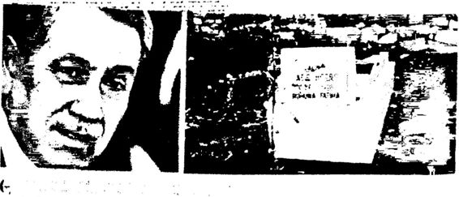 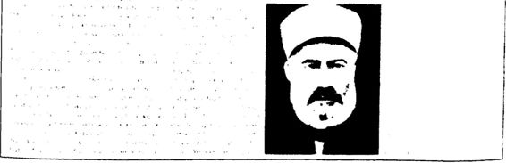 İşbirlikçi, hain İskilipli Atıf'ı AKP kahraman ilan etti.
(Tarihle yüzleşenlerin Türkçe yazını kurallarını da bilmedikleri görülüyor. Dahi anlamındaki dade ile özel adlara gelen ekler ayrı yazılır.)
69
| i 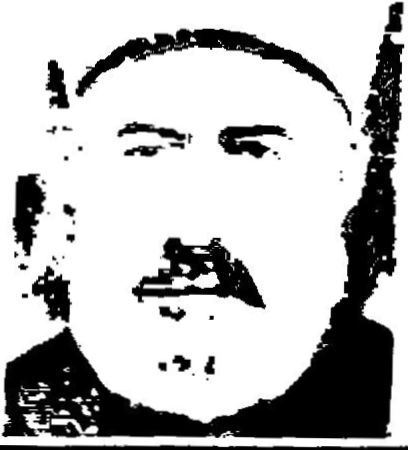 cumhuriyet Zihniyet deşifresi!
Arırıç, sadece mezhepleri yüzünden Türkmenlerin katline fetva veren Ebü Suud ve vatan haini İskilipli Atıf ı "kahraman" ilan etti:
Onlar müşterek karakterimizdir | İskilipli Allf 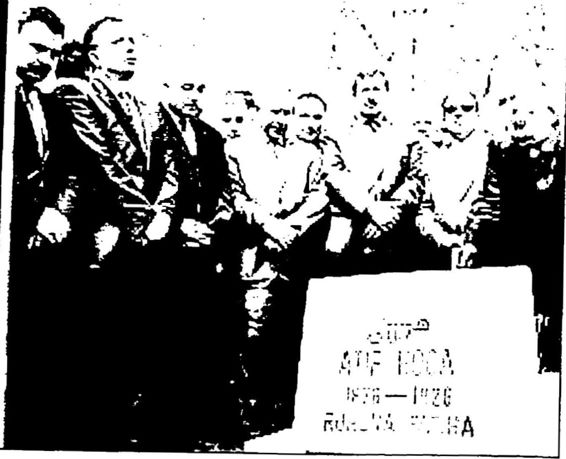 İşbirlikçi, babı İskilipli Atıf’ı AKP kahraman ilan etti.d üşmanıydı Kurayı Milliyete ve cumhunyel devnmterme karşı savaşan İskilipli Atıf, 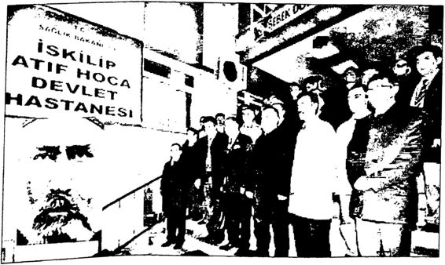 İskilip Devlet Hastanesinin adı, “İskilipli Atıf Hoca Devlet Hastanesi” olarak değiştirildi (Şubat 2012).
| İngiliz ajanıydı. Vatana ihanetten idam edilen İskıhplı Atıf, "Yunan ordusu halifenin ordusu sayılır. Asıl kafası kopan lacak mahlûka! Ankara'dadır' diyerek halkı kurtıduş harekeline ve devnmlere karşı kışkırttığından ve işgalcilerle işbirliği yapmıştı.
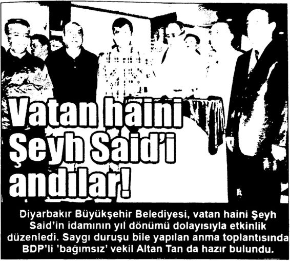 BDP’li Diyarbakır Belediyesi vatan haini Şeyh Said’i kahraman ilan etti.
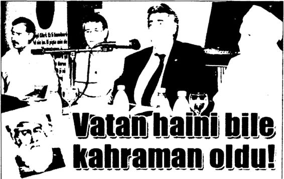 Dıyorbokır'do 1925'te çıkord»$ı ısyonın bostınlmovnın ordındon 47 orkodoîîylo birlikte dom edilen Şeyh Soıd. odıno düzenlenen bir dizi etkinlikle kohromon hol ne getmlmek üzere Şeyh Said İsyanı'mn elebaşı Şeyh Said kahraman ilan edildi.
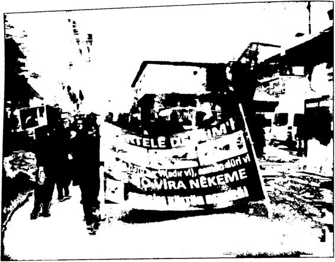 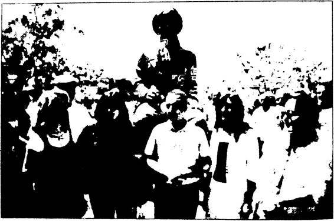 AKP dönenimde isyancı Seyit Rıza'nın heykeli dikilmiş ır idam yıldönümlerinde törenlerle anılmaya haşlanmıştır. Biı Seyit Rıza anma törenindeki çağdaş görünümlü hu kadınlarımızın Atatürk'ü de Sent Rızayı da tanımadıkları çok açık.
DEVLETTEN TARIHİ DERSİM ÖZRÜ 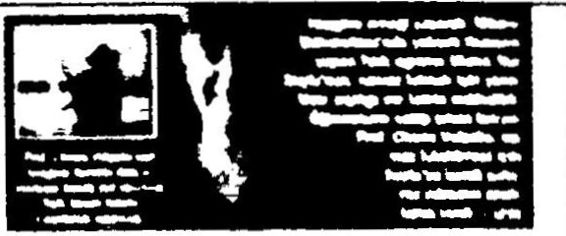 ROMLARA KJUt$l DEV ^•adim 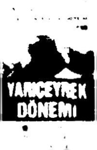 PertekHIer Demeği 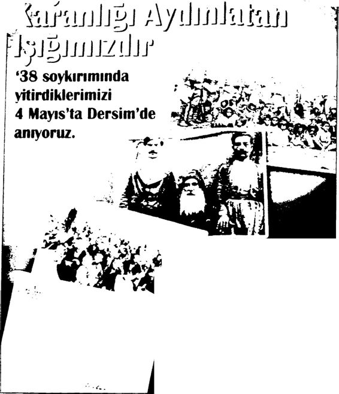 Kurmef tiler Demeği m Munzur Çevre Demeği Gebze Dersim tiler Demeği Gemlik DersknHIer Demeği Munzur Küttür Demeği özgür Demokratik Alevi Demeği Pir Suttan Abdal Demeği Diyarbakır Şubesi Koçgirl Platformu Ağ uçan (Ağu İçen) Demeği HoaBektaf Veli Anadolu Küttür VakhGenet Merkez Hubyar Suttan Alevi Küttür Demeği Onar A KedekUler Demedi Başbakan’ın “Dersim Özrü”nden sonra “Dersim Katliamı!Soykırımı” adlı anma etkinliklerinde büyük bir artış görülmüştür.
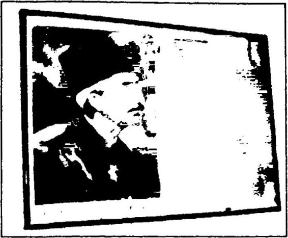 Burdur'un Çavdır İlçesi’ne bağlı Dengere llkokulu’na "Türk Büyükleri köşesine asılan Vahdettin fotoğrafı.
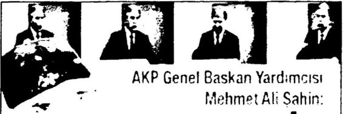 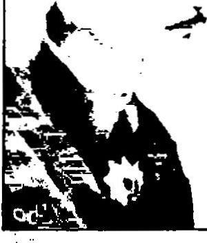 VAHDETTİN HAİN DEĞİLDİ Tarih kitaplarına böyle yazın I 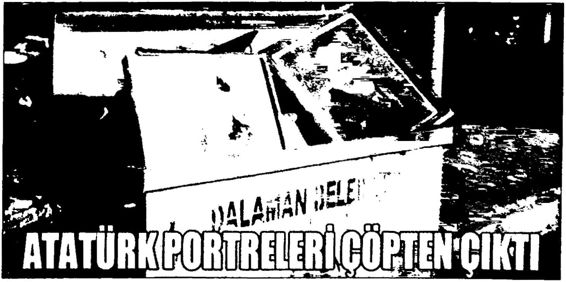 AKP Genel Başkan Yardımcısı M. Ali Şahin 2013 yılında Milli Eğitim Bakanından Vahdettin'den “vatan haini” diye söz eden kitapların değiştirilmesini istemiştir.
2000’lerin sonunda Türkiye’nin değişik yerlerinde çöpten Atatürk fotoğrafları çıkmaya başlamıştır.'* DERSİM KATLİAMDIR!
Arşivler Acilsin SORUMLULAR Hesap Versin 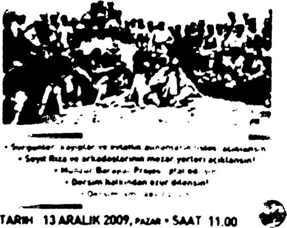 YER KADIKÖY İSKELE MEYDANI
Hangi Resmi İdeoloji, Hangi Resmi Tarih Ülkemizin siyasal İslamcıları, dönme liberalleri ve tatlı su solcu ları sabah akşam resmi ideolojiyle ve resmi tarihle yüzleşiyorlar! An cak “resmi ideoloji” derken kastettikleri şey Kemalizm, “resmi tarih” derken kastettikleriyse Kemalist tarih! Sanki Atatürk’ün 1920’lerde, 1930'larda ortaya koyup “Kemalizm” diye adlandırdığı ilkeler bü tünü bugün varlığını koruyormuş gibi 2013’te hâlâ “Kemalist resmi ideolojiden kurtulmaktan” söz ediyorlar. Sanki Atatürk’ün 10 Kasım 1938'de ölümünden hemen sonra Kemalizme aykırı politikalar izlen meye başlandığını, 1946’dan itibaren Kemalizmin en temel ilkesi “tam bağımsızlıktan” ciddi ödünler verildiğini, 1950’den itibaren ise Kema lizmi yok etmek için bir Karşı Devrim sürecinin başlatıldığını ve bu sürecin 2013’e kadar devam ettiğini bilmiyorlar! Atatürkçülük kılıfına sokularak yapılan darbelerin, özellikle de 12 Eylül 1980 darbesinin, Atatürk’ü meşruiyet aracı olarak kullanıp Kemalizme en büyük zararı verdiğini, Amerikancı, dinci Karşı Devrim’in önünü açtığını bilmezden geliyorlar. Resmi ideoloji diye sabah akşam yakınıp yüzleştikleri Ke malizmin, 12 Eylül 1980 sonrasında neredeyse tamamen yok edildiği ni görmüyorlar, görmek istemiyorlar. Gerçek şu ki, bugün Türkiye’de eğer bir “resmi ideoloji” varsa, o da 19502013 arasında neredeyse kesintisiz biçimde egemenlik kuran ABD güdümündeki dinci sağcı ik tidarların ideolojisidir.
Gazeteci, yazar Uğur Mumcu, 1990’larda kimi çevrelerin “resmi ideoloji” eleştirisi adı altında Kemalizme savaş açmaları üzerine, resmi ideoloji konulu yazılar kaleme almıştır. O yazılar bugün güncelliğini aynen korumaktadır. Örneğin Mumcu 1992 yılında, “Resmi İdeoloji Nedir” başlıklı köşe yazısında şu görüşlere yer vermiştir:
“Son yıllarda üzerinde en çok konuşulan kavramlardan biri ‘resmi ideolojidir. Atatürkçülüğün resmi ideoloji olduğu ileri sürülüyor. Kur tuluş Savaşindan ve laiklikten söz eden herkes ‘resmi ideoloji yandaşi olarak suçlanıyor. Hele hele teröre karşıysanız ‘resmi görüş yanlısı’ eti keti hemen yapıştırılıyor. (...)
Atatürk’ün sağlığında ve İnönü’nün cumhurbaşkanlığında devle tin ideolojisi resmidir. Bu resmi ideolojiye ‘Kemalizm’ adı veriliyor. (...)
Türkiye’deki ‘resmi ideoloji’ çok partili hayata geçtiğimiz 1950 ile son bulmuştur. (...)
Askeri müdahale dönemlerinde yeniden tek görüş resmi görüş ola rak savunulmuştur. Daha doğrusu bu dönemlerde ‘yumruğu kuvvetli olanın Atatürkçülüğü’ o dönemlerin resmi ideolojisi sayılmıştır! (...)
12 Eylül, Atatürkçülüğün sahtesini resmi ideoloji yaptı. ANAP, bu dönemden güç alarak ‘Türkİslam Sentezi’ni ve ‘serbest piyasa ekonomisi'ni resmi ideoloji yaptı.
İslamcılık ilk kez bu kadar yaygın biçimde devlet tarafından destek lendi. YÖK’ün ilk dekan ve rektörlerine bakın; hemen hepsi Türkİslam Sentezi ideolojisini üreten ‘Aydınlar Ocağı’nın kayıtlı üyeleri arasından seçilmişlerdir. Müsteşarlara, genel müdürlere ve daire başkanlarına ba kın; bütün bu bürokratlar, üçlü kararnamelerden önce tarikatlarca atan maları uygun görülenler arasından seçilip atanmışlardır. Yüksek mahke me üyeliği için bile ‘dincilik, tarikatçılık ’ aranan nitelik olmuştur.
Tarikat, ticaret ve siyaset, devletin resmi ideolojisinin üç ayağını oluşturmuş, ‘serbest piyasa’ adı altında devlet destekli ayrıcalıklı şir ketler, iktidar partisi ile iç içe geçmişlerdir.
Resmi görüş de, ticari görüş de, siyasi görüş de bııdur. (...)
Atatürkçülük ve laiklik, devleti kuran ideolojinin temelleridir. Bu ideoloji zamanla yozlaşmış, kendi özüne yabancılaşmış, 12 Eylül döne minde olduğu gibi laikliği yok edecek bir ideoloji haline dönüşmüştür.
Son yıllara kadarki resmi ideoloji sahipleri ‘Türkİslam Sentezi' ve ‘piyasa ekonomisi’ görüşlerini savunanlardır. Bu görüşlerin devlet katındaki en büyük temsilcisi ve simgesi Cumhurbaşkanı Özal’dır... ""
Kemalizm, “tam bağımsızlık” ve “çağdaşlaşma” demektir. Türki ye 1946’dan itibaren kısmen, 1950’den itibarense tamamen tam bağım sızlıktan ve çağdaşlıktan, dolayısıyla Kemalizmden uzaklaşmaya başla mıştır. Kemalizm “resmi ideoloji” olma özelliğini 63 yıl önce yitirmiştir maalesef. Bu yüzden de daha 1950’lerde Kemalizm yerine Atatürkçülük kavramı icat edilmiştir. Soruyorum: Eğer bugün Kemalizm bu ülkenin gerçekten resmi ideolojisi olmuş olsa, Türkiye ABD’ye göbekten bağım lı hale gelir miydi? Türkiye’nin milli varlıkları haraç mezat eşe dosta ve yabancıya satılabilir miydi? Karma Ekonomi, Planlı Devletçilik tama men terk edilebilir miydi? Türkiye’nin bölünmesi, anayasadan Türk lük kavramının ve Atatürk ilkelerinin çıkarılması tartışılabilir miydi? Türkiye’yi yönetenler, Türkiye’nin üniter yapısını tartışmaya açabilir miydi? Eli kanlı bir terör örgütüyle pazarlık yapılabilir miydi? Laiklik ten bu denli ödünler verilebilir miydi? Tarikatlar, cemaatler, şeyhler, şıhlar, hocalar topluma bu kadar yön verebilir miydi? Elcevap: Hayır!
Yine 1992’ye uzanıp yine Uğur Mumcu’nun, bu sefer “Resmi İde oloji” adlı yazısını okuyalım:
“Son yıllardaki en yaygın suçlamalardan biri ‘resmi ideoloji’ sahi bi olmaktır. Bu suçlama da şu kaba mantığa dayanır:
Kemalizm, devleti kuran ideolojidir. Bütün Kemalistler resmi ide oloji sahipleridir. İdeoloji, ‘düşünceyi inceleyen bilim’ anlamına gelir. ‘Resmi’ bilindiği gibi devlet ile özdeşleşen bir kavramdır. ‘Resmi ideo loji’ de devletin ideolojisi demektir.
Kim saptar bu ideolojiyi ve kim uygular?
Resmi ideolojiyi o devleti kuranlar oluşturuyor. Sovyet Devrimi Lenin’in öncülüğünde kurulmuştur. Sovyet toplumuna devlet eliy le aşılanan ideolojiye de ‘Leninizm’ denmiştir. Türkiye Cumhuriyeti Mustafa Kemal tarafından kurulmuş, Atatürk devrimleri devlet eliyle yerleştirilmiş, bu uygulamaya da Kemalizm adı verilmiştir.
Bugün (1992) devlet Kurtuluş Savaşı’nın ideolojisiyle mi yöneti liyor? Hayır.
Bir resmi görüş ya da ideolojinin ortaya atıldığı günden bugünlere kadar olduğu gibi korunmasına ve uygulanmasına olanak yoktur. Si yasal düşünce ve ideolojiler, canlı varlıklar gibi günün koşullarına göre yeniden yorumlanıp uygulanırlar. Bir toplumdaki yaygın ideolojiyi, o topluma egemen olan sınıflar oluşturur.
Türkiye, 1980 darbesiyle yeni bir sürece girdi. (...) Darbe, ‘serbest piyasa ekonomisi’ adı altında bir dizi uygulama başlattı. Bu ekonomik model, iş ve sermaye çevreleri tarafından desteklendi. TÜSİAD, 12 Eylül hükümetine bakan verdi. Askeri hükümetin başbakan yardım cılığına MESS Başkanı Özal atandı. Özal askerlerden aldığı destekle ekonomiyi yönetti.
Türkiye’de egemen ideolojiyi silahlı kuvvetler mi savunur# 12 Eylül Darbesi’nin Genelkurmayı, Özal ile özdeşleşti. Özal ile birlikte ‘serbest piyasa ekonomisi’ adı verilen emir komuta ekonomi sini biçimlendirdi. Bu konudaki resmi ideolojiyi, işadamları, 12 Eylül generalleri ve Özal gibi 12 Eylül bürokratları birlikte oluşturdular. Bugün bazı sosyal demokratları etkisi altına alan ‘serbest piyasa ide olojisi', 12 Eylül generalleri, işadamları ve Özal gibi askeri hükümet bakanlarının ortak çabaları ile ortaya çıktı.
Aynı dönemde Türkiye’de ‘Türkİslam Sentezi' görüşü egemen oldu. Bakanlar, üst düzey bürokratlar ve üniversite yöneticileri, bu mi litan İslamcı ideolojinin yandaşları arasından seçildiler. Devlet, serbest piyasa ve Türkİslam Sentezi yandaşlarınca ele geçirildi.
Bugünkü resmi ideolojide ne ‘Kuvâyi Milliye ruhu, ne ‘Kema lizm' var. Bugünkü resmi ideoloji ‘serbest piyasa' ve Türkİslam Sente zi' gibi iki kavrama dayanıyor.
12 Eylül generallerince desteklenen bu resmi ideolojiye bir ad bulmak ve bu adı da ‘İzm' takısıyla sunmak gerekirse, bu ideolojiye ‘Özalizm' de denebilir. Özal bugün cumhurbaşkanıdır. Savunduğu gö rüşlerle devletin başındadır. Resmi ideoloji, 1980 Darbesi’nden sonra artık ‘Kemalizm' değil, ‘Özalizm’dir.
Bu resmi ve egemen ideolojinin yandaşları basında ve televizyon ka nallarında köşe başlarını tuttular. Bu resmi ve egemen ideoloji dış siya sette Amerikan görüşlerini, Beyaz Saray sözcülerini kıskandırırcasına sa vunuyor. İç siyasette de sol, sosyalizm ve emek düşmanlığını benimsiyor.
Ne kadar ‘zaman aşımına uğramış Marksist’ varsa bu resmi ve egemen ideolojiye sımsıkı sarılıyor. Bu yılgın Marksist çevre ‘Amerikan emperyalizmi ve yerli işbirlikçileri' söylemini, işçi sınıfın egemen sınıf olgusunu, sınıf gerçeğini ve çelişkilerini devrim müzelerinde bırakıp, etnik çelişkileri ön plana çıkartmaya çalışıyor. Bunlar, Amerika'nın ‘Yeni Dünya Düzeni' ile bölgeye getirmek istediği yeni siyasal coğraf yayı da görmezlikten geliyorlar.
Kemalizmin bağımsızlık inancına da tıpkı Suudi destekli İslamcı lar ve bu ‘Yeni Dünya Düzeni' içinde yer kapmaya kalkışan Kürtçüler gibi düşman kesiliyorlar.
Bu ideoloji yalnızca ‘resmi’ mi? Hayır, hem ‘resmi’ hem 'ticari'. Devleti kuran resmi ideoloji Kemalizm, ‘Kuvâyi Milliye ruhuna' daya nıyor. 12 Eylül Darbesi ile devleti ele geçiren resmi ideoloji de ‘Kuvâyi ticariye’ ruhuna!”
Uğur Mumcu'nun 1992'de kaleme aldığı bu yazı 2013 Türkiyesi’ni de anlatıyor gibi. Şöyle ki, bugün de “resmi ideoloji” adı altında hâlâ Kemalizmle hesaplaşan eski Marksistlerimiz, kadim dincilerimiz var. 12 Eylül 1980 Darbesi’ne rağmen 1992’de “resmi ideoloji” derken hâlâ Kemalizmi eleştirenler, o günün gerçek resmi ideolojisinin artık Kemalizm değil Özalizm olduğunu görmedikleri gibi, bugün 2013’te “resmi ideoloji” diye hâlâ Kemalizmi eleştirenler de bugünün gerçek resmi ideolojisinin “Erdoğanizm” olduğunu görememektedirler. Uğur Mumcu’nun son cümlesi bugün için de birebir geçerlidir: “Devleti ku mu resmi ideoloji Kemalizm, ‘Kuvâyi Milliye ruhuna’ dayanıyor. 12 Eylül Darbesi ile devleti ele geçiren resmi ideoloji de ‘Kuvâyi ticariye’ ruhuna!" 12 Eylül Darbesi’yle devleti ele geçiren resmi ideoloji bu gün her zamankinden daha güçlüdür. Bu nedenle bugün eğer gerçek ten “resmi ideoloji” ile yüzleşmekten, hesaplaşmaktan söz edilecekse 12 Eylül Darbesi ile devleti ele geçiren “Amerikancı”, “dinci” resmi ideolojiyle yüzleşmek, hesaplaşmak gerekir. Ancak Uğur Mumcu’nun 1992’de ifade ettiği gibi: "Resmi ideoloji diye, Kemalizme ve laikliğe saldıranların kaçta kaçı, bugünkü resmi ideoloji ile bir hesaplaşmaya girdi ve giriyor? Giremezler, çünkü bu beylerin çoğu bugünkü resmi ideolojinin sözcüleri ve gözcüleridir...” Bizim devşirilmiş aydınları mız ancak kendilerine verilen görev gereği Kemalizmle hesaplaşabilir ler. Üstelik mertçe değil, yalanla, dolanla, çarpıtmayla...
Bugün “resmi ideoloji” diye Kemalizme savaş açanlar, doğal ola rak “resmi tarih” diye de Kemalist tarihe, Türk Tarih Tezi’ne ve Türk Bağımsızlık ve Aydınlanma Savaşı Tarihi’ne savaş açmışlardır. Ancak 1950’den itibaren tıpkı Kemalizm gibi Kemalist tarih anlayışı da yok edilmeye başlanmıştır. Daha önce ayrıntılı olarak anlattığım 1949 yı lındaki “Türkiye ile ABD arasında Eğitim Komisyonları Kurulmasına İlişkin Anlaşma” ile Türk eğitim sistemi ABD’li uzmanların kontrolüne bırakıldıktan sonra başlayan süreçte Kemalist tarih görüşü olan “Türk Tarih Tezi” yerine bir ABD projesi olan “Türkİslam Sentezi” haya ta geçirilmiştir. Daha önce de ifade ettiğim gibi eğer bugün gerçekten de bir resmi tarihten söz edeceksek, 19502013 arasında Türkiye’de egemen olan Türkİslam Sentezi’nden söz etmemiz gerekir. Eğer bu gün gerçekten “resmi tarihle yüzleşeceksek” de bu ABD güdümlü tarih
anlayışıyla yüzleşmemiz gerekir. Bugün tarihimizde göze çarpan yan lışların, eksiklerin, çarpıtmaların sorumlusunun “resmi tarih” olduğu doğrudur. Ancak burada kilit soru “hangi resmi tarih” sorusudur. Kemalist tarih anlayışı 1949’dan itibaren unutulmaya terk edildiğine göre, bugün tarihimizdeki yanlışların, eksiklerin, çarpıtmaların sorum lusu 19502013 arasında ABD’nin şekillendirdiği Batı merkezci tarih anlayışıdır.
1990’larda “resmi ideoloji” diyerek Kemalizme saldıranların mantıksızlığını gözler önüne seren Uğur Mumcu, yine 1990’larda “res mi tarih” diyerek Kemalizme ve Atatürk’e saldıranların da maskesini düşürmüştür. Uğur Mumcu’nun “Resmi Tarih” başlıklı yazısından ak tarıyorum:
“Son yıllarda İslamcısından Marksistine kadar genişleyen düşünce yelpazesinde yer alan birçok kişi ‘resmi tarih’ten yakınıyor. (...)
Resmi tarihe karşı olan oturur, araştırır ve yazar.
Yakın tarihle ilgili tek bir araştırma yapmayacaklar, sonra da ku laktan dolma ve çoğu yarım yamalak ve yalan yanlış bilgiler ile ya meyhane köşelerinde gevezelik yapacaklar ve gazetelerde resmi tarih ile ilgili yazılar yazacaklar! Resmi tarihe karşı olalım derken, ortaya yapay zorlamalarla oluşan bir başka yoz tarih anlayışı çıkıyor. Resmi tarih ve resmi ideoloji kurulu düzenin ürünleridir. Son yıllardaki kuru lu düzen 12 EylüVün emir ve kumanda zinciri ile benimsetmeye çalış tığı resmi Atatürkçülük ile arabesk liberalizmin ‘Tiirkİslam Sentezi' ile aşılanmış biçimiydi.
Bugün çağdaşlık konusunda elle tutulur ne kalmışsa, hepsi Ata türk döneminin eseridir... ”
Tarihle yüzleşmek iyidir! Ne de olsa bu yüzleşme sonunda orta ya çıkacak belgeler ve bilgiler ışığında tarih en objektif ve en gerçek biçimde yeniden yazılacaktır. Ancak bizdeki durum çok farklıdır. Bi zim tarihle yüzleşmecilerimizin amacı belge ve bilgiler ışığında tarih sel gerçeklerin ortaya çıkarılması değil, belge ve bilgileri çarpıtarak Atatürk’ün tarihsel rolünü azaltmaktır. Bu nedenle Türkiye’de tarihle yüzleşenlerin iki ortak özelliği vardır: Birincisi, sadece 19191938 ara sındaki Atatürk dönemiyle yüzleşmeleri; İkincisi, bu yüzleşmede hep Atatürk’ün aleyhine sonuçlara ulaşmaları... Bu yüzleşme sonunda Ata rurk lehine tek bir sonuca ulaşmamış olmaları, bu yüzleşmecilerin asıl amaçlarım gözler önüne sermektedir.
Peki ama 1950'den itibaren ABD emperyalizminin güdümündeki dinci/sağcı iktidarların sürekli saldırısına uğrayan, 63 yıl önce resmi ideoloji olmaktan çıkartılan Kemalizm, bugün hâlâ neden ABD, AB ve yerli işbirlikçilerini o kadar fazla rahatsız etmektedir? Madem bugün Kemalist ideoloji yok, madem bugün Kemalist tarih anlayışı egemen değil, peki devşirilmiş aydınlarımızın ve güdümlü siyasilerimizin sabah akşam “resmi ideoloji” ve “resmi tarih” diye Kemalizme, Atatürk’e saldırmalarının nedeni nedir? Yanıt verilmesi gereken asıl önemli soru budur. Bence bu durumun temel nedeni Kemalizmin 19191938 ara sındaki 19 yıllık sürede yarı bağımlı, yenilmiş, teslim olmuş bir üm met imparatorluğunun enkazıyla gerçekleştirdiği “tam bağımsızlık” ve “çağdaşlaşma” mucizesinin gücüdür. Türkiye’de Kemalizm 19 yılda, dünyada benzerine rastlamadık bir şekilde çok güçlü ve derin kökler salmıştır. Kemalizmi bir ağaca benzetecek olursak, 1950’den sonra, ever emperyalizm ve yerli işbirlikçileri o ağacın dallarını neredeyse ta mamen budamışlar, hatta gün gelmiş o ağacı en dibinden kesmişlerdir, ama ağacın derinlere işleyen köklerinden aldığı güçle yeniden yeşer mesini bir türlü engelleyememişlerdir. Ağaç sürekli yeni sürgünler ver miş ve vermektedir. İşte 2013’te bugün hâlâ Kemalizmle ve Atatürk’le mücadele edilmesinin nedeni budur? Amaç, ağacın bir daha sürgün vermemesi için Kemalist kökleri kurutmaktır. İşte yüzleşme adı altında yapılan kepazeliğin asıl amacı budur.
Bu bölümü Uğur Mumcu’nun şu değerlendirmesiyle bitirelim:
“Bugün resmi ideoloji diye Atatürk'e ve Atatürkçülüğe saldıranlar da başka resmi ideolojilerin sözcüleridir. (...)
Mercedes bayileri gibi BMW bayileri gibi ve İslamcı banker söz cüleri gibi başka resmi ideolojilerin temsilciliklerini yapanların ‘res mi ideoloji’ adına bir umacı yaratıp bu umacıya saldırmaları ‘yeni McCartizm’dir. McCartizm, komünizm korkusunu paranoya haline getiren ‘soğuk savaş ideolojisidir. Yeni McCartizm de uluslararası sermayenin, bağımsızlık, emek ve emekçi düşmanlığı yapan ‘ılık savaş ideolojisi’ değil de nedir?”
Atatürk Kurumlarının İşlevsizleştirilmesi ABD ve AB istekleri doğrultusunda, Atatürk Cumhuriyeti’nin Yeni Osmanlı’ya dönüştürülmesi sürecinde erken dönem Cumhuriyet tarihine yönelik eleştirilerin odağında Cumhuriyet’in kurucusu Atatürk vardır. Bu süreçte Atatürk, ders kitaplarında tarihsel rolü azaltılarak anlatılmaya çalışılmakta, güdümlü yandaş aydınlar tarafından gazete köşelerinde, televizyon ekranlarında, dergi sayfalarında suçlanıp aşa ğılanmaktadır. Topluma Atatürk’ü ve Atatürkçü düşünceyi anlatmak amacıyla kurulmuş Atatürk kurumlan ve üniversitelerdeki Atatürk kürsüleri işlevsizleştirilmektedir. Aslında bu kurumlan ve kürsüleri ta mamen kaldırmak niyetindeki AKP hükümeti, kamuoyundan gelecek tepkileri düşünerek ilk aşamada bunları kaldırmak yerine işlevsizleştir me yoluna gitmiştir.
Bu arada Atatürk kurumlan derken hem Atatürk’ün kurduğu ku rumlar hem de Atatürk’ü, Cumhuriyet’i araştırıp anlatmakla görevli kurumlar ve kürsüler akla gelmektedir. Atatürk’ün kurduğu sosyal, kültürel, ekonomik nitelikli kurumların AKP hükümeti döneminde na sıl haraç mezat satıldığı herkesin malumudur, bu nedenle bu kurumlar dan söz etmeyeceğim. Ben burada Atatürk’ü, Cumhuriyet’i araştırıp en doğru şekilde topluma anlatmakla görevli olan kurumlardan, üniversi telerden, üniversite kürsülerinden söz edeceğim.
Aslında şu soruyu sorarak başlamak lazım: Atatürk’ün kurduğu “kültür” kumrularına ne oldu? Türk Tarih Kurumu, Türk Dil Kuru mu, Ankara Dil ve TarihCoğrafya Fakültesi. Bu Fakültedeki Hititolo ji, Sümeroloji, Antropoloji kürsüleri ne oldu? İstanbul Üniversitesi ve bu üniversitedeki Türkiyat Enstitüsü ne oldu? Halkevleri, Halkodaları, Köy Enstitüleri nerede? Arkeoloji müzeleri ne halde? Arkeolojik kazı lara ayrılan bütçeler ne durumda? Bu kurumlar 1920’lerde, 1930’larda Atatürk’ün belirlediği “ilerici” hedefler doğrultusunda gelişip çağı ya kalayabildiler mi, yoksa...
Maalesef bu kurumların çoğu 1950’lerden itibaren “ilerici” he deflerinden uzaklaşmış, önemli bir bölümü de kapatılmıştır. Örneğin Halkevleri, Halkodaları, Köy Enstitüleri 1950’lerde kapatılmıştır. An kara Dil ve TarihCoğrafya Fakültesindeki kürsülerin çoğu zaman içinde “ilerici” hedeflerinden uzaklaşmıştır. Tarihi, sadece 600 yıllık Osmanlı hanedan tarihine indirgeyen 1950 ve sonrasının “sağcı” Karşı
Devrimci iktidarları döneminde üniversitelerimizdeki Sümeroloji, Hi titoloji, arkeoloji, antropoloji kürsüleri, üniversite sınavlarında en az puan alan öğrencilerin mecburen kayıt yaptırdıkları “işlevsiz” bölüm ler haline getirilmiştir.
Çok gerilere gitmeyelim, 1990'larda Necmettin Erbakan’ın RP’si döneminde kültür kurumlarının başına din adamlarının atandığı ha berlerini okumaya başlamıştık aslında. Örneğin 1994 yılında “İstan bul Kütüphane ve Müzeler Müdürlüğü "ne Biiyükçekmece Liseli Din Kültürü ve Ahlak Bilgisi Dersi Hocası Yakup Knloğlu atandı” haberi yansımıştı basına. Yine 1994 yılında, o zamanlar RP’li İstanbul Bü yükşehir Belediye Başkanı olan R. Tayyip Erdoğan kültür, sanat konu sunda aynen şöyle demişti: “Sanat adına Allahsızlığa prim vermem”, "Sanatı şehvet sömürüsüne alet edemem ”, “Tiyatro adına çadır tiyat rosu oynatamam”, “Asıl gerici boynuna kravat takıp kendilerini ileri ci görendir.”* “Bale insanı belden aşağısı ile meşgul ediyor.” Aynı Erdoğan, belediye başkanı olduğu dönemde “Atatürk düşmanı” Sadık Albavrak’ı da kültür işlerinin başına getirmişti.
Atatürk’ün kültür kurumlan dört farklı dönemde dört büyük dar be yemiştir. İlk darbe 19501960 Menderes döneminde, ikinci darbe 19801983 Kenan Evren döneminde, üçüncü darbe 19831993 Turgut Özal döneminde ve dördüncü darbe ise 20022013 R. Tayyip Erdoğan döneminde... Menderes, Halkevlerini, Halkodalarını, Köy Enstitüleri ni kapatmıştır. Kenan Evren, Tarih ve Dil Kurumlarının özerkliğine son vermiş, üstelik bunu Atatürk’ün vasiyetini hiçe sayarak yapmış tır. Evren ayrıca Türkİslam Sentezi’ne uygun bir Atatürk kurgula mak için Atatürk Kültür, Dil ve Tarih Yüksek Kurumu’nu (AKDTYK) kurmuştur. Dahası “Devrim Tarihi” derslerine “İnkılâp Tarihi” adını vererek bu derslerin içini boşaltmıştır.
12 Eyiül’ün yarattığı Amerikancı, dinci, “resmi ideoloji”, özellikle AKP iktidarı döneminde her şeyden önce Atatürk’ün mirasını tama men reddetme yoluna gitmiştir. Önce devlet üniversitelerdeki Atatürk çü kadroların yerine Atatürk karşıtı kadrolar göreve getirilmiş, sonra “İnktlâp Tarihi ve Atatürkçülük” dersi müfredattan kaldırılmak isten miştir. 2012 yazında tartışmaya açılan bu konuda, Ermeni tezlerini sa vunmasıyla ve Atatürk karşıtı duruşuyla tanınan Sabancı Üniversitesi öğretim üyesi Prof. Dr. Halil Berktay Taraf gazetesine verdiği demeçte: “Ne ilk ve orta öğretim ne üniversite düzeyinde Atatürk ilkeleri diye bir ders olamaz. Çağımızda hiçbir ülke gençlerini ama Kemalizm ama Marksizm şu veya bu tür bir nasyonalizmin ilkelerine göre yetiştirmeyi, böyle tek tip bir ideolojik yapılanmayı bütün gençliğine empoze etmeyi tasavvur edemez,” demiştir. Öncelikle, anayasada ve YÖK yasasında Atatürk ilkelerine bağlılık ifadelerinin çıkarılması gerektiğini söyleyen Berktay, “Bunlar olmadan da YÖK’ün bu tartışmayı yapmasını son derece hayırlı görüyorum. Üniversite gençliğinin zihinlerini cendereye alma çabalarının bir halkası da kırılmış olacaktır, ” ifadelerini kullan mıştır. Yıldız Teknik Üniversitesi öğretim üyesi Yrd. Doç. Dr. İsmet Akça da, “ Üniversite düzeyinde Atatürk İlke ve İnkılâpları Tarihi dersi diye bir ders abesle iştigal. İnsanlık Tarihi, Türkiye Tarihi dersi olur. Ama De Gaulle İnkılâp Tarihi, Lincoln İlke ve İnkılâp tarihi olamaya cağı gibi böyle bir ders de olamaz, ” demiştir.
“İnkılâp Tarihi ve Atatürkçülük” dersinin kaldırılmasını kafasına koyan AKP hükümeti, kamuoyundan gelen tepkilerden dolayı bu ka rarından vazgeçmiştir. Ancak bu sefer de bir taraftan devlet üniversite lerindeki “İnkılâp Tarihi ve Atatürkçülük” derslerinin içi olabildiğince boşaltılırken, diğer taraftan sayıları her gün artan özel üniversitelerin önemli bir bölümünde Atatürk ve Cumhuriyet karşıtlığı neredeyse “ders” olarak okutulur hale gelmiştir! Atatürk’ün “manevi mirasım" dediği akıl ve bilimin yerini “hurafe” almıştır. Bir anlamda Atatürk’ün üniversite reformuyla Darülfünun’dan üniversiteye dönüştürdüğü ku rumlar, bugün yeniden üniversiteden Darülfünun’a dönüştürülmekte dir sessiz sedasız.
En güncel örneklerden başlayalım:
Üsküdar Üniversitesi’nin kurucu rektörü Prof. Dr. Nevzat Tarhan 2012 yılında “internet” konusunda şu bilimsel (!) açıklamaları yap mıştır:
"Internet kıyamet alametleri arasında sayılan Dabbetül Arz ola bilir. İslam dünyası henüz bu alamet üzerinde görüş birliğine varmış değil. Dabbetiil Arz yerde debelenen bir canlıdır. İnternet de fiber optik altyapısı ile sinizoidal dalga frekansı ile çalışması nedeniyle de belenen bir görünüm sergiliyor. İnternet, Dabbetül Arz gibi iyiye ve kötüye hizmet edebilir. İyi insan yetiştirmeyi amaçlayanların interneti bu amaçla uygulamaları dini bir vecibe, zorunluluktur...”* 2012 Türkiyesi’nde bir özel üniversitenin tanınmış bir kurucu rek törü interneti dini pencereden böyle değerlendirmiştir.
İkinci örneğimiz bu sefer bir devlet üniversitesinden: Kırklareli Üniversitesi Dekanı ve felsefe profesörü Prof. Dr. Teoman Duralı, ikti dara yakınlığıyla bilinen Haber 7’ye yaptığı açıklamada tüm okulların imamhatipleştirilmesini ve üniversitelerin medrese olmasını istemiştir. Şu sözler Prof. Duralı’ya aittir: “İmamhatiplerin müfredatı genelleş tirilip tüm okullara uygulanmalı. Neden üniversite adım veriyoruz, adını medrese koyalım. Fakültelerin isimleri de mektep olsun. Bir ta rafta üniversite diğer tarafta medrese ayrımı çok tehlikeli. Bu ülkenin bölünmüşlüğüne son vermek lazım artık...” Prof. Duralı anlaşılan Osmanlı döneminde kalmış! Atatürk’ün 1924 tarihli Tevhidi Tedrisat Kanunu’yla mektepmedrese ayrımının sona erdirilerek eğitim öğretim birliğinin sağlandığından haberi yok! 2012’de bile hâlâ üniversite medrese ayrımından söz edebiliyor ve üniversitelerin yeninden medre se diye adlandırılmasını isteyebiliyor. Aslına bakılacak olursa burada kurumların nasıl adlandırdığından çok bu adlandırmaların altında yatan zihniyeti görmek gerekir. Atatürk çağdaş, bilimsel, laik, evrensel ilkelere uygun eğitim, öğretim yapılmasını istediği için yüksek öğretim kurumlarına “üniversite” adı verilmiştir. Prof. Duralı ise çağdışı, ev rensel ilkelere uymayan ve dinsel bir eğitim öğretim yapılmasını istedi ği için yüksek öğretim kurumlarına “medrese” adının verilmesini iste mektedir. Ne demişler, “kişinin fikri ne ise zikri de odur”. Üniversite kavramından rahatsız olup medrese isteyenin, “fikrinin” ne olduğunu anlamak hiç de zor değildir doğrusu!
Eğitim dünyasının duayen isimlerinden Prof. Dr. Teoman Dur 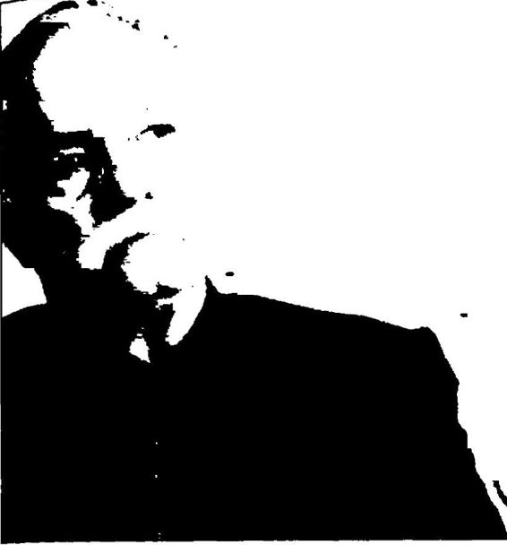 İMAMHATİP MUFREDA TUH OKULLARA UYGUIANMAİ ZenciBeyaz Kürt. TürkKürt kavgasından daha tehlik Ankara'ya gidip Turgut Özal’ı uyard Saman Türkler gibi Zerdüşt Kürtler tür< Üniversiteler "medrese'' ols Prof. Duralı Türkiye’nin eğim sorunlarına şöyle bir çözüm önerisi getirmiştir:
“Şimdiye kadar bu din eğitimini yasaklamak suretiyle sağlanıyor du, şimdi de din ile dünyayı birleştirmek zorundayız. İmamhatiplerin müfredatının genelleştirilip tüm okullara uygulanması gerektiğini sa vunmuşumdur hep, en başta da askeri okullara. Disiplin hayatın her alanında gereken bir şey. Askerlik dış disiplin veriyor. Din, iç disiplini sağlıyor. İç disiplin olmadan dış disiplin bir kabuktur. Miislümanlarda iç disiplin var ama dış disiplinden yoksun. Dış disiplin olmadığı için hercümerç haldeyiz. Müslüman olmayana kendi dininde ders verilir, Alevi vatandaşa da özel müfredat hazırlanır. Ama şart olan şey din bil gisiyle donanmış olmasıdır. Bu sadece dindar yetiştirme babında değil, dinsiz olacaksa da niye dinsiz olduğunu bilsin. ”
Görüldüğü gibi 2012 yılında Türkiye’de bir devlet üniversitesi deka nı yüksek öğretimi sadece “din eksenli” olarak değerlendirebilmektedir. Aslında Prof. Duralı, Atatürk sonrası Amerikancı, dinci Karşı Devrim ideolojisine tipik bir örnektir. Bu ideolojinin odağında laik eğitim yeri ne dinsel eğitim vardır. Nitekim, daha 1969’da Cumhurbaşkanı Cevdet Sunay, "... Laik okullar birer anarşi yuvası haline geldi. Bu (laik) okul lardan yetişen gençlere memleket idaresi teslim edilemez. On yıl sonra bunların hepsi iş başına geçecekler. Onlara nasıl güvenebilirizf Hem biz laik okullara karşı imamhatip okullarını bir alternatif olarak düşünüyo ruz. Devletin kilit mevkilerine yerleştireceğimiz kişileri bu (imamhatip) okullarda yetiştireceğizdiyerek laik eğitimden duyduğu rahatsızlığı dile getirmiştir. Bu rahatsızlığın ilacı olarak da dinsel eğitim öğretim verilen imamhatip okullarını önermiştir. 12 Eylül, laik eğitime en büyük darbe lerden birini vurmuş, imamhatiplerin önünü ardına kadar açmıştır. Bu duruma tepki duyan Uğur Mumcu, 1993’te Cumhuriyet gazetesindeki köşesinde şunları yazmıştır: “... 1973 yılında çıkarılan Milli Eğitim Te mel Yasası'nm 31. maddesi liseleri bitirenlerin ancak yetiştirildikleri yön de yüksek öğrenim yapacakları ilkesini getirmişti. Bu madde ne zaman değiştirildi biliyor musunuz? Atatürkçülük adına yasa düzeninin getirildi ği 12 Eylül döneminde. Bu madde 16 Haziran 1983 günü değiştirilerek, maddedeki yetiştirildikleri yönde yüksek öğrenim yapma koşulu kaldırıl dı. Cumhurbaşkanı Kenan Evren ve Milli Güvenlik Konseyi sabah akşam ‘Atatürk, Atatürk’ diye diye Atatürk’ün Tevhidi Tedrisat Kanununu rafa kaldırarak imamhatiplere yüksek öğrenim kapılarını açtılar...”Uğur Mumcu’nun bu yazısından bir yıl kadar sonra, 16 Eylül 1994’te R. Tayvip Erdoğan, Tiim okullar imamhatiplere dönüştürülecek,” demiş tir. Erdoğan, 16 Eylül 2012’de de, “İmamhatip okulları, milletin okul ları olarak eski parlak günlerine geri dönüyor. (...) Ne zarar gördünüz imamhatip okullarından da bunları kapattınız. Ne yaptı imamhatipliler size de bunları kapattınız. Terörist yetişmediği için mi imamhatip okul larını kapattınız, anarşistler yetişmediği için mi imam hatip okullarım ka pattınız. Vatana hizmet aşkıyla yandıkları için mi imamhatip okullarını kapattınız,” diyerek imamhatip okullarını yüceltmiştir. Başbakan Er doğan birilerine, “Neden imamhatipleri kapattınız?” diye soruyor ama ülkemizde 1930’larda öğrenci yetersizliği yüzünden bir süre mecburen kapalı kalmaları dışında imamhatipler hep açık olmuştur.
AKP 2013 yılında normal okulların da imamhatip okullarına dönüştürülmesine başlamıştır. Sözcü gazetesi yazarı Saygı Öztürk’ün haberine göre, MEB yaklaşık 5000 ilköğretim okulunu imamhatibe dönüştürmeyi planlamıştır. İlköğretim okulları karşısında imamha tiplere öncelik tanınacak, imamhatipler teşvik edilecektir. İl Milli Eğitim Müdürleri, imamhatiplere bina bulunması için özel olarak ça lışacaktır. Durum böyle olunca, “İmamhatiplerin müfredatı genel leştirilerek bütün okullara uygulansın,” diyen dekan Profesör Teoman Duralı’ya fazla kızmamak gerekir doğrusu!
AKP iktidarı döneminde üniversitelerimiz bir taraftan Atatürk’ün laik, akılcı ve bilimsel eğitiminden iyice uzaklaşılırken, diğer taraftan Atatürk de üniversitelerimizden uzaklaştırılmıştır. Örneğin, 2013 yı lında Trakya Üniversitesi Web sitesinden Atatürk ve Türk bayrağı kal dırılmıştır.
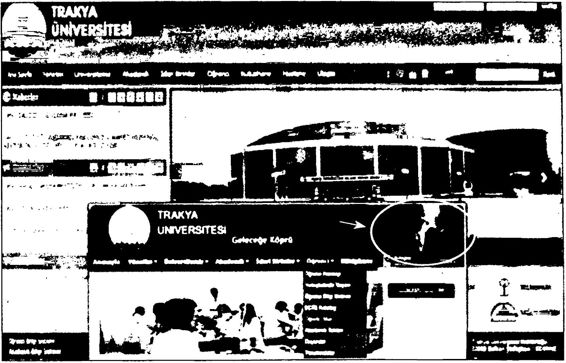 Trakya Ürıiv er sitesi'nin eski sitesinde Atatürk ve Türk bayrağı var, yenisinde yok AKP döneminde 2004 yılında Trakya Üniversitesi rektörlüğü ne atanan Prof. Dr. Enver Duran, (6 ve 7’nci dönem rektörü) Lozan Antlaşması’nın 89’uncu yıldönümü nedeniyle Trakya Üniversitesi Ka raağaç Yerleşkesi Güzel Sanatlar Fakültesi’nde düzenlenen törende, 24 Temmuz 1923’te imzalanan Lozan Antlaşmasının süresinin 100 yıl olduğunu öne sürerek, “2023 diye dilimizde pelesenk oldu, ama bu antlaşma 2023 yılında bitiyor!” demiştir. Yani rektörlük yapmış bir profesör, kendisini dinleyen gençlerin gözlerinin içine bakarak gerçek leri çarpıtmış ve Lozan Antlaşmasının 2023’te biteceği yalanını söy lemiştir. AKP döneminde bu yalanın sürekli dillendirilmesinin nedeni, Lozan Antlaşmasının Amerikan projesi BOP’a ve Yeni Osmanlıcılı ğa engel olmasıdır. Bilindiği gibi yüzyılın başında İstanbul merkezli, e> aletlerden oluşmuş, başında kukla bir halifenin/başkanın bulunduğu bir Türkiye planlayan emperyalizmin Sevr Antlaşması oyunu Kurtuluş Savaşı'nın kazanılmasından sonra Lozan Anlaşmasının imzalanma sıyla bozulmuştur. Şimdi 2023 hedefi doğrultusunda yeniden o Sevr Antlaşmasfna ihtiyaç vardır! Bu nedenle birileri, Lozan’ın son kullan ma tarihinin gelmesini beklemektedir. Lozan’ın son kullanma tarihi yoktur. Lozan, Türkiye Cumhuriveti’nin tapusudur ve Türkiye Cum huriyeti var oldukça Lozan var olacaktır.
AKP hükümeti bir taraftan üniversitelerden Atatürkçü eğitimi ta mamen dışlamanın hesaplarını yaparken, diğer taraftan Atatürk ku rumlarmı işlevsizleştirmenin hesaplarını yapmaktadır. Bu çerçevede başbakana ve cumhurbaşkanına bağlı olan Atatürk kurumlan, Ata türk karşıtı ve Atatürk’le ilgisiz kişilerce doldurulmaktadır. “Atatürk Kültür, Dil ve Tarih Yüksek Kurumu” bu işlevsizleştirilen kurumların başında gelmektedir.
Gazeteci Melih Aşık, “Garip Bir Atama” başlıklı köşe yazısında “Atatürk Kültür, Dil ve Tarih Yüksek Kurumu (AKDTYK)”na Başba kan ve Cumhurbaşkanı tarafından yapılan atama hakkında şu bilgileri vermiştir:
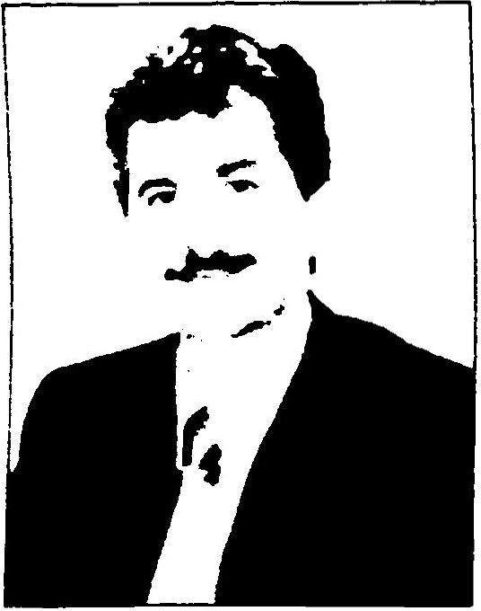 Prof. Derya Örs “ Atatürk Kültür, Dil ve Tarih Yüksek Ku rumu Başkanlığına Profesör Derya Örs atan dı. Görevi nedir bu kurumun? Anayasa’nın 134. maddesi: ‘Atatürkçü düşünceyi, Atatürk ilke ve inkılâplarım, Türk kültürünü, Türk tarihini ve Türk dilini bilimsel yoldan araş tırmak, tanıtmak ve yaymak.’ Başbakanlığa bağlı bu kurum; Atatürk Araştırma Merke zi, Türk Dil Kurumu, Türk Tarih Kurumu ve Atatürk Kültür Merkezinden oluşuyor... Atatürk’ün vasiyetnamesinde belirtilen kay naklarla besleniyor. Peki, kurumun başına atanan Sayın Derya Örs’ün üniversitenin birinci sınıfından itibaren ilgilendiği konuları, çalışma larını, uğraşlarını gözden geçirdik. Atatürk, Türk tarihi, Türk dili ile en küçük ilgisini görmedik. Ankara Üniversitesi Pars Dili ve Edebiyatı bölümünü bitirmiş, kendi özgeçmişinde araştırma ve çalışma alanları ‘Klasik ve Modern Fars Dili ve Edebiyatı, Yazma Eserler, Mevlâna ve Pişerleri’ olarak belirtiliyor... Üyelikleri; Türkiye Yazarlar Birliği ve Mevlâna Araştırmaları Derneği. Lisans Tezi: Hâcûyi Kirmânî, PIü tmyu Hümâyûn (Çeviri), Yüksek Lisans Tezi: Kâşânî, Tarihi Olcay tu (İncelemeÇeviri), Doktora Tezi: Fazlullâh b. Rûzbihânı Huncı ve Tarihi Alemarayi Emini'si. Oluşturduğu kitaplar, makaleler, çevi rilere bakılırsa... Sayın profesör bir Fars dili ve Mevlâna uzmanı sayı labilir... Ancak Atatürk, Atatürkçülük, Türk tarihi, Türk dili ile ilgili bir tek satır yazısı veya konuşması yok. Böyle bir tercih hangi ölçü ve amaçlarla yapılmış olabilir?”
Melih Aşık, “İbretlik Atama” başlıklı başka bir yazısında da AKDTYK’na bağlı “Atatürk Araştırma Merkezi”ne yapılan bir ata madan şöyle söz etmiştir:
 Mehmet Ali Beyhan “(...) Atatürk Araştırma Merkezinin başına Atatürk ile ilgili hiç bir çalışması bulunmayan bir isim getirildi: Mehmet Ali Beyhan... Beyhan’ın özgeçmişi Atatürk Araştırma Merkezinin internet sitesinde. Sayın Profesörün kitapları, makaleleri, bilim sel çalışmaları sıralanmış orada... Atatürk adına tek bir araştırması, tek bir makalesi, tek bir satırlık yazısı yok. Görev tanıtımı şöyle:
Mehmet Ali Beyhan “(...) Atatürk Araştırma Merkezinin başına Atatürk ile ilgili hiç bir çalışması bulunmayan bir isim getirildi: Mehmet Ali Beyhan... Beyhan’ın özgeçmişi Atatürk Araştırma Merkezinin internet sitesinde. Sayın Profesörün kitapları, makaleleri, bilim sel çalışmaları sıralanmış orada... Atatürk adına tek bir araştırması, tek bir makalesi, tek bir satırlık yazısı yok. Görev tanıtımı şöyle:
‘Halen İstanbul Üniversitesi Edebiyat Fakül tesi Tarih bölümünde profesör olarak görev yapan Beyhan, Osmanlı ve Yakınçağ Osmanlı Tarihi Metinleri ve Yakınçağ Osmanlı Tarihi Kaynakları üzerinde dersler vermektedir.’ Bu arada II. AbdülhamidTe ilgili çalışmalar yap mış... Yüksek Kurum, adı üstünde, Atatürk, dilimiz ve tarihimizle ilgili ciddi bilimsel araş tırmalar yapmakla yükümlüdür... Cumhurbaşkanı ve Başbakan ın im zalarıyla yapılan bu iki atamada da ne ciddiyet ne iyi niyet gözleniyor. Amacın ne olduğu da açıkça seziliyor...”
Cumhurbaşkanı Abdullah Gül’ün Atatürk kurumlarına daha “garip” ve daha “ibretlik” atamaları da vardır. Örneğin, Sayın Cum hurbaşkanı, her fırsatta Atatürk karşıtlığını dile getiren, çoğu kez Atatürk’e hakaret eden Prof. Mümtazer Türköne ile yine Atatürk ve erken dönem Cumhuriyet tarihi eleştirileriyle tanınan Divan Edebiyatı uzmanı romancı Prof. İskender Pala’yı 2011 yılı sonlarında AKDTYk Yönetim Kurulu üyeliklerine atamıştır.
bazılarında, “Atatürk diktatördür! Atatürkçülük bağnazlıktır! 19 Mjvis törenleri faşist İtalya'dan alınmıştır/” diyen Prof. Mıimtazer Tür köne. AKDTYK Yönetim Kurulu üyeliğine atanmasından sonra katıldığı bir televizyon programında, “Atatürkçü olmayı hakaret sayarım’', “Ata türk ideolojisi bir darbeler ideolojisidir!", “Atatürk ideolojisi faşist bir ideolojidir!" demiştir. Bunun üzerine restoratör Ahmet Cevat Yaltıraklı, Türköne hakkında savcılığa suç duyurusunda bulunmuştur. Yaltırak lı, savcılığa verdiği suç duyurusu dilekçesinde Mümtazer Türköne’nin, Atatürk’e kasıtlı olarak hakaret ettiğini ve Atatürk ideolojisini faşist bir ideoloji olarak yorumladığım öne sürerek, “Atatürk hakkındaki düşün ce ve yorumları doğru ve gerçeği yansıtmadığı gibi Atatürk’ün mane vi kişilik haklarına saldırı ve hakaret içermektedir,” demiştir. Sonuçta Prof. Türköne hakkında Atatürk’ün hatırasına hakaret ettiği gerekçe siyle 1 yıldan 3 yıla kadar hapis istemiyle iddianame hazırlanmıştır." Kurul üyeliğine atandıktan sonra, “Atatürkçülüğü hakaret sayarım," diyen Türköne çok geçmeden bu görevinden istifa etmiştir.
Burada kilit soru, “Cumhurbaşkanı Abdullah Gül neden böy le atamalar yapmıştır?” sorusudur. Sayın Cumhurbaşkanı’nın, Prof. Mümtazer Türköne ile Prof. İskender Pala’nın birer “Atatürk karşıtı” olduğunu bilmemesine olanak var mıdır? Peki, o zaman Cumhurbaş kanı, neden Türkiye’nin en önemli Atatürk kurumunun yönetim ku ruluna “Atatürk karşıtlarını” atama ihtiyacı hissetmiştir? Çok açık! Amaç bu Atatürk kurumunu işlevsizleştirmek, hatta Atatürk’ü, Ata türk kurumu ile yıpratmaktır.
Aslında Atatürk kurumlarına yönelik bu işlevsizleştirme operas yonu yeni değildir. AKP döneminde başından beri bu tür bir operasyon yürütülmektedir. Ancak son zamanlarda bu operasyon daha da geniş letilmiş ve göze batar hale gelmiştir.
Örneğin AKDTYK’na bağlı “Atatürk Araştırma Merkezi”ne daha önce de “ilginç” atamalar yapılmıştır. Atatürk Araştırma Merkezi’ne, Prof. Mehmet Ali Beyhan’dan önce Prof. Cezmi Eraslan atanmıştır. Her iki profesörün de İstanbul Üniversitesi Tarih bölümünden kuru mun başına atanmaları dikkat çekicidir. Peki, ama Prof. Cezmi Eraslan kimdir?
1961 doğumlu olan Prof. Eraslan, İstanbul Üniversitesi Edebiyat Fakültesi Tarih bölümünden mezun olduktan sonra, 1989 yılında, İn giliz arşiv ve kütüphanelerinde araştırma yapmak üzere Londra’da bu lunmuş. Nisan 1991’de “//. Abdülhamid Devrinde Osmanlt Devleti’tıin İslam Birliği Siyaseti” adlı tezini vererek Tarih doktoru unvanını almış tır. Yani AKP’nin, Atatürk Araştırma Merkezi başkanlığına getirdiği Eraslan’ın doktorası Atatürk üzerine değil, II. Abdülhamid üzerinedir.
Prof. Dr. Cezmi Eraslan; 1990’larda, İstanbul Üniversitesi Fen Edebiyat Fakültesi Tarih bölümü Türkiye Cumhuriyeti Anabilim Dalı başkamdir. Benim de hocamdır! Eraslan, 1995’te İstanbul’da topla nan Bediüzzaman Saidi Nursî Konferansı’na “Milli Mücadele’de Bediüzzaman Saidi Nursî” adlı bir bildiri sunmuştur. Prof. Eraslan bildirisinde, “Nursî’nin risaleleri İstanbul hükümetinin fetvalarına karşı Ankara’yı rahatlattı. Atatürk de Nursî’nin mücadelesini gördü ve onu Ankara’ya çağırdıdemiştir. Eraslan ayrıca Saidi Nursî’nin “Flatuvvatı Sitte”sinin Kurtuluş Savaşı’na psikolojik bir destek sağla dığını ileri sürerek uzun uzun bu durumu açıklama yoluna gitmiştir.
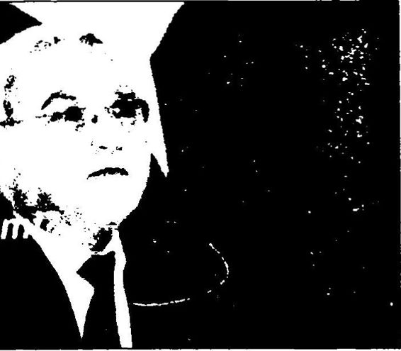 Prof. Eraslan, aynı bildirisinde Türk devrim tarihini altüst etmeye de devam etmiştir: 19 Mayıs 1919’un Kurtuluş Savaşı’nın ikinci aşama sı olduğunu belirten Prof. Eraslan, böylece bir taraftan Saidi Nursî’ye Kurtuluş Savaşı’ndan paye verirken, diğer taraftan da Atatürk’ün Kur tuluş Savaşı’ndaki rolünü azaltmayı amaçlamıştır. Yani bir taşla iki kuş!
Ati/thiş iddia.
19 Mayıs Kurtuluş Mücadelesi *ni Başlangıcı değil ‘Rize Üniversitesi (RÜ) tarafından Rize’nin düşman işgalinden kurtuluşunun 94. yıldönümü dolayısıyla düzenlenen panelde konuşan Atatürk Araştırma Merkezi Başkanı Prof. Cezmi Eraslan, Kurtuluş Miicadelesi’nin Atatürk’ün Samsun’a çıkmasından aylar önce başladığını söyledi.”
Prof. Eraslan'ın yayımlanmış eserleri ise şunlardır: 1. II. Abdiilha tfiid ve İslam Birliği, İstanbul, 1992; 2. Doğrulan ve Yanlışları ile İl. Ab diilhamid, İstanbul, 1996; 3. Yakın Döneni Tiirk Düşüncesinde Halk çılık ve Atatürk, İstanbul, 2003; 4. Osnıanlı Devleti'nde Meşrutiyet ve Parlamento. (Yrd. Doç. Dr. Kenan Olgun ile birlikte), İstanbul, 2006. Yani AKP'nin Atatürk Araştırma Merkezi Başkanlığına layık gördüğü Prof. Dr. Cezmi Eraslan’ın “doğrudan Atatürk’le ilgili yayımlanmış sa dece bir kitabı vardır. Kendisinden sonra aynı kurumun başına getirile cek olan Prof. Mehmet Ali Beyhan’ın Atatürk üzerine tek bir kitabı veya yazısı olmadığını dikkate alacak olursak. Prof. Cezmi Eraslan’ın Atatürk konulu bir kitabı ve çok sayıdaki makalesi, bildirisi, ansiklopedi madde leri ile Prof. Mehmet Ali Beyhan’a bir hayli fark attığı söylenebilir!
Saidi Nursî’yi Kurtuluş Savaşı’na destek olmuş, Atatürk’ü Kur tuluş Savaşı’na sonradan katılmış gibi göstererek yakın tarihi tersyüz eden Prof. Cezmi Eraslan, adeta ödüllendirilircesine önce Genelkurmay direktifiyle kurulan Stratejik Araştırmalar Merkezi (SAREM) üyeliği ne. daha sonra da Başbakanlığa bağlı Atatürk Araştırma Merkezi’nin başına getirilmiştir.
Peki, ama durum bu kadar açıkken, Türkiye’de onlarca Atatürk uzmanı tarihçi/akademisyen varken, AKP neden ısrarla Atatürk Araş tırma Merkezi’nin başına Prof. Dr. Cezmi Eraslan’ı ve Prof. Mehmet Ali Beyhan’ı getirmiştir? İşte bu kritik sorunun cevabı Türkiye’nin bu gün geldiği noktayı görmek bakımından çok önemlidir.
Özetle, Atatürk Araştırma Merkezi’nin bugünkü başkanı Mehmet Ali Beyhan’ın, Atatürk üzerine tek bir kitabı, makalesi, bildirisi, yazısı yoktur. Kurumun dünkü başkanı Cezmi Eraslan ise II. Abdülhamid uzmanı ve Saidi Nursî sempatizanıdır.
Yakında AKP, Atatürk Kültür, Dil ve Tarih Yüksek Kurumu’nun adını “Osmanlı Kültür, Dil ve Tarih Yüksek Kurumu”, Atatürk Araş tırma Merkezi’nin adını da “II. Abdülhamid’i ve Saidi Nursî’yi Araş tırma Merkezi” olarak değiştirirse hiç şaşırmam doğrusu!
AKP hükümeti döneminde kültür kurumlarının başına gelenler doğrusu ayrı bir kitap oluşturacak kadar ilginç ve fazladır. Örneğin bu dönemde sadece TÜBİTAK’ta olup bitenlere göz atılacak olursa, Türkiye’nin nereye sürüklenmek istendiği çok rahat anlaşılacaktır.
Nuh “Atatürk’ün Gizli Kurtuluş Planları”, İstanbul, 2009; Meydan, Cumhuriyet Tarihi Yalanları, 1. Kitap, s. 3797.
J04 “Nur Uzmanına Görev Mecliste", Cumhuriyet, 11 Temmuz 2008, s. 7. Ağzından Allah, kitap, din, iman sözlerini düşürmeyen AKP’li Başbakan’ın ve AKP kökenli Cumhurbaşkanı’nın, Atatürk kurumla nın işlevsizleştirmek için bu kurumiarm başına Atatürk konusunda uzman olmayan kişileri getirmeleri her şeyden önce İslam dininin “işi ehline verin” ilkesine aykırıdır. Allah, Kur’an’da insanlar arasındaki ölçünün “takva” değil, sırasıyla “liyakatehliyet”, “adalet” ve “gay ret” olduğunu belirtmiştir.
Nisa suresi 58. ayette şöyle denilmiştir: “Şu bir gerçek ki, Allah size, emanetleri onlara ehil olanlara vermenizi ve insanlar arasında hükmettiğinizde adaletle hükmetmenizi emrediyor. Allah size bu şekil de ne güzel öğüt veriyor. ”
Ünlü İslam bilgini Seyyit Kutup da, İslam ve Kapitalizm Çatışması adlı eserinde şöyle demiştir: “İslam’a göre bir işte görev almaya en laytk kişi, o işi en iyi bilendir. İşteki ihtisas yerine kişinin fıkıh bilgisi öne alınamaz. Hatta İslam insanlar arasında biricik üstünlük ölçüsü saydığı takvayı bile böyle durumlarda ölçü kabul etmez...”
Bu nedenle, AKP’nin “uzmanlığa”, “ehliyete” göre değil de “tak vaya” veya “yandaşlığa” göre yaptığı atamalar her şeyden önce İslam dinine uygun değildir. Bu bakımdan Atatürk Araştırma Merkezi’nin başına Atatürk’le ilgili tek satır yazısı bile olmayan bir “Yakınçağ Os manlı Tarihi Metinleri ve Yakınçağ Osmanlı Tarihi Kaynakları” hoca sının atanması her şeyden önce İslam dinine; Kur’an’a, Nisa suresinin 58. ayetine aykırıdır.
R. TAYYİP ERDOĞAN: KÖKLER VE İDEOLOJİ Başbakan R. Tayyip Erdoğan’ın erken dönem Cumhuriyet tarihi ne bakışını ve yakın tarih tezlerinin mantığını anlamak için her şeyden önce Erdoğan’ın yaşamöyküsünü bilmek gerekir. Konumuz açısından bu yaşamöyküsünde, Erdoğan’ın özellikle bilim, kültür, sanat, din ko nularındaki yaklaşımlarını ve siyasi duruşunu, özetle dünya görüşünü anlamak önemlidir.
R. Tayyip Erdoğan (26 Şubat 1954, İstanbul): İlkokulu 1965 yılında Kasımpaşa Piyalepaşa İlkokulu’nda, liseyi ise İstanbul İmamHatip Lisesi nde okumuştur. 1973 yılında imamhatipten mezun olup Marmara Üniversitesi İktisadi ve Ticari Bilimler Fakültesi’ne kaydol muştur.
Üniversite yılları sırasında Milli Türk Talebe Birliği’ne girmiştir. 1976 yılında MSP Beyoğlu Gençlik Kolu Başkanlığına ve aynı yıl MSP İstanbul İl Başkanlığına seçilmiştir.
12 Eylül 1980 sonrasında İETT’deki görevinden ayrılmış ve bir süre özel sektörde çalışmıştır. 1982 yılında askerlik hizmetini yaptık tan sonra, 1983 yılında kurulan RP ile yeniden siyasete dönmüştür.
1984 yılında, 30 yaşında RP’nin Beyoğlu İlçe Başkanı, 1985 yılın da da İl Başkanı ve MKYK üyesi seçilmiştir.
1986 ara seçimlerinde milletvekili adayı, 1989 seçimlerinde de Beyoğlu ilçesinden belediye başkan adayı olmuştur. 1991 senesinde tekrar milletvekili adayı olup mazbatasını aldıktan sonra tercihli oy sistemi nedeniyle Yüksek Seçim Kurulu, mazbatasını iptal etmiştir.
27 Mart 1994 seçimlerine kadar RP İstanbul İl Başkanlığı görevini sürdürmüş ve bu tarihte İstanbul Büyükşehir Belediye Başkanı olmuştur.
12 Aralık 1997’de İstanbul Belediye Başkanı sıfatıyla gittiği Siirt’te okuduğu bir şiir nedeniyle yargılanmış ve Diyarbakır DGM tarafın dan “Halkı din ve ırk farkı gözeterek kin ve düşmanlığa açıkça tah rik etmekten” mahkûm olmuştur. 26 Mart 1999’da girdiği Pınarhisar Cezaevi’nden 24 Temmuz 1999’da tahliye edilmiştir. Ancak seçilme hakkını yitirmiştir.
R. Tayyip Erdoğan, daha sonra Fazilet Partisi’nin kapatılmasının ardından bu partinin meclis grubunu oluşturan milletvekillerinin bü yük bir kısmıyla birlikte Adalet ve Kalkınma Partisi’ni (AKP) kurarak genel başkan olmuştur.
Erdoğan o günlerde “biz gömleğimizi değiştirdik” ifadesiyle muhafazakârlardan tepki almıştır.
AKP, 3 Kasım 2002 seçimlerinde tek başına iktidar olmuştur. 3 Kasım seçimlerinde adaylığı kabul edilmeyen Erdoğan, yenilenen Siirt seçimlerinde milletvekili seçilerek Meclis’e girmiş ve Abdullah Gül’ün başbakanlığındaki 58. hükümetin istifasını sunması üzerine 59. hükü meti kurarak Türkiye Cumhuriyeti başbakanı olmuştur.
AKP, 22 Temmuz 2007 seçimlerinde de birinci parti çıkmış ve Erdoğan, 10. Cumhurbaşkanı Ahmet Necdet Sezer tarafından 60. hü kümeti kurmakla görevlendirilmiştir.
Erdoğan’ın bir konferansta tanıştığı Emine Hanım’la evliliğinden Ah met Burak, Necmeddin Bilal, Esra ve Sümeyye adlı 4 çocuğu olmuştur.
R. Tayyip Erdoğan’ın dünya görüşünün oluşumunda etkili olan belli başlı kurumlar, belli başlı görevler şunlardır:
İstanbul İmamHatip Lisesi Milli Türk Talebe Birliği üyeliği MSP Beyoğlu Gençlik Kolu Başkanlığı MSP İstanbul İl Başkanlığı RP Beyoğlu İlçe Başkanlığı RP İl Başkanlığı ve MKYK üyeliği RP İstanbul Büyükşehir Belediye Başkanlığı AKP Genel Başkanlığı R. Tayyip Erdoğan’ın Atatürk’e, yakın tarihe ve erken dönem Cumhuriyet tarihine bakışında imamhatip lisesinin belirgin etkileri vardır. Başbakan olduktan sonra sıkça yaptığı “ezilmiş imamhatipli” vurguları bunun kanıtıdır. R. Tayyip Erdoğan’ın imamhatip konulu konuşmaları dikkatle incelendiğinde onun derin bilinçaltında Kemalist laik Cumhuriyet’in din eğitimi veren imamhatiplere hep “üvey evlat” muamelesi yaptığı inancının yerleşmiş olduğu anlaşılacaktır. Dolayı sıyla imamhatipli R. Tayyip Erdoğan, erken dönem Cumhuriyet tari hini ki bunu genelde İnönü ve Tek Parti ile özdeşleştirmektedirdin karşıtı olarak görmüştür. Hem imamhatipte aldığı dinsel eğitim hem de dinsel eğitim verdiği için Atatürkçü, laik kesimlerin hep dışladığı imamhatip olgusu, R. Tayyip Erdoğan’ın erken dönem Cumhuriyet tarihini onun ifadesiyle Tek Parti (CHP), İnönü dönemini“din kar şıtlığıyla” özdeşleştirmesinde etkilidir.
R. Tayyip Erdoğan’ın yakın tarihe, Atatürk’e bakışını şekil lendiren bir başka kurum da bir dönem içinde yer aldığı Milli Türk Talebe Birliği’dir. Birlik, II. Dünya Savaşı sonrasındaki soğuk savaş döneminin Türkiye şartlarına uygun olarak gizli açık ABD çıkarları na hizmet eder bir görünümde ve Türkİslam Sentezci bir yapıdadır.
Komünizmle mücadele toplantıları düzenleyip kampanyalar yapmıştır. Uğur Mumcu’nun tespitlerine göre Milli Türk Talebe Birliği, İslam cı Rabıta örgütüne bağlı kuruluşların başında gelmektedir. Mumcu, Rabıta ve CIA'in Türkiye’deki bağlantıları hakkında şu bilgileri ver miştir: “İslama ve Amerikancı akımların bugün için birleştikleri iki adres vardır. Bu adreslerden biri ‘Rabıta\ öteki de 'ClA’dir. Rabıta ve CIA bu gibi konularda iç içe, yan yana ve omuz omuzadır. Rabıta, halifeliğini Suudi kralının yapacağı bir ‘İslam Enternasyonalizmi’ pe şindedir. CIA ise Sovyetler Birliği’ııdeki Müslüman azınlığı kışkırtma stratejisi uygulamaktadır...” Milli Türk Talebe Birliği’nin, erken dönem Cumhuriyet tarihine ve Atatürk’e bakışı herkesin malumudur: Atatürk’ün Osmanlı’yı yıktığı, Atatürk devrimlerinin Batıcı olduğu, devrimlerin Türkiye’yi İslami köklerinden kopardığı, Tek Parti döne minde dine ve dindarlara baskılar yapıldığı şeklindeki görüşler birlik üyeleri arasında son derece yaygındır. Bir dönem bu birlik içinde yer alan R. Tayyip Erdoğan da doğal olarak bu görüşlerden etkilenmiştir.
R. Tayyip Erdoğan’ın siyasi hayatı, 2002’ye kadar “Milli Görüş” çizgisindedir. Bu süreç, Necmettin Erbakan’ın MSP’si ile başlamış yine Erbakan’ın RP’si ve FP’si ile devam etmiştir. Erbakan’ın “Milli Görüş” diye adlandırdığı görüş Fransız İhtilali’yle ortaya çıkan “ulusalcılık” anlamında “laik nitelikli” bir “milliliği” değil de din bağına dayalı “ümmetçiliği” anlatmaktadır. Nitekim “millet” sözcüğü “milla” kö künden türemiş olup, “ Kutsallık atfedilmiş bir kitaba inanarak bir ara ya gelmiş insanların oluşturduğu topluluk” anlamına gelmektedir.“Milla” kökünden gelen “millet” sözcüğü Osmanlı’da “dini cemaat” anlamına gelmekte ve Osmanlı azınlıklarını “etnik kökenleri” bakım dan değil, “dinleri” bakımından ayırmaktadır. Osmanlı bunun adı na “Millet Sistemi” demiştir. Bu nedenle “Milli Görüş’ün dini görüşe denk düştüğünü söyleyebiliriz.” Belli ki Erbakan başta olmak üze re “Milli Görüşçüler” burada geçen “milli” sözcüğünü Osmanh’nm “Millet Sistemi”ndeki gibi “dini anlamıyla” kullanmışlardır.
Erdoğan’ın siyaset yapmak için kendisine “Milli Görüşü” seçmesi aslına bakılacak olursa onun hem imamhatip geçmişine, hem Milli Türk Talebe Birliği günlerine son derece uygun bir tercihtir. Erdoğan’ın içinde yer aldığı Erbakan’ın MSP, RP, FP çizgisi “siyasal İslamcı” bir çizgidir. Nitekim bu partilerin üçü de “irticai faaliyetler” nedeniyle ka patılmıştır. R. Tayyip Erdoğan’ın kurup başına geçtiği AKP de bütün “değişim ve yenilikçilik söylemlerine karşın” özünde bu çizginin deva mıdır." Bu çizgiden gelenlerin erken dönem Cumhuriyet tarihine ve Atatürk’e bakışları da herkesçe bilinmektedir. Onlara göre de Atatürk, Osmanlı’yı yıkmış, devrimleriyle Batı’yı taklit etmiş, İslam dinini top lumdan söküp atmış, dindarlara baskı yapmıştır! Ayrıca laiklik “din sizlik”, çağdaşlık ise “Batı taklitçiliğidir”! Vahdettin kahramandır! Şeyh Said, Seyit Rıza ve İskilipli Atıf boşu boşuna idam edilmiştir!
R. Tayyip Erdoğan’ın siyaset hayatı boyunca yaptığı açıklamalar ve uygulamalar (ki bunları başbakan olmadan öncekiler ve başbakan olduktan sonrakiler diye iki döneme ayırmak gerekir) onun dünya görüşünü olanca açıklığıyla gözler önüne sermektedir. Erdoğan’ın da 1950 sonrasının ABD etkisindeki dini referanslı sağcı siyasilerden biri olduğuna şüphe yoktur. Nitekim sürekli kendisini Menderes’e, partisi AKP’yi de DP’ye benzetmektedir. Yakın tarihe ve özellikle de Atatürk ve İnönü’ye bakışı bu çerçevede şekillenmiştir. Kendisini “Cumhuri yetçi” olmaktan çok “Osmanlıcı” hissettiğine de şüphe yoktur. Nite kim “Ecdadımız” dediği Osmanlı’nın eleştirilmesine hiç tahammülü yokken, erken dönem Cumhuriyet tarihini ve bu dönemin en önemli askeri ve siyasi aktörlerinden biri olan İsmet İnönü’yü olabildiğince eleştirmektedir.
Temel referansının “din” olduğunu her fırsatta dile getiren Erdoğan’ın, “akıl” ve “bilimi” tek gerçek yol gösterici olarak kabul eden Atatürk’le ve laikliği temel alan erken Cumhuriyet dönemiyle ara sında bir doku uyuşmazlığı olduğu da çok açıktır.
Erdoğan’a Göre Laiklik Cumhuriyet’in Atatürk tarafından belirlenmiş kuruluş felsefesi en basit tanımıyla “akıl” ve “bilim” eşliğinde çağdaşlaşmaktır. Çağ daşlaşmak için “din” ile “siyasetin” birbirinden ayrılması ve dünyevi . hayatın dini kanun ve kurallar yerine dünyevi kanun ve kurallarla dü zenlenmesi, yani “laiklik” çok önemlidir.
Cumhuriyet’in kurucusu Atatürk, “Ölülerden yardım istemek, uygar bir toplum için ayıptır. Var olan tarikatların amacı kendileri ne bağlı olan kimseleri dünyevî ve manevî yaşamda mutluluğa eriştir mekten başka ne olabilir? Bugün bilimin, tekniğin, bütün kapsamıyla uygarlığın alevi karşısında filân veya falan şeyhin yol göstermesiyle maddî ve manevî mutluluk arayacak kadar ilkel insanların Türkiye topluluğunda varlığım asla kabul etmiyorum. Efendiler ve ey millet, iyi biliniz ki, Türkiye Cumhuriyeti şeyhler, dervişler, müritler, mensuplar memleketi olamaz. En doğru ve en gerçek tarikat, uygarlık tarikatı dırdemiştir. “En gerçek tarikat uygarlık tarikatıdır,” diyen Atatürk, bilindiği gibi tekke ve tarikatları kapatmış, şeyhe, şıha biat kültürüne son vererek kula kulluk etme dönemini sona erdirmiştir. Şu sözler de Atatürk’e aittir: “Tekkeler kesinlikle kapanmalıdır. Türkiye Cumhuri yeti, her kolda doğru yolu gösterecek güce sahiptir. Hiçbirimiz tekke lerin uyarmasına muhtaç değiliz. Biz uygarlıktan, bilim ve teknikten kuvvet alıyoruz ve ona göre yürüyoruz; başka bir şey tanımayız. Doğru yoldan sapmışların amacı, halkı kendinden geçmiş ve abdal yapmaktır. Halbuki halkımız, abdal ve kendinden geçmiş olmamaya karar vermiş tir. Bunlar basit bir iş görünür; fakat önemi vardır. Biz dünya ailesi içinde uygarız. Her görüş noktasından uygarlığın gereklerini uygula yacağız.”
Tekke ve tarikat kültürü dinsel kaynaklı bir “biat” kültürüne yol açar. İşte laiklik her şeyden önce bu “biat” kültürüne karşıdır. Erdoğan’ın özgeçmişi iyi incelendiğinde onun şeyhe, şıha, tekke ve tarikatlara bakışıyla, “En gerçek tarikat uygarlık tarikatıdırdiyen Atatürk’ün şeyhe, şıha, tekke ve tarikatlara bakışının çok farklı olduğu görülecektir.
Atatürk, aklını kullanıp özgür iradesiyle hareket eden bir birey olarak hayatının hiçbir döneminde kula kulluk etmemiş, sultanların, padişahların önünde eğilmeyi bile insanlık onuruna yedirememiştir. İşte bu nedenle kendilerini “Allah’ın yeryüzündeki gölgesi” diye ta nıtan sultanlık/padişahlık, halifelik putunu yıkıp “ulusal egemenliğe” dayanan cumhuriyeti ilan ederek egemenliği gökten yere indirmiştir. Bu nedenle Atatürk Cumhuriyeti önce laiktir.
Türkiye Cumhuriyeti’nin temeline laikliği yerleştiren Atatürk’ü hayatının hiçbir döneminde hiç kimsenin önünde, yanında diz çökmüş
olarak, göremezsiniz, ancak siyasi hayatın ilk zamanlarında laikliğe sa vaş açan R. Tayyip Erdoğan’ı Hikmetyar’ın dizlerinin dibinde görebi lirsiniz.
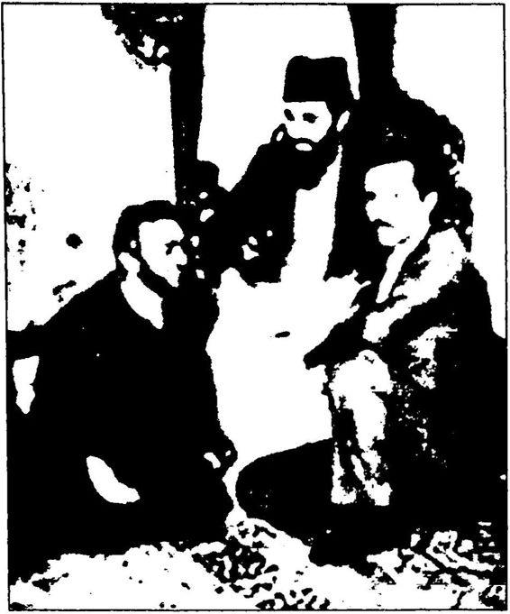 R. Tayyip Erdoğan ve Hikmetyar (Erdoğan, bu fotoğrafın 1985’te bir aile ortamında çekildiğini belirtmiştir).
Hikmetyar’ın dizlerinin dibindeki bu fotoğrafı nedeniyle sıkça eleştirilen R. Tayyip Erdoğan, o günlerde basma şu açıklamayı yapmış tır: Gülbeddin Hikmetyar, tahminim 1985 yılları olan bu ziyaretinde ABD’nin desteklediği ve Afganistan’da ulusal bir kahraman olan, Afganistan’ın bağımsızlığı mücadelesinde bir insandı ve Türkiye’ye o zaman Afganistan’ın bir lideri olarak gelmişti. Ben de o zaman bir si yasi partinin İstanbul il başkanıydım. Bir aile ortamında yapılmış olan bu resim, düşünün bir aile içinde çekilmiş bir resimdir. (...) Ve kaldı ki o zaman ülkemize gelen Hikmetyar ülkemizin devlet katında da ilgi ve alaka gören insan durumundaydı. Hatta daha sonra Afganistan ’ın ba şına geçmiş bir insan durumundaydı.” Başbakan Erdoğan, daha son ra bu konuda Meclis’te de şöyle bir açıklama yapmıştır: “O fotoğraf 1986 yılında çekilmiştir. Hikmetyar Afganistan’ın Başbakanı sıfatıyla resmi davetle Türkiye’ye gelmiştir. Ben de o zaman siyasi bir partinin
il bjşkjnıydtm..." İki açıklama arasındaki ufak çelişkiler dikkat çeki cidir. Her neyse!
Öncelikle dönemin basını taranacak olursa Hikmetyar’m Türki ye'ye resmi davetle değil, Refah Partisi’nin davetiyle geldiği ve o yıllar da başbakan değil, Afgan mücahit lideri olduğu görülecektir. Hikmet var 1990'da başbakan olmuştur.”
Peki, kimdir bu Hikmetyar?
Hikmetyar, ABD’nin soğuk savaş stratejisinin Afganistan ayağı nı oluşturan “Yeşil Kuşak” piyonlarından biridir. 1980’lerde CIA’nin kurmuş olduğu Asya Vakfı, ilk amaç olarak Kabil Üniversitesi’ni seç mişti. İşte o günlerde Abdul Resul Sayyaf, Burhaneddin Rabbani, Ah met Şah Mesut ve Gülbeddin Hikmetyar’ın başını çektiği “Müslüman Gençlik Örgütü” CIA ile ilişkileri sıkılaştırılmıştır. Hikmetyar, örgü tün askeri kanadının lideridir. Kabil’deki CIA ile ilişkiye girdikten sonra Sovyet Rusya’ya karşı ABD için çalışmaya başlamıştır. Pakistan gizli servisi (ISI) kanalıyla CIA’den milyonlarca dolar almıştır. Peter Bergen’e göre bu miktar 600 milyon dolardan az değildir.
Robert Dreyfuss’un The Devil’s Game adlı kitabına göre Hik metyar, üniversitede yüzü açık kızların “yüzlerine kezzap atmakla” önlenmiştir. Acımasızlığıyla tanınan Hikmetyar, yakaladığı esirlerin derilerini diri diri yüzmüştür. Sovyet işgaline karşı savaşan Müs lüman Gençlik Örgütü’nün askeri kanadının lideri olan Hikmetyar, gerek Sovyetler’e karşı savaşta, gerek içsavaşta acımasızca sivil katli ama girişmekle suçlanmıştır. Hikmetyar sadece acımazsız bir katil değil, aynı zamanda hırsızdır. Sınır Tanımaz Doktorlar Grubu’nun Kuzey Afganistan’a 96 katır yüklü yardım malzemesi, 1987 yılın da Hikmetyar’ın adamları tarafından kaçırılmış, yardım paraları na el konulmuştur. 1986 yılında, yardım ekibinden Thierry Niquet, Hikmetyar’ın bir komutanı tarafından öldürülmüştür. İnsan Hakları İzleme Komitesi, Ağustos 1992’de Hikmetyar kuvvetlerinin roket sal dırıları nedeniyle çoğu sivillerden oluşan en az 2000 kişinin öldüğünü ve yarım milyon insanın da Kabil’i terk ettiğini bildirmiştir. 9 Ocak 1995 tarihinde Hikmetyar’ın kuvvetlerinin başkent Kabil’i bombala masıyla da 20’den fazla insan ölmüştür. Öte yandan Hikmetyar, Afganistan’daki uyuşturucu trafiğinin de kilit adamlarından biridir ve bu konuda da CIA’den destek görmüştür. Hikmetyar’ın acımasızlığı yanında bağnazlığı da dillere destandır: Görevde olduğu 1996 yılında Kabil’deki radyo ve televizyonlarda müzik yayınlarının yasaklanması nı ve bütün sinemaların kapatılmasını emretmiştir.
İşte R. Tayyip Erdoğan’ı bu Hikmetyar’m dizlerinin dibinde gös teren o malum fotoğrafın yayımlanmasından sonra Erdoğan’a yönelik eleştiriler başlayınca, eski İslamcı yeni liberal gazeteci Ahmet Hakan, Başbakan’ı savunmak için Hürriyet gazetesindeki köşesinde şunları yazmıştır:
“Gülbeddin Hikmetyar kimdir? Sovyetler Birliği Afganistan'ı iş gal edince, direnişe geçen çok sayıda Afgan gruplardan birinin lideri... Kıyafetine bakılıp sakın ha molla sanılmasın: Hikmetyar, Batılı eği timden geçmiş bir elektrik mühendisidir. Yani öyle adam yetiştirecek bir dini kültür ve birikime sahip değildir. Gelelim Tayyip Erdoğan’ın Hikmetyar’a gösterdiği hürmete... O dönem Türkiye devleti, Afgan di renişine tam destek verirdi. Hatta o kadar destek verirdi ki, devletin resmi televizyonunda Afgan direnişine ‘cihat’, direnişçilere de ‘mücahit’ denirdi. O dönemde bir muhafazakâr siyasetçinin, Hikmetyar’in dizi nin dibinde fotoğraf çektirmekten kaçınması söz konusu bile değildi. Çünkü bu abartılı saygı, ‘Ey Hikmetyar! Sen beni yetiştiren adamsın... Benim yerim senin dizinin dibidir’ anlamına gelmezdi. Anlamı şuydu o saygının: ‘Ey Hikmetyar! Sen komünist işgale karşı vatanını savunu yorsun. Bunun için savaş veriyorsun. Saygım bunadır.” Çevir kazı yanmasın misali! Birincisi; Ahmet Hakan, ya Hikmetyar’ı gerçekten tanımıyor; örneğin onun CIA bağlantılarını vs. gerçekten bilmiyor, ya da biliyor da saklıyor. Baksanıza, acımasız bir CIA görevlisini, “Batılı eğitimden geçmiş bir elektrik mühendisi!” diye anlatıyor bir cümlede. Ayrıca, “Kıyafetine bakıp molla sanmayın... Dini kültür ve birikime sahip değildir!" diye de ekliyor. Açık kızların yüzlerine kezzap atması, esirlerin derilerini yüzmesi, radyo ve televizyonlarda müzik yayınlarını yasaklatıp sinemaları kapatması gibi eylemlerinin arkasındaki bağnaz din anlayışından hiç söz etmiyor. İkincisi Ahmet Hakan’ı okuyunca o dönemde Türkiye’deki bütün muhafazakâr siyasetçilerin Hikmetyar’ın dizinin dibinde sıraya girdiğini, Hikmetyar’m dizinin dibine çökmenin muhafazakârlığın ön şartı olduğunu sanıyor insan!
Yeniden konumuza dönecek olursak, sadece bu “diz çökme mese lesi” bile, R. Tayyip Erdoğan ile M. Kemal Atatürk’ün özünde çok baş ka yolun yolcuları olduğunu gözler önüne sermesi bakımından önemli dir. Biri her türlü biat kültürüne karşı asla diz çökmemiş, diğeri o biat kültürüne bağlı ve diz çökmüş... Türkiye gibi Müslüman bir ülkede laiklik biraz da Allah’tan başka hiç kimsenin önünde diz çökmemektir. Laiklik, kim olursa olsun kula kul olmamak, sadece Allah’a kul olmak tır. Atatürk laik karakterli cumhuriyetle bunu sağlamıştır. Ümmetten millet, kuldan birey yaratan cumhuriyetin sırrı laikliktir.
R. Tayyip Erdoğan’ın laiklik konusundaki gerçek düşüncelerini anlamak için AKP kapatma davasına göz atmak gerekir. R. Tayyip Erdoğan’ın genel başkanlığındaki AKP, bilindiği gibi “Laiklik karşıtı eylemlerin odağı olmak” suçlamasıyla Anayasa Mahkemesi’nde yar gılanmıştır. Yargıtay Cumhuriyet Başsavcısı Abdurrahman Yalçınka ya’nın, “Laikliğe aykırı fiillerin odağı haline geldiği” gerekçesiyle, AKP’nin kapatılması ve ilgili Başbakan R. Tayyip Erdoğan ile Cum hurbaşkanı Abdullah Gül dahil 71 kişinin 5 yıl süre ile siyasetten uzak laştırılması istemiyle hazırladığı iddianame 14 Mart 2008’de Anayasa Mahkemesi’ne sunulmuş ve Anayasa Mahkemesi iddianameyi 31 Mart 2008’de kabul etmiştir. 16 Haziran günü AKP esas hakkındaki savun masını vermiştir. 30 Temmuz 2008 tarihinde kamuoyuna yapılan açık lamada, partinin temelli kapatılmaması, fakat hazine yardımının belirli bir oranda kesilmesi kararlaştırılmıştır. 6 üye AKP’nin kapatılması, 5 üye kapatılmaması yönünde oy kullanmışken, hazine yardımının kesilmesi hakkındaki oylamada 11 üyenin 10’u yardımın kesilmesi yönünde oy kullanmıştır. Sonuç olarak evet, AKP kapatılmamış ama Laikliğe aykırı fiillerin odağı haline geldiği” iddiası mahkeme kara rıyla doğrulanmıştır.
AKP’nin temelli kapatılmasına ilişkin savcılık iddianamesi/D 2a’da “AKP Genel Başkam ve Başbakan R. Tayyip Erdoğan’ın laiklik ilkesine aykırı eylem ve demeçleri” yer almıştır.
İşte savcılık iddianamesine göre Başbakan R. Tayyip Erdoğan’ın laiklik karşıtı eylem ve demeçlerinden bazıları:
Erdoğan, 29 Mayıs 2004 tarihinde Oxford Üniversitesi’nde yap tığı konuşma sonrası basın mensuplarının sorularına verdiği bir yanıt ta,"... Laiklik çok farklı bir konudur. Laik olduğumuz Anayasa’da belirtilmiştir. İnsanlar dini gereklerini böylece yerine getirebilir. İslam ile laikliği yan yana tanım olarak getirmek yanlış olur. Kişiler laik ol maz, ” demiştir.
RP İstanbul İl Başkanı olarak Ümraniye’de 1994 tarihinde yaptığı konuşma kasetinin Kanal D’de yayımlanması üzerine 22 Ağustos 2001 tarihli Akşam gazetesinde yayımlanan açıklamasında, söz konusu ko nuşmayı günün şartları içinde, üyesi bulunduğu partinin söylemleri ve disiplini gereği gerçekleştirdiğini ifade ederek, “Bazıları laikliği din gibi algılıyor. Laiklik din olursa aynı anda Müslüman olunamaz. İnsan iki dine mensup olamaz. Asıl itibariyle laiklik bir sistemdir ve fertlerin değil, devletin laikliği söz konusudur. Dine mensupluksa ferdi bir ta sarruftur. O manada söyledim, ” demiştir.
R. Tayyip Erdoğan, basma yansıdığı kadarıyla, başbakanlıktan önce laiklik, din ve devlet ilişkileri hakkında şunları söylemiştir:
“Türkiye’de şu anda binlerinin şeriatı var. Ama bu şeriat tükendi. Şu anda kahrolsun şeriat diyenler, kendi kendilerine kahroluyorlar. ” “Ben İstanbul’un imamıyım.”
“Elhamdülillah şeriatçıyım. ”“Yılbaşına karşıyım.”
“Ata’ya saygı duruşunda sap gibi ayakta durmaya gerek yok. ”
“Yirmi yıl önce, yirmi beş yıl önce deselerdi, pop yıldızlarının çıl gınlıklarını sergiledikleri Gülhane Parkı’nda bir gün gelecek, Allah'a âşık olanlar, ona sadık olanlar, muhlisler bu çınarların altını doldura cak ve buradan dünyaya nasıl ortaçağın karanlıklarından bir yeni çağ açmışlarsa, Allah’ın izniyle bir yeni çağ açılmışsa, Allah'ın izniyle yeni bir çağ, zulüm çağı kapatılacak, aydınlık bir çağ açılacaktır. ” “İmamlar da nikâh kıysın. ”
“Minareler süngü, kubbeler miğfer, camiler kışlamız, müminler asker."
"Ben tekkeye değil dergâha gittim...”
“Tutturmuşlar laiklik elden gidiyor diye. Yahu millet istedikten sonra laiklik tabii elden gidecek. Hem laik hem Müslüman olunmaz. Ya Müslüman olacaksın ya laik. İkisi bir arada olunca ters mıknatıs lanma yapar. Mümkün değil, ikisi bir arada olamaz. ”
R. Tayyip Erdoğan, RP İstanbul İl Başkanı olduğu 1994 yılında Refah Partisi'nin Ümraniye İlçe Örgütü’nün yeni hizmet binasının açı lış töreninde: "... 1 Kasım bir dönüm noktasının adıdır. Zafer değil. Zafer böyle yakalanmaz. Şu anda daha henüz bir yoldayız. İnanıyo rum ki yeşil ışıklar gözükmüştür. Fakat biliniz ki oraya kadar daha çok işaretler var. Ama inanıyorum ki zafer Allah’ın lütfuyla er geç bizim olacaktır. Çünkü vahiy ilahi böyledir, bunun işaretleri gözüküyor. Biz Cezayir gibi olmayız. Biz hazmettire hazmettire geliyoruz. Allah’ın iz niyle,” demiştir.
Şu sözler de başbakan olmadan önceki Erdoğan’a aittir:
“Bir buçuk milyarlık İslam âlemi Müslüman Türk milletinin ayağa kalkmasını bekliyor. Kalkacağız. Şu anda içte onun ışıkları göründü. Allah’ın izniyle. Bu kıyam başlayacak. Koşmaya mecbursun. Çalışma ya mecbursun. Eğer çileyi çekmezsen gelmez. Eğer çocuklarınız, eğer mallarınız, eğer zevceleriniz sizi bu davadan, gayretten alıkoyuyorsa bu zaferi beklemeyin değerli kardeşlerim. Bunu aşmaya mecbursun. Bunu aştığımız gün zaferin ışıkları bize yakın olacaktır. Ve o zaman hak nurunu tamamlayacaktır.”
“Tutturmuşlar laiklik elden gidiyor, laiklik elden gidiyor. Yahu, bu millet istedikten sonra tabii elden gidecek! Sen bunun önüne geçe mezsin ki. Yani zorla bu milletin elinde tutmaya gücün yetmez. Millete rağmen bu yürümez zaten. Sonra nedir bu laiklik Allah aşkına. Bir tarif edin diyorsun, tarif etmiyor. Bugün her kavramın lügatte bir tarifi var dır. Ama çıkıyor içişleri bakanı devlet dine karışır. Eee! Gerisini niye söylemiyorsun. Din de devlete karışır niye demiyor?”
1998 yılında, “Ben diyorum ki insanlar laik olmaz. Nitekim Ana yasamız da TC vatandaşları laiktir demiyor, TC Devleti laiktir diyor. Bizim yaklaşımımız bu. Laiklik din midir değil midir? Değil. O zaman Müslümanlığın karşısına laikliği oturtamazsınız. Ben bu anlamda onu
diyorum. Bir insan Müslümansa bu dinine göre Müslüman. Laiklik farklı bir olay...” demiştir.
Şu sözler de başbakan olmadan önceki Erdoğan’ındır: “Belediyelerimiz hastaneler, doğumevleri yapıyor. Doğumevle rinde sadece kadın doktorlar çalışacak. Adil düzenin sağlık anlayışı da görülecek. Psikolojide, çocuk bakımında, öğretmenlikte yetişmiş başörtülü kızlarımız var. Şimdi işe alınmayan bu başörtülü kızlarımız anaokullarında yavrularımızı yetiştirecek...”
“Ben Müslümamm derken neyi kastediyorsam, şeriatçıyım derken de aynı şeyi kastediyorum. ”
“Referansım İslam’dır. Her şeyden önce ben bir Müslümamm, at tığım her adımda inancıma uygun olanı arıyorum. İslam, insanları bana sevmeyi emrettiği için seviyorum, bu bağlamda referansım İslam’dır... ”Şu sözler de Erdoğan’ındır:
“Türkiye’de yaşayanların yüzde 99’u Elhamdülillah Müslüman olduğunu söylüyor. O zaman yüzde 99’un, ‘Elhamdülillah Şeriatçı yım,’ demesi de lazım. Ben elhamdülillah şeriatçıyım. Şeriat İslam, Allah’ın kuralları demektir. ”
AKP iktidara geldikten sonra sürekli “gelişerek değiştiğini” savu nan ve Milli Görüş için “Biz o gömleği çıkardık” biçiminde beyan da bulunan Başbakan R. Tayyip Erdoğan, 21 Haziran 2006 tarihinde TRT l’de yayımlanan “Enine Boyuna” programında söylem değişti rerek; “Siyasete girerken farklı, siyasetten sonra farklı bir yaşam tarzı mı uygulayacağım, halkımı mı aldatacağım? Dün neysem, bugün de oyum, değişemem, değişmedimdemiştir.
Öncelikle bu eylem ve demeçlerin sahibi kim olursa olsun o kişi nin Atatürk’e ve onun kurduğu çağdaş, laik Türkiye Cumhuriyeti’ne pek de sıcak baktığı söylenemez. Hatta o kişinin kendisini, Atatürk’ün ve onun kurduğu düzenin karşısında bir yerlerde konumlandırdığı çok rahat bir şekilde söylenebilir.
Genel olarak baktığımızda R. Tayyip Erdoğan’ın özellikle belli bir dönem siyasal İslamcı geleneğin genel yanılgısına düştüğü görülmekte dir. Nedir o yanılgı? Laikliği ya “dinsizlik” veya “dine alternatif yeni bir din” gibi görme yanılgısıdır. Her şeyden önce erken Cumhuriyet döneminde tanımlandığı ve bazı aksaklıklarla da olsauygulandı ğı biçimiyle laiklik ne “dinsizliktir” ne de “yeni bir dindir”. Atatürk özellikle laikliğin “dinsizlik” olmadığını, “Laik hükümet kavramından dinsizlik manası çıkarmaya çalışan fesatçılara fırsat vermeyiniz, ” söz leriyle ifade etmiştir. Atatürk, 1930 yılında Vatandaş İçin Medeni Bil giler kitabında kendi elyazısıvla laikliği şöyle tanımlamıştır:
“Türkiye Cumhuriyetinde herkes Allah’a istediği gibi ibadet eder. Hiç kimseye dini fikirlerinden dolayı bir şey yapılmaz. Türk Cumhuriyeti’nin resmi dini yoktur. Türkiye’de, bir kimsenin fikirlerini zorla başkalarına kabul ettirmeye kalkışacak kimse yoktur ve buna müsaade edilmez. Artık samimi mutekitler, derin iman sahipleri, hür riyetin icaplarını öğren...”
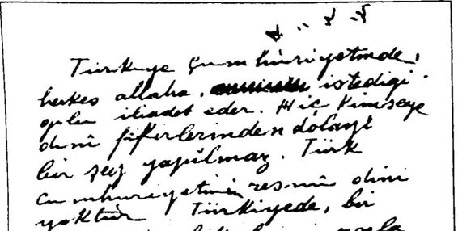 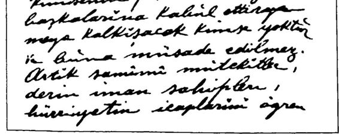 Atatürk’ün elyazısıyla laiklik Yani Atatürk’e göre laiklik bir anlamda din ve vicdan özgürlüğü nün de garantisidir.
Diyanet İşleri’ni kuran, Kur’anı Kerim’i ve hadisleri Türkçeye tercüme ettiren, camileri açık tutan, dini bayramları kutlatan, ezan ları okutan, İslam dinine tamamen aykırı saltanat/padişahlık putunu yıkan, Müslümanları şeyhe, şıha, hacıya, hoca kul olmaktan kurtarıp ruhani anlamda Allah’a kul, dünyevi anlamda özgür birey haline geti ren, Müslüman Türk insanına aklını kullanmayı, bilimle uğraşmayı ve çağdaş olmayı öğreten bir sistemin en önemli ayağı olan laiklik, nasıl olur da “dinsizlik” veya “alternatif bir din” iddiasında bulunur.'
Bir de Menderes’ten Erdoğan’a kadar bütün Karşı Devrimci lider ler laikliğin en basit ve en gerçek tanımı olan “din ve devlet işlerinin ayrılması” tanımı yerine ısrarla “din ve vicdan özgürlüğü” tanımını ön plana çıkarmışlardır. Fakat “din ve vicdan özgürlüğü” zaten anayasa da tanımlanmış temel hak ve özgürlüklerden biridir. Evet, Atatürk’ün de ifade ettiği gibi laiklik aynı zamanda din ve vicdan özgürlüğünün de güvencesidir, ancak Siyasal İslamcıların laiklikten söz ederken sürekli din ve vicdan özgürlüğüne vurgu yapmalarının amacı “bu özgürlüğü” istismar ederek dini, devlet işleri de dahil, hayatın her alanına yaymak tır. Bu, laikliği kullanarak laikliği yok etmek anlamına gelir.
R. Tayyip Erdoğan, laiklik tezini “Devlet laik olur, kişi laik ol maz!” önermesiyle ifade etmektedir. Oysaki laiklik bir kültürdür, bir dünya görüşüdür, dolayısıyla kişileri de ilgilendirir. Şöyle ki: Örneğin din ve devlet işlerinin ayrı olmasını, devletin din kurallarıyla değil de hukuk kurallarıyla yönetilmesini isteyen bir kişi laiktir. İnanç özgürlü ğünü (inanmama hakkı da buna dahildir) savunan bir kişi de laiktir. Aklın özgürleşmesini savunan kişi de laiktir. Bunların tersini savunan bir kişi ise laik değildir. Aslında “laik olmak”, laiklikten yana olmak demektir. Dolayısıyla bir kişi laikliğin ne olduğunu bilerek “Ben lai kim” diyorsa o kişi aslında, “Ben laiklikten yanayım,” demek istiyor dur. “Ben din ve devlet işlerinin birbirinden ayrı olmasından, akla ve bilime önem verilmesinden, inanç özgürlüğünden (inanmamak da bir inanç olduğu için bu kapsama girer) yanayım,” demek istiyordur; yok sa o kişi ille de, “Ben Müslüman değilim! Ben dinsizim/” demek istiyor değildir. Ayrıca laik bir ülkede bir insanın, “Ben Müslüman değilim veya dinsizim!'" deme hakkı da vardır. Ortalama eğitimden geçmiş her kes laikliğin “dinsizlik” veya “yeni bir din” olmadığını bilir, bilmeyene de bu gerçek çok kolayca anlatılabilir. Ancak ülkemizin temel sorunu, bu basit gerçeğin bu topluma doğru bir şekilde anlatılamaması ve laik lik adı altında laiklikle hiç ilgisi olmayan işlerin yapılmasıdır. Kanımca R. Tayyip Erdoğan laiklik konusundaki değerlendirmelerinde biraz da bu kafa karışıklığından yararlanmak istemiştir. Ayrıca Atatürk laikliği sanıldığı ve söylendiği gibi sadece Fransa kökenli de değildir; Atatürk, laikliği daha çok Türkİslam tarihinden esinlenerek hayata geçirmiş tir. Yani laikliğin milli kökleri vardır.
1990’larda başbakan olmadan önce “Referansım İslam... Elham dülillah şeriatçıyım... Laiklik elden gidecek...” vb. açıklamalarda bu lunan, ancak 2000’lerde başbakan olduktan sonra “değiştim” diyerek “yetmez ama evet”çileri ikna eden R. Tayyip Erdoğan, 28 Mayıs 2013 tarihinde partisinin grup toplantısında yaptığı konuşmada ilk defa bir yasağı “dini gerekçe” göstererek savunmuştur. Erdoğan, kamuoyunda çok tartışılan içki yasağı konusunda, “İki tane ayyaşın yaptığı yasa sizin için muteber oluyor da; inancın emrettiği gerçek niçin reddedil mesi gereken bir olay haline geliyor? Hangi din olursa olsun bir din doğruyu emreder...” demiştir. Erdoğan’ın bir yasayı “dini gerekçe” göstererek savunması Türkiye Cumhuriyeti Anayasası’nda tanımlan dığı şekliyle laikliğe aykırıdır. Bilindiği gibi en basit tanımıyla laiklik, “din ve devlet işlerinin ayrılmasıdır”. Ancak Erdoğan, devlet işi olan bir yasayı, dini gerekçeye dayandırmıştır. Erdoğan yasağın gerekçesi olarak “din emrediyor!” diyerek, çağdaş hukuk yerine şeriat hukuku na gönderme yapmıştır.
Ayrıca Erdoğan konuşmasında, “İki tane ayyaşım yaptığı yasa!” ifadesini kullanmıştır. Burada geçen o “iki tane ayyaş” kimdir? CHP Genel Başkan Yardımcısı Umut Oran’ın Erdoğan’a sorduğu şekliyle: “Yasa kabul eden ‘iki tane ayyaş’ kimlerdir? TBMM’nin hangi döne minde 2 kişinin onayıyla yasa kabul edilmektedir? Bahsi geçen iki tane ayyaşın yaptığı yasa hangisidir? Bahsi geçen ‘yasayı yapan’ şahısların ayyaş olduğu tarafınızca nasıl tespit edilmiştir? Bu konuda hangi ra porlar Başbakanlıkla bulunmakta dır?”
Şu kadarını söylemeliyim ki, Meni Müskirat (İçki Yasağı) Kanunu’nu 14 Eylül 1920’de I. TBMM kabul etmiştir. Kanun, 9 Nisan 1924’te hafifletilmiş, 22 Mart 1926’da da başka bir kanunla tamamen kaldırılmıştır. O sırada Atatürk cumhurbaşkanı, İnönü ise başbakan dır. İkinci yasa da 1942 tarihlidir ve o dönemde de İnönü cumhurbaş kanıdır. Ayrıca TBMM tarihinde hiçbir dönemde ayık ya da ayyaş iki kişiyle hiçbir zaman herhangi bir yasa kabul edilmemiştir. Yasalar TBMM’de oylanırken, milletvekilleri alkolmetreye üflemek zorunda bırakılmadıklarına göre de kimin ayyaş kimin ayık olduğunu anlamak da bir hayli zordur!
Erdoğan, “iki ayyaş” sözünü kullandığı grup konuşmasından yak laşık bir ay önce, 26 Nisan 2013 tarihinde yaptığı grup konuşmasında da şöyle demiştir:
“Bildiğiniz gibi 23 Nisanda TBMM’nin kuruluşunun 93’üncü yıldönümünü kutladık. O günlere ait bir detayı paylaşmak istiyorum. Çıkan kanunlar arasında ilginç bir kanun var. Bu ‘Meni Müskirat adı altında alkollü içkileri yasaklayan bir yasa çıkarıldı. Bu ilk Meclisimi zin çıkardığı ilk 5 kanundan biriydi. Bunu özellikle ülkemdeki değişik çevrelere atfen de söylüyorum. İçki üretimi ve tüketimini yasaklayan Meni Müskirat Kanunu Mecliste verildi, okundu ve ehemmiyetli bir teklif olarak görüldü. O buhranlı günlerde bu teklif önemsendi. Ali Şükrü Bey’in sunduğu o teklif 14 Eylül 1920 senesinde kabul edildi. Tek parti iktidarının tepeden inmeci baskılarıyla bu kanun kaldırıl dı. Çağdaşlaşacağız denerek taklitçi bir anlayışla alkol teşvik edilmeye başlandı. Tek Parti iktidarı döneminde alkol teşviki o kadar abartılı bir politikaya döndü, afişler asıldı, alkolün faydaları anlatıldı. Alkollü bir içki olan bira bazı kitaplarda maalesef milli bir halk içkisi olarak takdim edildi. Halbuki bizim milli içkimiz ayrandır. ”
Erdoğan’ın yukarıdaki sözleri arasında geçen, “Tek Parti ikti darının tepeden inmeci baskılarıyla bu kanun (Meni Müskirat) kal dırıldı cümlesi çok şeyi açıklamaktadır. Görüldüğü gibi başbakan, Meni Müskirat Kanunu’nu kaldıran yasayı Tek Parti hükümetinin, yani CHP’nin çıkardığını belirtmiştir. Yani, bu gerçeğin farkındadır. Bir ay kadar sonra ise bu yasadan “iki tane ayyaşın yaptığı yasa! diye söz etmiştir. Görülen o ki bu iki tane ayyaşın CHP’li olduğu kesindir. 1926'da CHP denilince ilk önce akla gelen iki isimden biri Atatürk diğeri ise İnönü’dür. Erdoğan ayrıca, “Alkollü bir içki olan bira bazı kitaplarda maalesef milli bir halk içkisi olarak takdim edildi...” diye rek bu durumu eleştirmiştir. Biraya önem veren, onu milli içki yap maya çalışan ise bizzat Atatürk’tür. Nitekim Atatürk, Ankara Orman Çiftliği’nde bir de bira fabrikası kurdurmuştur. Sonuçta Erdoğan’ın “iki ayyaş” derken İnönü ve Atatürk’ü kastetmiş olması güçlü bir ola sılıktır.
R. Tayyip Erdoğan’ın 1994’te söyledikleri de 2013’te söyle diği bu “iki ayyaş” konusuna açıklık getirebilir. Erdoğan, 1982 Anayasası’ndan söz ederken, “Kaptıkaçtı, maptıkaçtı (Prof. Dr. Or han Aldıkaçtı) var ya, Anayasa’yı hazırlıyorlar, biz de oradayız... Eski Maliye Bakanı Vural Arıkan, o da tam böyle zilzurna sarhoş, ayakta duramıyor. O da akıl veriyor. Adamlar ayık kafayla hazırlamıyorlar bunu. Sonra iki senede deliniyor.” Yani Erdoğan beğenmediği 1982 Anayasası’nı, “sarhoşlar hazırladı,” diyerek eleştirmiştir. Ama alkol yasağım savunurken de nedense o “sarhoşların” hazırladığı maddeye sığınmıştır. Erdoğan, “iki ayyaş” sözüyle Atatürk’ü ve İnönü’yü kas tettiği yönündeki iddiaların yaygınlaşıp tepkilerin büyümesi halinde, “Orhan Aldıkaçtı ve Vural Arıkan’ı kastetmiştim!” diyerek durumu toparlamaya çalışabilir.
Görülen o ki Erdoğan’ın başbakan olduktan sonra da laikliğe ay kırı açıklamaları devam etmiştir. Örneğin 2006 yılında AİHM’nin ver diği karardan hoşlanmayan laik Cumhuriyet’in başbakanı R. Tayyip Erdoğan, mahkemenin “ulemaya danışması gerektiğini” söylemiştir.
Erdoğan, 31 Mayıs 2013’te başlayan Gezi Parkı eylemlerinden sonraki bütün mitinglerinde Menderes’i aratmayacak derecede ağır bir “dinsel söylem” kullanmıştır. Konuşmalarının neredeyse tamamın da “camilere ayakkabılarla girdiler, camide içki içtiler, başörtülülere saldırdılar!” cümlesini kullanarak “onlar” dediği bu “din düşmanları na!” karşı direnmekten söz etmiştir. Ancak eylemciler ne camide içki içmiş ne de başörtülü kadınlara saldırmıştır.
Erdoğan, 22 Haziran 2013 tarihindeki Samsun mitinginde aynen şunları söylemiştir:
“... Allah’ın izniyle bu iş bitmiştir. Ellerimizi semaya açarak du ayla, namazda, kıyamda direniriz. Buradaki muhteşem sesi görünce bunu bir kez daha anladım. Ankara mitinginde, ‘Biz sabırla, metanetle. itidalle direniriz. Ellerimizi semaya açıp duamızla Arafat'ta vakfemizle namazda kıyamda direnirizdedim. Onlar milyonlarca tıveet atsınlar, bizim tek bir besmelemiz oyunlarını bozar. Onlar yaksınlar, yıksınlar, yağmalasınlar, bizim tek bir ‘la havle’miz bütün tuzağı bozar. Onlar camilere ayakkabılarıyla girsinler, camilerimizde içki içsinler, başörtü lü kızlarımıza el uzatmaya kalksınlar, bu milletin bir duası, bu milletin bir kez, ‘Ya Allah ya fettah, ya sabır!’ demesi onların bütün hesaplarını altüst eder. (...) Bu iktidarı yemeye Allah’ın izniyle kimsenin gücü yet meyecek. (...) Evel Allah yıkamayacaklar.”
Erdoğan, 23 Haziran 2013 tarihindeki Erzurum mitinginde de benzer sözleri tekrarlamıştır:
“Çok anlamlı bir günde bu gece Berat Gecesi’nin gündüzünde siz lerle bir aradayız. Anlamlı bir gün. Çünkü Erzurum İslam’ın kilididir. Ehli imanın kalesidir, ehli imanın muhafızıdır. (...) Hepsi bir araya gelsin üzerimize yürüsünler Allah’ın izniyle biz, ‘Ya Fettah!’ der bu tezgâhların hepsini altüst ederiz. Millet en başından itibaren bu oyunu gördü ve bozdu. Dadaş sen burada olduğun müddetçe, sen böyle yiğit olduğun müddetçe Allah’ın izniyle bu ülkeye hiç kimse dokunamaz. Onlar tweet’lerle varsın saldırsınlar, varsınlar Facebook’larla saldır sınlar, evvel Allah benim dadaşımın iradesi var. Bu iradenin üzerinde irade tanımıyoruz.”
Görüldüğü gibi Erdoğan, Gezi eylemleri sonrasındaki konuşma larının iskeletini ısrarla dinsel bir söylem üzerine oturtarak, toplumu dinsel bakış açısıyla “biz” ve “onlar” diye ikiye ayırmıştır. Belli ki “biz” derken dini duyarlılık sahibi olduğuna inandığı AKP seçmenini, “onlar” derken de camiye, başörtüsüne saygısız olduklarını düşündü ğü “çapulcuları” kastetmektedir. Erdoğan’ın bu bölen, ayrıştıran üs lubu hem toplumsal birlik ve bütünlüğe hem de laikliğe aykırıdır kuş kusuz. Toplumu din üzerinden “biz” ve “onlar” diye ayıran Başbakan Erdoğan, bu üslubuyla 1990’lardaki Belediye Başkanı Erdoğan’ı akla getirmektedir.
Burada insanın aklına, “Yoksa Erdoğan değişmedi mi?” sorusu geliyor ister istemez!
Erdoğan’a Göre Cumhuriyet R. Tayyip Erdoğan, cumhuriyet konusundaki açıklamalarında daha çok “cumhura”, yani “halka” vurgu yapmıştır. Başbakan ol madan önce cumhuriyeti; hem rejim olarak “Allah’ın egemenliğine müdahale etmek” bağlamında hem de Türkiye Cumhuriyeti devleti ve o devletin kuruluş felsefesi bağlamında değerlendirip eleştirirken, başbakan olduktan sonra cumhuriyeti daha çok “siyasi rejim” anla mıyla değerlendirmiş ve genelde yüceltmiştir. Erdoğan, başbakanlığı döneminde Cumhuriyet’e, daha doğrusu erken Cumhuriyet dönemine yönelik eleştirilerini dönemin tek partisi CHP’ye ve İsmet İnönü’ye yö neltmiştir. Başbakan’ın Cumhuriyet’in kuruluş felsefesine ve tek parti CHP’ye yönelik eleştirilerinde nerdeyse hiç Atatürk’ten söz etmemesi de ince bir taktiğin ürünüdür belli ki.
İşte R. Tayyip Erdoğan’ın ağzından bazı cumhuriyet değerlendir meleri:
1994’te Başbakan olmadan önce,"... Müslümanın yaratıcısı Al lah kesin hâkimiyet sahibidir. Egemenlik kayıtsız şartsız milletindir, koskoca bir yalan. Egemenlik kayıtsız şartsız Allah’ındır,” demiştir.
1995’te R. Tayyip Erdoğan’ın danışmanı, daha sonra da Başba kanlık Müsteşarı olan Ömer Dinçer de şöyle demiştir: “Cumhuriyet ilkesinin de zayıfladığı ve işlevini kaybettiğini görüyoruz. Halk için ve halk adına yönetim diye tarif edilen Cumhuriyet kavramının aslında artık bizim için çok fazla bir mana ifade etmediğini söylememiz de mümkündür. Türkiye’de Cumhuriyet ilkesinin yerini katılımcı bir yö netime devretmesi gerektiği ve nihayet laiklik ilkesinin yerinin İslam ile bütünleşmesi gerektiği kanaatindeyim... ”
Erdoğan başbakan olduktan sonra 2010’da, “Cumhuriyet adı üs tünde cumhurun rejimidir. Yani sizin rejiminizdir, milletin rejimidir. Cumhuriyet’in sahibi millettir. Hiç kimse kendisini milletin hür irade siyle seçtiği egemenliği kalkıp da kendi eline alamaz. Orada egemenlik milletin. TBMM’ye, milletvekillerine, siyasi partilere kimse kalkıp da emir veremez, talimat veremez, onları korkutamaz, tehdit edemez. Hiç kimsenin kendisini yasama ve yürütme erklerinin üzerinde görme, on lara istikamet yetkisi yoktur ve olamaz. ”
, 2012, s. 107. “Cumhuriyet erdemli bir yönetim biçimidir, erdemli bir toplum inşa etmek için ortaya konmuş bir iradenin ve vizyonun sonucudur. Dikkat edin değerli kardeşlerim, otoriter eğilimlere ve bunlar vasıtasıy la bu iradeye zincir vurmak isteyen yönetimler bu milletten her zaman gereken dersi almışlardır. Aynı şekilde bu iradeyi vesayet altına almak, küçümsemek, yok etmek isteyen karanlık odaklar, çeteler, zümreler de her zaman milletimizden gereken cevabı almışlardır;” demiştir.
Yine 2010’da, “B« Cumhuriyet kökü derinlerde büyük bir mede niyet tevarüs etmiş, büyük ve güçlü bir milletin kurduğu ve yaşattığı bir cumhuriyettir. Statükoyu muhafaza etmek, değişime direnmek, yasak larda ısrar etmek, yine tekrar ediyorum, cumhuriyetimize de bu aziz millete de yapılabilecek en büyük haksızlıktır, ” demiştir.
2012’de de şöyle demiştir: “ Cumhuriyetin 89. yılını tekrar kutlu yorum. Gazi Mustafa Kemal’i ve bu mücadelede onunla birlikte şehit olan, gazi olan bütün ecdadımızı rahmetle ve şükranla anıyorum. Cum huriyet cumhurundur, halkındır. Herkesindir. Cumhuriyeti herkesin olmaktan çıkarıp kendilerine ait bir sembol olmasını isteyenler cum huriyeti kendilerine ait bir imtiyaz yönetimi isteyenlerdir. Bu kesim ler vesayet ve diktatörlük özlemi içinde olanlardır. İnönü dönemi, adı cumhuriyet olan ancak otorite bir dönemdir. Bu kesimler cumhuriye tin değil kendi menfaat düzenlerinin yıkılmasından telaşa düşenlerdir. Kalkıp Ulus’ta eski Meclis binasının bahçesine cebren ve hile ile girmek eski cumhuriyete sahip çıkmak değildir. TBMM’nin o ilk toplantısın daki manevi havayı hazzetmekten, yaşamaktan bugünkü CHP’nin ya kından uzaktan ilgi ve alakası yoktur. Cumhuriyet kutlaması adı altın da Ankara’nın altını üstüne getirenler iyi dinlesin. Gazi Mustafa Kemal daima milletin teveccühünün esas alınmasını istedi...”
Görülen o ki, kendisi millet tarafından seçilinceye kadar, “Ege menlik kayıtsız şartsız milletin değil, Allah’ındır,” diyen R. Tayyip Er doğan, yüzde elliye yakın bir oyla seçilip başbakan olunca, “egemenlik milletindir,” demeye başlamıştır. Aslında bu Siyasal İslamcılarımızın genel hareket tarzıdır. İktidar olana kadar demokrasiyi “İslam dışı” olarak görüp eleştiren İslamcılarımız, iktidar olduktan sonra demokra siyi neredeyse “İslam’ın şartı” olarak görüp yüceltmişlerdir.
30 Ekim 2012. Erdoğan'ın başbakan olduktan sonra cumhuriyetle ilgili konuş malarında üstü kapalı olarak sıkça orduya mesaj gönderdiği, halkın iradesine, halkın seçimine hiçbir gücün müdahale etmeye hakkı olma dığına vurgu yaptığı görülmektedir.
Erdoğan’a Göre Ulus Devlet, Millet, Milliyetçilik R. Tavvip Erdoğan’ın erken Cumhuriyet dönemi ve Atatürk ko nusundaki eleştirileri, laiklik dışında Türkiye Cumhuriyeti’nin üniter yapısı ve ulus devlet konularında yoğunlaşmaktadır. Erdoğan, hem başbakan olmadan önce hem de başbakan olduktan sonra her fırsat ta bu “ulus devlet” yapısına ve bu yapının temelindeki “ulusçuluğa/ milliyetçiliğe”, özellikle de “Türk milleti” kavramına eleştiriler yönelt miştir.
Örneğin, başbakan olmadan önce 1993 yılında Almanya’da yap tığı konuşmada, "... Sen yıllarca Ne mutlu Türküm diyene dersen, kai dedir, etki tepkiyi doğurur. Öbürü de Ne mutlu Kürdüm diyecek...”demiş; 1994 yılında Ümraniye’de yaptığı konuşmada da, “Bakınız ge çen gün İstanbul Valiliği’nin bir beyanı var. Ne diyor? 4 şehit memuru nun cenazesine ‘Ben Türküm diyen gelsin’ diyor. ‘Ben İstanbulluyum diyen gelsin’ diyor. ‘Ben lazım’ diyen ne olacak? ‘Ben Gürcüyüm’ di yen, ‘Ben Kürdüm’ diyen ne olacak? ‘Ben Çerkezim’ diyen ne olacak? ‘Ben Abazayım’ diyen ne olacak? Ya bunlar bu ülkeyi zaten yıllardır bu ifadelerle parçaladılar. Ama Anayasa’da ne yazdılar? ‘Ne mutlu Türküm diyenel Milletin bütünlüğü ilkesi ‘Ne mutlu Türküm diyene’ ifadesiyle sağlanır mı?... 600 sene Osmanlı otuzu aşkın etnik grubu ümmet düşüncesiyle bir arada tuttu. 600 sene... Buyurun şu anda 70 senedir tutabildiler mi? Tutamadılar işte, bak ülke birbirine girdi,”diyerek Atatürk’ün “Ne mutlu Türküm diyene” sözünü eleştirip “mil liyetçilik” yerine “ümmetçiliğe” vurgu yapmıştır.
R. Tayyip Erdoğan, Cumhuriyet’in kuruluş felsefesindeki “Türk lük” ortak/üst kimliğine vurgu yapmak yerine sıkça alt kimliklerden/ etnisitelerden söz etmiş, “Türklük” yerine “TC Vatandaşlığı” ve “Tür kiyelilik Bilinci” ifadelerini kullanmıştır. Örneğin 2001’de, başbakan lığı arifesinde, ülkenin yeni bir dinamizme ihtiyacı olduğunu belirte rek, “Bu amaçla yola çıktık. Irka dayalı ve dine dayalı milliyetçiliği bir kenara koyarak 65 milyonu kucaklayacağız. Herkes ırkıyla, diniyle, bölgesiyle övünebilir, ama diğerini hor göremez. Biz yeni oluşumda Türkiyelilik bilincini geliştireceğizdemiştir. Oysaki Anayasamız da “ırka” ve “dine” dayalı bir milliyetçilik o günde yoktu bugün de yoktur.
2013’te de, “Yeni anayasada teklifimiz Türkiye Cumhuriyeti Va tandaşlığı adı altında toplanmak. Türk, Kürt, Çerkez, Laz herkes TC vatandaşı olsun. Çünkü gruplar arasında anlaşmazlıklar oluyor. Eğer TC vatandaşlığı dersek kimsenin şikâyeti olmaz...” demiştir.
2005’te, "Biz ne diyoruz? Bu ülkede tüm etnik unsurlar birçok yönden birbirlerine bağlıdır. Türk, Kürt, Laz, Çerkez, Abaza, Boş nak... Biz hepimiz bunları alt kimlik olarak biliriz. Üst kimlik Türkiye Cumhuriyeti vatandaşlığıdır. (...) Bizim ülkemizde bizi bağlayan başka bağlar var... Bizim kültürel, din bağlarımız, aynı medeniyetin insanları olmamız... Bu bizim zenginliğimizdir. Bu mozaik güçlü bir mozaiktir. Kimse ayrımcılık tohumları atmasın, bölücülük yapmasın, biz tek va tan, tek bayrak, tek milletiz,” demiştir.
Görüldüğü gibi başbakan olmadan bir yıl önce, 2001’de, Irka ve dine dayalı milliyetçiliği” reddeden R. Tayyip Erdoğan, başbakan ol duktan üç yıl sonra, 2005’te kimlikten söz ederken “din bağına” vurgu yapmıştır. Çok daha önemlisi, aslında Misakı Milli sınırları içindeki bütün etnik unsurların “ortak kimliği” olan “Türklüğü” de alt kimlik haline getirip, bütün bu alt kimliklerden “güçlü bir mozaik” yaratıp ona da “Türkiye Cumhuriyeti vatandaşlığı” adını vermektedir. “Türk lük” yerine Türkiye Cumhuriyeti vatandaşlığını “üst kimlik” olarak adlandırmaktadır.
Erdoğan zaman zaman, alt kimliklerden oluşan, mozaikleşmiş fe deratif bir Türkiye’den söz etmiştir. Örneğin, daha 1993 yılında bir gazetecinin, “Bu değişim süreci içerisinde Kürtler, biz milli yapı içinde ayrı yaşamak istiyoruz derlerse ne olacaktır?” sorusuna aynen şu cevabı vermiştir: “Bu durumda belki Osmanlt eyaletler sistemi gibi bir şey yapılabilir.”
Erdoğan, bu açıklamasından tam 20 yıl sonra, 2013 yılında bu sefer şu açıklamayı yapmıştır:
“Bunlar dünyaya bakmıyorlar. Gelişmiş ülkelere baktığınızda eyalet sistemi korkusu yok. Tarih bilgileri de yok. CHP hadi neyse de MHP'ye şaşırıyorum. Eyalet sistemi tarihimizde vardır. OsmanlI’daki azınlıklar konusunda hoşgörüyü yakalamış değiliz. Seçilmiş vali mev zusu 2023 yılının konusu. Osmanlt Kürdistan, Lazistan demiş, bizim bunu dememiz gerekmiyor. Osmanh’yı her koşulda örnek gösteriyorlar, ama Osmanlt eyalet sistemiyle yönetilen bir imparatorluktu. MHP’nin büyükşehir yasasına karşı çıkması da bundan. Üniter yapıyı bozacak bir durum yok ortada. Eyalet sistemi içerisinde üniter yapıyı da koruyabilir siniz. Güçlü Türkiye asla eyalet sisteminden korkmamalıdır.”
1993’te Kürtlerin yaşadığı bölgelerle ilgili, “Bu durumda belki Osmanlı eyaletler sistemi bir şey yapılabilir,” diyen Erdoğan’ın bu konuşmasından tam 20 yıl sonra, “Eyalet sistemi tarihimizde vardır (...) Osmanlı Kürdistan, Lazistan demiş...” demesi çok anlamlıdır! Erdoğan’ın 20 yıl arayla söylediği bu sözler, onun ulus devletle bir türlü barışmadığını ve Osmanlı eyalet sisteminin özlemini çektiğini göstermesi bakımından önemlidir. Erdoğan’ın “Eyalet sisteminden za rar gelmez!” demek için Osmanlı’nın da eyalet sistemiyle yönetildiğini hatırlatması ise hiç de doğru bir örneklendirme değildir. Çünkü bilin diği gibi Osmanlı en güçlü zamanlarında bile eyalet sisteminin yarattığı sorunlarla uğraşmak zorunda kalmıştır. Eyaletlerin başındaki valile rin sıklıkla isyan ettiği, Osmanlı tarihinin en bilinen olaylarındandır. Osmanlı’nın zayıflamasıyla yavaş yavaş çözülmesi de eyaletlerden baş lamıştır. Örneğin 19. yüzyılda bir Osmanlı eyaleti olan Mısır’ın valisi Kavalalı Mehmet Ali Paşa, Osmanlı’ya karşı ayaklanmıştır. Osmanlı az daha bu ayaklanmayla yıkılmıştır. Aynı şekilde 20. yüzyılın başla rındaki azınlık isyanları da önce eyaletlerde başlamıştır. Azınlıklar eya let sisteminin doğasından gelen açıklarından yararlanarak çok rahat bir şekilde Osmanlı’ya başkaldırmıştır.
Konuşmalarında sıkça Türklüğü üst/ortak kimlik, durumundan çıkarıp alt kimlikler/etnisiteler arasında sayan Başbakan Erdoğan, . 2013 yılında,"... Türkçülük, Kürtçülük, Lazcılık hepsine uzağız,”demiş; yine 2013’te, “Bu süreçte kimse bizim karşımıza Kürtlükle de Türklükle de çıkmasın. Biz her türlü milliyetçiliği ayaklarının altına almış bir iktidarız. Kuru milliyetçilik yok...” diyerek bir adım daha ileri gitmiştir.
Başbakan Erdoğan’ın, “Biz her türlü milliyetçiliği ayaklarının al tına almış bir iktidarız,” derken ortak/üst kimlik durumundaki “Türk lüğü” de kastetmiş olması her şeyden önce üzücüdür.
Görülen o ki, sıkça “TC Vatandaşlığı” ve “Türkiyelilik Bilin cinden söz eden Başbakan R. Tayyip Erdoğan, bilerek veya bilme yerek, Cumhuriyet’in “Türk ırkına” dayalı bir kimlik inşasıyla diğer ırkları dışlayıp inkâr eden bir “millet” ve “kimlik” anlayışına sahip olduğu algısı yaratmaktadır. Erdoğan, Cumhuriyet’in “Türk Mille ti” ve “Türklük” tanımları yerine Türkiye’deki bütün etnik kimlik leri “TC Vatandaşlığı” ve “Türkiyelilik Bilinci” etrafında birleştiren “mozaik tek millet” formülünden söz etmektedir. Ancak hem 1924 Anayasası’nda hem de Atatürk’ün Vatandaş İçin Medeni Bilgiler ki tabında “Türk Milleti” tanımlanırken, asla “ırki” ve “dini” aidiyeti temel alan bir tanımlama yapılmamıştır. Örneğin 1924 Anayasası’nda “Türk” kavramı, ırkı belirtmek için değil, vatandaşlık bağını, mille tin adını belirtmek için şu şekilde kullanılmıştır: “Madde 88: Türkiye ahalisine din ve ırk farkı olmaksızın Türk ıtlak olunur.” Atatürk, 1930 yılında yazdığı Vatandaş İçin Medeni Bilgiler kitabında da Türk Milletini, “Türkiye Cumhuriyetini kuran Türkiye halkına Türk mil leti denir,” diye tanımlamış ve şöyle devam etmiştir: “Bugünkü Türk milleti siyasal ve toplumsal bütünlüğü içinde kendilerine Kürtlük fikri, Çerkezlik fikri ve hatta Lazlık fikri veya Boşnaklık fikri propaganda edilmek istenmiş vatandaş ve millettaşlarımız vardır. Fakat mazinin istibdat dönemleri ürünü olan bu yanlış adlandırmalar birkaç düşman aleti, mürteci beyinsizden başka hiçbir millet ferdi üzerinde elemden başka bir tesir yapmamıştır. Çünkü bu millet toplulukları da tüm Türk topluluğu gibi aynı ortak geçmişe, tarihe, ahlaka, hukuka sahip bulunmaktadır.”* Prof. Orhan Türkdoğan'm dediği gibi, “Atatürk'ün bu beyanında bir Türk topluluğu' vardır, ancak başbakanın konuşmalarında yerini alan Kürt, Çerkez, Boşnak ve Laz gibi unsurlar artık 'alt kimlik' değil, deyim yerindeyse tamamen ‘üst kimlik' olan Türk topluluğu gibi aynı ortak geçmişe, tarihe, ahlaka ve hukuka sahiptir. Atatürk bu yaklaşı mını yerli ve Batılı ünlü bilimadamlarından bir kadro ile Türk Dil ve Tarih Kurumlanılın öncülüğünde yoğun çalışmalar sonucu kanıtlama ya çalışmıştır. ”
Başbakan Erdoğan, 10 Kasım 2011’de yaptığı bir konuşmada da Atatürk’ün millet tanımına sahip çıkıp İnönü’yü suçlayarak şöyle de miştir: “1940’lardan sonra ortaya çıkan asimilasyon, ret ve inkâr po litikaları, Türkiye Cumhuriyeti’nin kuruluş felsefesine olduğu kadar, Atatürk’ün millet tarifine de bütünüyle aykırıdır.''’ İnönü dönemi fark lıdır. ama yine de az çok Cumhuriyet’in kuruluş felsefesinin izlerini ta şımaktadır. Gazeteci Arslan Bulut’un dediği gibi, “Erdoğan’ın, kuruluş felsefesini anlamaya çalışması, Atatürk’ün millet tanımını hatırlatması iyi ama milletin adını silmeye çalışan da kendisi ve partisi... Bu durum da ‘Hiç kimsenin kuşkusu olmasın. Cumhuriyet emin ellerdedir... Gazi Mustafa Kemal’in, diğer gazilerimiz ve şehitlerimizin hatırasına gölge düşürmeden, onlardan aldığımız kutsal emaneti yücelterek yolumuzda ilerleyeceğiz’ sözüne nasıl güvenelim?”
Başbakan Erdoğan, 2013 yılında bu sefer kendi “millet” tanımıy la Atatürk’ün “millet” tanımının aslında “aynı” olduğunu ima ederek şöyle demiştir: “Biz millet kavramıyla bir kavmi, bir ırkı, bir dini kas tetmedik... 12 yıl önce söylediklerimizin aynısını söylüyoruz. Ecdadı mız millet kavramıyla neyi kastediyorsa biz de onu kastediyoruz... 1 Mayıs 1920’de Gazi Mustafa Kemal, Meclis kürsüsünde aynen şu ifa deleri kullanıyor, binlerine ithaf olunur... Demek ki o da çok bunalmış ki; bizim gibi ‘Efendiler meselenin bir daha tekerrür etmemesi kaydtyla bir iki noktayı arz etmek isterim, Meclisi Aliyemiz’i temsil eden zevat yalnız Türk değildir, yalnız Kürt değildir, yalnız Laz değildir. Hepsin den ibaret ortak olan İslam’dır,’ diyor... Ziya Gökalp, Necip Fazıl, Mehmet Akif bengisine baksanız millet kavramının onlar tarafından böyle kucaklandığını görürsünüz. Millet olarak çok büyük bir imti handan geçtiğimiz Çanakkale bizim nasıl bir millet olduğumuzu bize anlatan derslerdir. Bizler ‘milliyetçilik ayaklarımızın altında’ derken, aşağılamaya dayalı kafatasçı milliyetçiliği kastediyoruz.”
Birincisi, “Biz millet kavramıyla bir kavmi, bir ırkı, bir dini kastet medik,” diyen Erdoğan, çok değil sadece bir cümle sonra kendi millet anlayışını, Atatürk’ün, Kurtuluş Savaşı koşullarında uyguladığı “İs lami meşruiyet politikası” çerçevesinde 1920’de söylediği “din” vur gusuyla özdeşleştirmiştir. Böylece hem “milliyetçilik kavramıyla dini kastetmediği” iddiasını bir cümle sonra yine kendisi çürütmüş hem de Atatürk’ün 1920 koşullarındaki kurtuluş stratejisini, “Atatürk’ün mil let tanımı” diye milletin önüne koymuştur. Oysaki çok iyi bilineceği gibi Kurtuluş Savaşı’ndan hemen sonra hazırlanan 1924 Anayasası’nda ki bu anayasa Cumhuriyet Devrimi’nin felsefesini taşırAtatürk milleti tanımlarken “ırk” ve “din” bağına yer vermemiştir. Dahası 1930’da yazdığı Vatandaş İçin Medeni Bilgiler kitabında “milleti” tanımlarken de yine “din” bağına yer vermemiştir. Atatürk bu yönüyle en önemli fikir kaynaklarından biri olan Ziya Gökalp’ten de ayrılmıştır. Çünkü bilindiği gibi Gökalp “millet” tanımında din bağına yer vermiştir. Bu bağlamda Atatürk, Ziya Gökalp, Necip Fazıl ve Mehmet Akif’in millet tanımları da birbirinden farklıdır. En azından Atatürk’ün millet tanımı diğer üçünden farklıdır. Bir de Başbakan Erdoğan; Atatürk, Ziya Gö kalp ve Mehmet Akif gibi önemli isimler arasına Necip Fazıl’ı sıkıştıra rak, hem Necip Fazıl’a bence hiç hak etmediğibir paye vermiş hem de yapay bir fikir köprüsü kurmak istemiştir; ancak bir ayağı Atatürk, diğer ayağı Necip Fazıl olan bir fikir köprüsünü Mimar Sinan’ın bile inşa edemeyeceğini biraz tarih okuyan herkes bilir.
1924 Anayasası’nda “Türkiye ahalisi”, 1930 Vatandaş İçin Me deni Bilgiler kitabında “Türkiye halkı” diye adlandırılan Misakı Mil li sınırları içindeki Türk, Kürt, Laz, Çerkez, vs. Türkiye Cumhuriyeti kimliğine sahip bütün etnik unsurlar Türk “ortak/üst kimliği” altın da eşit haklara sahip yurttaşlar, yani “Türkler” olarak görülmüştür. İşte bu “eşit yurttaşlık” bilinci sayesinde Cumhuriyet döneminde çok farklı etnik kökenden Türkiye Cumhuriyeti vatandaşları devletin en üst kademelerine kadar yükselebilmiştir. Tıpkı Kürt kökenli Başba kan ve Cumhurbaşkanı Turgut Özal gibi; tıpkı, “Ben Gürcüyüm eşim Arap!” diyen Başbakan R. Tayyip Erdoğan gibi...
Gerçek şu ki, Atatürk Cumhuriyeti, Osmanlı dönemindeki dönme devşirme saltanatını yıkarak. Türküyle, Kürdüyle, Lazıyla, Çerkeziyle, "Türkiye Cumhuriyeti’ni kuran Türkiye halkını”, yani Türk milletini iktidar yapmıştır. Türkiye bugünkü birliğini, bütünlüğünü Atatürk’ün yüzyılın başındaki Ulus Devlet (Millet) Projesi’ne borçludur.
31 Mayıs 2013’te başlayıp çok kısa sürede Başbakan Erdoğan ve AKP karşıtı gösterilere dönüşen Gezi Parkı eylemlerinde, eylemcilerin ellerindeki Türk bayraklarını gören Başbakan Erdoğan, göz açıp kapa yıncaya kadar strateji değiştirmiştir. Çok değil daha birkaç gün önce açılım sürecinde “Biz her türlü milliyetçiliği, ayaklarının altına almış bir iktidarız. Kuru milliyetçilik yok!” diyen, eli kanlı terör örgütü lideri Abdullah Öcalan (APO) ile “açılım” görüşmelerini sürdüren Erdoğan, birdenbire mitinglerine katılan kalabalığa fabrikasyon/hepsi bir boyda bayraklar dağıttırarak, miting alanlarını kan kırmızı gelincik tarlası na dönüştürmüş, mitinglerine katılanlardan balkonlarına bayrak as malarını istemiştir. Hatta 23 Haziran 2013’teki Erzurum mitinginde Erzurum’un muhafazakârmilliyetçi yapısını ve MHP tabanını da dik kate alarakErzurumlulardan balkonlarına hem Türk bayrağı hem de üç hilalli Osmanlı bayrakları asmalarını istemiştir.
31 Mayıs’tan önceki “açılım sürecinde” Apo’dan “bölücü başı”, “bebek katili” diye değil de “ada” veya “İmralı” diye söz eden, bir yıl kadar önce Habur’da PKK’ya seyyar mahkeme kurduran, birkaç ay önce Tunceli’deki Nevruz kutlamalarında Apo posterleri ve sözde Kürdistan bayrakları arasında PKK’nın miting yapmasına ses çıkar mayan Başbakan Erdoğan, bütün bunları bir kalemde silip Gezi Parkı eylemlerinde Taksim Meydam’nda marjinal bir grubun Apo posterleri asmasını eleştirmiş ve bir zamanlar “sayın” diye hitap ettiği Apo’dan “bölücü başı” diye söz ederek birden “milliyetçiliği” hatırlamıştır.
Ne diyelim, gözün kör olsun siyaset!
Bu arada, bu kitabın yayıma hazırlandığı Ekim 2013’te “Tür küm” diye başlayıp, “Ne mutlu Türküm diyene” diye biten “Andımız” Erdoğan’ın genel başkanlığındaki AKP hükümetince kaldırılmıştır.
İkide bir kalkıyor (Benim eşim Arap kızıdır) diyor. Kim olursa olsun bizi niye ilgi lendirir? Sen de kalkıyorsun (Ben Gürcüyüm) diyorsun. Sana soran mı var necisin diye? Eğer (Eşim Arap, ben Gürcüyüm) diyorsan evladın gemicik sahibi Bilal’e ne diyeceğiz“Ülkenin Toprak Bütünlüğü Ciddi Tehlike Altında”, Yeniçağ, 1 Nisan Erdoğan’a Göre Atatürk R. Tayyip Erdoğan’ın en az söz ettiği tarihi kişilerden biridir Ata türk. öyle ki R. Tayyip Erdoğan Ne Diyor? adlı 639 sayfalık kitapta “Atatürk” veya “Mustafa KemaD maddesi bile yoktur.
Erdoğan, Atatürk’ten söz edeceği zaman genelde “Gazi” veya “Gazi Mustafa Kemal” diye söz etmektedir. Erdoğan’ın Atatürk’e ba kışını anlamadan önce bu kullanım şifresini çözmek gerekir. Siyasal İslamcı geleneğin biraz daha “ılımlı” kanadı, Kurtuluş Savaşı sırasında Haçlı emperyalizmine karşı savaşan “Gazi Mustafa Kemal”den değil, Kurtuluş Savaşı sonrasındaki “devrimci” Atatürk’ten rahatsızdır. Bu ılımlı kanat, Atatürk’ten söz edeceği zaman “Atatürk” diye değil “Gazi ıMustafa Kemal” diye söz eder. Siyasal İslamcı geleneğin “radikal” ka nadı ise hem Kurtuluş Savaşı sırasındaki Mustafa Kemal Paşa’ya hem de Kurtuluş Savaşı’ndan sonraki “devrimci” Atatürk’e karşıdır. Bu nedenle radikal kanat Atatürk’ten söz edeceği zaman “Mustafa Ke mal” veya “Kemal”, hatta “Beton Kemal” diye söz eder. Radikaller, ne “Atatürk” adını ne de “Gazi” unvanını pek kullanmazlar. Örneğin üniversite yıllarında bu görüşteki bir arkadaşım, mecburen hazırlamak zorunda kaldığı Atatürk konulu bir ödevde Atatürk’ün adını “Mustafa Kemal” diye bile yazmak istememiş, kısaltarak M. K. yazmış ve bu ödevden çok yüksek bir not almıştı.
Özellikle başbakan olduktan sonra “Atatürk”ten “komutan''’ ve devletin kurucusu” diye söz eden R. Tayyip Erdoğan, başbakan olmadan önce, 1990’larda RP’li dönemlerinde, adını kullanmadan Atatürk’ü çok ağır şekilde eleştirmiştir. Daha doğrusu isim vermeden çok ağır biçimde eleştirdiği kişinin Atatürk olduğu ileri sürülmüştür. Örneğin 1992’de Rize’de yaptığı bir konuşmada “İnsanlığın önündeki ineklerin kaldırılması” ifadesiyle Atatürk’ü kastettiği iddiasıyla Anka ra DGM’de yargılanmıştır.
Ankara DGM Savcısı Nuh Mete Yüksel, Erdoğan’a o konuşma sında, “İnsanlığın önündeki ineklerin kaldırılması ifadesiyle neyi kas tettiğini,” sormuştur.
Erdoğan bu soruya, “Burada kesinlikle Atatürk veya Atatürkçü düşünce kastedilmemiştir. Böyle bir yorum saçmadır. Komutandır. Bi zim için put değildir. Zaten sözlerimde kesinlikle Atatürk geçmemiş tir. Ben, insanlığın önündeki inekler sözünü söyledim. Tiirklcrin veya Türkiye'deki halkın lafını söylemedim. Bu nedenle burada Atatürk'ün kastedildiği ve Atatürk'ün Türkiye önünde engel teşkil ettiği yolundaki yorumları reddediyorum," demiştir.
Savcı’nın, “Afganistan'da inekler kalktt. Afganistan İslam Cum huriyeti kuruldu. Hayırlı olsun, bu mücadele devam edecek şeklinde ki sözleriniz..." sorusuna, Erdoğan, “O yıllarda Afganistan Kuşlara karşı savaş veriyordu. Rabbani'nin başkanlığında Afganlar bu müca deleyi kazanarak bağımsızlıklarını ilan ettiler ve devlet Afganistan İs lam Cumhuriyeti olarak bu isim altında kuruldu. Ben bunu söylemek istedim. Yoksa Afganistan'daki daha sonra kurulan Taliban rejimini kastetmedim. Zaten o yıllarda Taliban yoktu,” diye cevap vermiştir.
Savcı’nın, “20007/ yıllarda dine dayalı sistemlerin kurulacağı sözleriniz?” sorusuna Erdoğan, "Ben burada dinimizi birey planında, şahsımızda yaşayabilmeliyiz demek istedim. Yoksa dine dayalı bir sis temden bahsetmedim. Biz AKP olarak da dini eksenli bir parti olma yacağımızı baştan belirttik, bunu ifade ettik. Zaten çağımızda ideolojik partiler bitmiştir. Bu itibarla dini esaslara dayalı bir devleti istememiz, müdafaa etmemiz de mümkün değildir,” diye cevap vermiştir.
Erdoğan az da olsa zaman zaman Atatürk’ten övgüyle de söz et miştir. Örneğin RP İstanbul Büyükşehir Belediye Başkam’yken 1997 yılında Taksim Atatürk Anıtı’nın şeref defterine, “Büyük komutan Gazi Mustafa Kemal'in Anadolu'daki harekâtıyla İstanbul'un kurtulu şunu bütünleştirmedeki hüneri, bizim de ülkemiz ve milletimiz açısın dan geleceğe bakışta örnek bir adımımız olacaktır. Bağımsızlık büyük komutanın nasıl karakteriyse bizim de ahlakımız olacaktır,”' diye yazmıştır.
Erdoğan, 1994 yılında da RP Kadıköy Kadınlar İlçe Teşkilatınca düzenlenen “İktidara Yürüyüş Günü” adlı toplantıda şunları söylemiş tir: "... Partimizle Atatürk ortak düşüncelere sahiptir. Atatürk hiçbir mandayı kabul etmemiş, bağımsızlığı savunmuştur. Bugün biz de onun için mücadele ediyoruz. Ayrıca kendisi tüm mason cemiyetlerini kapat mış ve onları yurtdışına atmıştır. "
Erdoğan yine 1994 yılında Zeytinburnu Belediyesi’nin 10 Kasım etkinlikleri kapsamındaki gençlik kurultayına yakasında bir “Atatürk rozetiyle” katılarak Mehmet Akif’ten bir şiir okumuştur.
Görülen o ki, 1994 yılında “iktidara yürürken” RP’yi Atatürk’ün partisi ilan eden Necmettin Erbakan’ın söylemini R. Tayyip Erdoğan da aynen tekrarlamıştır. Ancak, “Partimizle Atatürk ortak düşüncelere sahiptir!” diyen ve 10 Kasım törenine yakasında bir Atatürk rozetiyle katılan Erdoğan daha önce anlattığım gibiyine 1994 yılında Atatürk Devrimi’nin en temel değerlerinden biri olan laikliğe yönelik ağır eleşti rilerde bulunmuş ve “şeriat devleti özlemini” dile getirmiştir.
Nitekim aynı Erdoğan, 1994’te Sivas 4 Eylül Spor Salonu’nda yaptığı konuşmada Atatürk’ü anma törenlerini şöyle eleştirmiştir: "10 Kasım ve Atatürk için yaygara koparıyorlar. 10 Kasım'a gittik. Dol mabahçe Sarayındaki törenlere de katıldım. Dertleri RP’yi bölmek. Arkamda İstanbul Üniversitesi öğretim elemanları vardı. Arkamdan, ‘Bakma bunun buraya geldiğine, kerhen gelmiştir,’ dedi. Geliyorsun ‘kerhen’ diyorlar, gitmiyorsun yaygara koparıyorlar. Bunların derdi Tayyip değil, Necmettin değil, İslam düşmanlığı. Atatürk’ü seviyoruz bir türlü, sevmiyoruz bir türlü...” Tabii o bu sözleri söyleyen R. Tayyip Erdoğan’a şu soruyu sormak gerekir: “Atatürk’ü seviyor musu nuz, sevmiyor musunuz söyleyin de bilelim Sayın Erdoğan?”
Erdoğan, yine 1994 yılında, sadece 10 Kasımlarda değil başka gün lerde de Atatürk için saygı duruşu yapılmasına karşı olduğunu belirt miştir. Bunun yerine “Fatiha” okunmasını istemiştir. İBB Meclisi’nin açılışında saygı duruşu ve İstiklal Marşı yerine Fatiha okutmak istemesi tartışma yaratan Erdoğan, “Ayakta durarak beklemek mi önemli, yoksa Fatiha okumak mı? Ölüye hangisi ulaşır? Biz belediye meclisini Fatiha ile açmak istedik. Bizim dışımızdaki tüm partiler ayağa kalktı. Fatiha okuduk, çünkü Fatiha karanlıktan aydınlığa geçiştir,” demiştir.
Erdoğan yine 1994’te, “Atatürk'e saygı göstermek için heykel gibi hareketsiz durmanın anlamı yok,” demiştir.
Erdoğan o günlerde, Atatürk'ün huzuruna çıkmaktan kaçtığı eleş tirileri üzerine, basına yaptığı açıklamada, Cumhuriyet Bayramı ve 10 Kasım törenlerine katıldığını ancak Taksim şölenine gitmediğini ha tırlatarak şöyle konuşmuştur: “Ne idüğii belirsiz bir tip organizasyon yapıyor. Atatürk'ün yumruk kadar rozetini takıp Atatürkçü olduğunu iddia eden asker kaçağı bir tipin organizasyonuna gitmek mecburiye tinde değilim. Benim için bu şenliklere katılmak farz ve vacip değil. Müsliimanlar için camiye gitmek farz. Müslümanlar yöneticileri cami de görmek istiyor. Ancak başbakanı, valiyi, kaymakamı göremiyoruz. Bunların derdi halkın RP’ye olan güvenini sarsmak. Demokratik dik tatörlük yapmalarına müsaade etmeyeceğiz.” Cumhuriyet şenlikle rine katılmayı ve Atatürk’ün huzuruna çıkmayı camiye gitmekle kar şılaştıran Erdoğan’ın İslamcı derin bilinçaltında Atatürk’ün huzuruna çıkmanın “din dışı bir durum” olduğu inancı yatmaktadır besbelli. Bu inancı doğrultusunda başbakan olduktan sonra nerdeyse her 10 Kasım’da ve 29 Ekim’de Atatürk’ün huzuruna çıkmamak için bir ba hane bulmuştur: Ya hastalanmış ya da yurtdışı gezisine çıkmıştır. Ve zaman gelmiş, Erdoğan’ın genel başkanlığındaki AKP, devlet erkânını Atatürk’ün huzuruna çıkmak zorunda bırakan (19 Mayıs gibi) milli bayramların stadyumlarda kutlanmasına son vermiştir.
Erdoğan, yine 1994 yılında “laiklik düşüncesinin Atatürk’e ait ol madığını” söylemiştir. İstanbul Büyükşehir Belediye Başkanı olarak Bo ğaziçi Üniversitesi’nde yaptığı bir konuşmada bir öğrencinin laiklik ve Atatürkçülük konusundaki bir sorusuna, “Laiklik düşüncesi Atatürk’e ait değildir; Türkiye’de Anayasa’ya, Atatürk hasta yatağında yatarken 1937’de İsmet İnönü tarafından sokulmuştur. Araştırın, aldatılmayın. (...) Atatürk’ün hazırlattığı ve hazırladığı 1924 Anayasası’nda laiklik yoktur. Dünyada Fransa ve Türkiye dışında tarifi yapılmadan laikliği anayasaya koyan başka bir ülke yoktur,” cevabını vermiştir. Erdo ğan aynı konuşmasında İsmet İnönü’yü de Atatürk’e karşı olmakla suçlamıştır. Şu sözler Erdoğan’ındır: “Atatürk’ün resimlerini Türk Lirası’ndan 1939’dan 1952’ye kadar kaldıran ve pulların üstünden Atatürk resimlerini kaldıran da İsmet İnönü’dür ” Erdoğan bu söz leri sonrasında öğrenciler tarafından protesto edilmiştir.
0 günlerde çok sık ve çok ağır sözlerle laikliği eleştiren Erdoğan, kanımca bu laiklik eleştirilerinin “Atatürk karşıtlığıyla” ilgili olmadı ğını anlatabilmek ve hatta Atatürk üzerinden laiklik eleştirilerine meş ruiyet kazandırabilmek için “Laiklik Atatürk’ün düşüncesi değildir/” demiştir. Ancak bu iddiası doğru değildir. Evet, 1924 Anayasasında laikliğin olmadığı doğrudur, ancak 1928’de aynı anayasadan “Dev letin dini İslam’dır” maddesi çıkarılarak anayasa fiilen “laik” hale getirilmiştir. Ayrıca Atatürk 1930 yılında, “Türk devleti laiktir. Her reşit (ergin) dinini seçmekte serbesttir,” demiştir. Yine 1930 yılın da, “Memnuniyetle görüyorum ki, laik cumhuriyet esasında beraberiz. Zaten benim siyasi hayatta bir taraflı olarak daima aradığım ve ara yacağım temel budurdemiştir. Dahası 1923’te başlayan Atatürk devrimlerinin büyük bir çoğunluğu doğrudan laiklikle ilgilidir. Konuş masında, 1924 Anayasası’nda laikliğin olmadığını söyleyen Erdoğan, 1928’de anayasadan “Devletin dini İslam’dır” maddesinin çıkarıldı ğını söylememiştir. İkincisi laikliğin 1937’de anayasaya girdiği doğru dur, ancak laiklik anayasaya girerken Atatürk’ün devlet meseleleriyle ilgilenemeyecek kadar “hasta” olduğu yanlıştır. Örneğin “Atatürk” biyografisinin yazarı Lord Kinross, o günlerdeki Atatürk hakkında şunları yazmıştır: “1937 kışında Atatürk’ün ciddi şekilde hasta olduğu anlaşıldı. Ufukta beliren savaşla uğraşan kafası, hâlâ zaman zaman derin bir seziş gücü gösteriyordu. General Gamelin için, bu çeşit adam lar iş başında bulunduğu sürece Fransa yıkılmaya mahkûmdur, diye umutsuzluğunu belirtmiştir. Maginot Hattı’nı Nasreddin Hoca’nm türbesine benzetiyordu. Bir ön duvarı, kapısında da koca bir kilidi vardı ama her yanı açıktı, canı isteyen arkasından dolaşabilirdi. ”1937’deki “hasta Atatürk”, bir taraftan Hatay meselesini halletmiş, diğer taraftan geceli gündüzlü tarih ve dil çalışmalarıyla uğraşmıştır. Dolayısıyla 1937 yılında Atatürk’ün hastalığından yararlanan İsmet İnönü’nün “Atatürk’e çaktırmadan” veya “Atatürk’e rağmen” laikliği anayasaya soktuğu iddiası çok temelsizdir. O günlerin Meclis Zabıt Cerideleri ortadadır, bakılabilir. Üçüncüsü, İnönü’nün paralardan ve pullardan Atatürk resimlerini kaldırttığı doğrudur. Ancak İnönü’nün bu uygulaması, kendi ifadesiyle “yasaya uygundur”, Çünkü daha Atatürk'ün sağlığında çıkarılan bir yasaya göre paralara, kim cum hurbaşkanı olursa onun resminin konulmasına karar verilmiştir.Atatürk’ten sonra İnönü cumhurbaşkanı olduğu için paralara “yasaya uygun olarak” İnönü’nün resmi konulmuştur.
Ne gariptir (ne değişimdir) ki başbakan olmadan önce 1994’te laikliği alabildiğince eleştiren, bu düşüncenin Atatürk’e ait olmadığını söyleyen R. Tayyip Erdoğan, başbakan olduktan sonra 2003’te laikli ği, “Atatürk’ün Muasır medeniyetler düzeyinin üstüne çıkma idealinin bir parçası,” diye adlandırıp övmüştür. Erdoğan, laikliğin yıldönümü nedeniyle yayımladığı mesajda, temel hak ve hürriyetlerin laiklik ilke siyle garanti altına alındığı çağdaş demokrasinin daha da güçlendiril mesinin ilkelerinden biri olduğunu belirtip şunları söylemiştir: “Din, vicdan ve ibadet özgürlüğünün ifadesi olan laiklik ilkesi, toplumsal huzurun ve Atatürk’ün bize gösterdiği, ülkemizi muasır medeniyetler seviyesinin üstüne çıkarmak ideali içinde farklı inançların hoşgörüyle bir arada yaşamasının teminatıdır.”
R. Tayyip Erdoğan, 1998 yılında hapis cezasının kesinleşmesinden sonra katıldığı açılış törenlerinden birinde Atatürk’ü ve Cumhuriyet’i şöyle övmüştür:
“Cumhuriyet bir sentezdir. Batı’yı olduğu gibi kopyalamak değil dir. Atatürk de böyle yaptı. Atatürk’ün hayatında kopyalama yoktu millilik esastı, kendi kültür değerlerini öne çıkarma esastı. Ama bunlaı kopyacı...”
R. Tayyip Erdoğan, yine 1998 yılında bir televizyon programın da kendisine sorulan, “Kendinizi Kemalist görmüyorsunuz?” sorusun; sinirlenerek, “bu soruyu çok çirkin buluyorum,” dedikten sonra şöyl< devam etmiştir: “Kemalist değilim. Atatürk’ün tasvip ettiğim düşünce lerini yaşıyorum, uyguluyorum. TC vatandaşıyım. Ülkenin karasevda Iısıyım, bunun dışında başka bir şey değilim.” Keşke program sunucu su, “Atatürk’ün o tasvip edip uyguladığınız düşünceleri nelerdir?”* diye sorsaydı da öğrenseydik R. Tayyip Erdoğan üzerindeki Atatürk etkisinin boyutlarını!
Siirt’te yaptığı konuşmada, “Halkı kin ve düşmanlığa açıkça tah rik ettiği” iddiasıyla üç yıla kadar hapsi istenen R. Tayyip Erdoğan’ın Atatürk ve Cumhuriyet’e yönelik bu övgülerinin biraz da “istikbal kaygısıyla” ilgili olduğu açıktır. Nitekim o günlerde Erdoğan kendisini savunmak için Atatürkçü görüşleriyle tanınan bazı hukukçulardan da yardım istemiştir.
Hapse düşeceği zaman, DGM’de kendisine yönelik Atatürk’le ilgili suçlamalara cevap verirken Atatürk’ten “övgüyle” söz eden R. Tayyip Erdoğan, AKP’yi kurduktan sonra “iktidar yolunda” yürüme ye karar verdiğinde de Anıtkabir’e giderek Atatürk’ün huzuruna çık mıştır. Daha önce 1983’te RP’nin MKYK üyesi olarak Anıtkabir’e gi den Erdoğan, tam 18 yıl sonra 2001’de Anıtkabir’e giderek Atatürk’ün huzuruna çıkmıştır. Atatürk’ün kabrine çelenk koyup saygı duruşunda bulunan Erdoğan, özel deftere şunları yazmıştır: “Mazisi insanlık ta rihi kadar eski ve şereflerle dolu ulusumuzu işaret ettiğin muasır me deniyet seviyesinin üzerine çıkarmak ve her ferdini insanlık camiasının en seçkin konumuna demokratik, laik ve sosyal hukuk devletinin ku ralları içinde getirmek varlık sebebimizdir. Emanetin emin ellerdedir. Müsterih ol ve rahat uyu.”
Erdoğan, yine 2001 yılında (iktidar arifesinde) partisinin Mec lis’teki grup konuşmasında, Atatürk ve arkadaşlarının “Kıymeti hiçbir şeyle ölçülemeyecek bir miras” bıraktığını belirterek, “Bu mirasa sonu na kadar sahip çıkmak bizim taahhüdümüzdürdeyip şöyle devam et miştir: “Burası millet iradesini temsil eden en üst kuruldur. Atatürk ve arkadaşları en zor dönemlerinde bile feshetmeyi düşünmemişlerdir. ”
Başbakan R. Tayyip Erdoğan, son yıllarda erken dönem Cumhu riyet tarihini, tek parti CHP’yi ve İsmet İnönü’yü alabildiğince eleştirir ken en azından adını vererekAtatürk’ü eleştirmekten uzak durmak tadır. Ayrıca Atatürk devrimlerinden söz edeceği zaman Atatürk’ün adını anmayarak “Atatürk’ü ön plana çıkarmama” taktiği izlemekte dir. Örneğin 5 Aralık 2012’de Türk kadınına seçme ve seçilme hak kının verilişinin yıldönümü dolayısıyla yayımladığı mesajda bir kere bile Atatürk’ten söz etmemiştir: “Kadınlara seçme ve seçilme hakkım tanıyan yasanın kabulü, Cumhuriyetimizin en önemli reformlarından biridir. Batılı birçok ülkede, kadınlar bu hakları II. Dünya Savaşı son rasında elde etmişken, kadınlarımızın 1934 yılında seçme ve seçilme hürriyetine sahip olması, kadınlarımıza verilen değerin en güzel tezahü rüdür. Demokrasi ve kadın hakları açısından. Cumhuriyetimizin daha ilk yıllarında böylesine cesur ve başarılı adımlar atılmasına karşın, bu reformların uygulamaya geçirilmesinde ne yazık ki aynı başarı gösteri lememiştir...” diye devam eden mesajında Atatürk adı geçmemektedir.
Ancak Erdoğan’ın “tek parti CHP” eleştirilerinin odağında aslın da Atatürk vardır. Erdoğan taktik gereği, CHP dönemi, İnönü dönemi dese de anlattığı olayların neredeyse tamamında Atatürk de hayatta dır ve o olaylarda doğrudan etkilidir. Örneğin Erdoğan’ın, 24 Nisan 2012 tarihli grup konuşmasında CHP lideri Kemal Kılıçdaroğlu’na, “...Geçmişiyle yüzleşemeyenlerin seviye kaybettiğini görüyoruz. Tek Parti döneminin zulmü yazılı belgelerde de mevcuttur. Camilerin na sıl kapatıldığını, ezanın nasıl susturulduğunu, kılık kıyafete nasıl mü dahale edildiğini milletimiz çok iyi hatırlıyor. Karanlık geçmişinizle gurur duyabilirsiniz, buna bir şey demeyiz. Ama zulümle ve baskıyla dolu geçmişinizi meşrulaştırmaya kalkarsanız belgelerle gereken cevabı veririz,” derken aslında Atatürk dönemini, Atatürk devrimlerini eleş tirdiği çok açıktır. Erdoğan’a göre Atatürk dönemi o taktik gereği Atatürk’ün adını kullanmayıp Tek Parti dönemi diyor“Tek Parti zul mü, “Karanlık geçmiş”, Zulümle ve baskıyla dolu geçmiş”tır.
Erdoğan, daha önce örneklendirdiğim gibi, zaman zaman kendi politikalarına Atatürk’ün politikalarıyla “meşruiyet” kazandırmaya da çalışmaktadır. Örneğin, 10 Kasım 2011 tarihli Atatürk’ü Anma Töreni’nde güzel mesajlar vermeye çalışmıştır. Konuşmasında, “Kur tuluş Savaşı’nda kağnıyla mermi taşıyan, cepheye mermi taşırken so ğukta bebeğini kaybeden Halime Çavuş’tan onun gibi binlerce kah ramandan aldığımız güçle, bugün artık kendi tankımız Altay’ı, kendi savaş gemilerimiz Milgem’i, kendi insansız hava aracımız Anka’yı, kendi helikopterimiz Atak’ı ve kendi uydumuz Göktürk’ü imal ediyo ruz. (...)” diyerek Kurtuluş Savaşı’nın güçlüklerinden ve bugüne uza nan “millilik” ruhundan söz ettikten sonra Atatürk’e şöyle gönderme yapmıştır: Gazi Mustafa Kemal, 1921 yılında, bu ülkenin müstakbel idarecilerine şu tarihi sözlerle istikamet çizmişti; ‘Millete efendilik yok tur... Hadimlik vardır... Her ne suretle olursa olsun, millete hizmet edenler, milletten büyük mükâfatlar intizar ediyorlarsa, katiyen doğru bir harekette bulunmuş olmazlar. Hizmet edenler, vazifelerini ifa etmiş olmaktan başka bir şey yapmamışlardır.’ Evet... Hükümet olarak ga yemiz, emelimiz ve idealimiz, millete hizmetkâr olmaktan öte bir şey değildir. Bizim için en büyük mükâfat, milletimizin muhabbetine maz bar olabilmektir.” Erdoğan’ın, Atatürk’ün “Hadimlik” ifadesinin altı nı çizmesi son derece doğru ve önemli bir analizdir. Erdoğan sözlerine, “Türkiye’nin bugün ulaştığı seviye, hiç ama hiç kuşkusuz, başta Gazi Mustafa Kemal olmak üzere. Cumhuriyetimizin kurucularının arzu et tikleri, tahayyül ettikleri, hedefledikleri bir seviyedir,” diye devam et miştir. Ancak burada yanılmıştır, çünkü Atatürk 1950’lerden itibaren kayıtsız şartsız Amerikan emperyalizmine teslim edilmiş, akıl, bilim ve laiklikten uzaklaşmış bir Türkiye hayal etmemiştir. Atatürk kendi fabrikalarını kuran, kendi madenlerini işleten, demir ağlarla örülmüş, kendi topraklarını en iyi şekilde kullanıp kendi tarım ürünlerini ye tiştiren, güçlü bir sanayiye sahip, çağdaş eğitimi benimsemiş, şeyhler, dervişler, müritler, mensuplar ülkesi olmayan, sanat ve kültür alanında ilerlemiş, borçsuz ve en önemlisi de “tam bağımsız” bir Türkiye hayal etmiştir. Atatürk’ün Türkiye ile ilgili hayalleri çok büyüktür. Öyle ki, 1936 yılında Eskişehir Uçak Alayı’nı ziyaretinde, “Bir gün insanoğlu uçaksız da göklerde yürüyecek, gezegenlere gidecek, belki de Ay’dan bize haber yollayacaktır. Bu mucizenin gerçekleşmesi için 2000 yılım beklemeye hacet kalmayacaktır. Gelişen teknoloji daha şimdiden bunu müjdeliyor. Bize düşen görev ise Batı’dan bu konuda fazla geri kalma mayı temindir,” demiş ve bir gün Ay’a gidecek Batıklar arasında bir de Türkün bulunmasını istemiştir. Ancak AKP döneminde bugün dış borcu üç katma çıkan, milli varlıkları yok pahasına haraç mezat satılan, üretmeyen, hatta inek, mısır ve saman ithal eden ve ABD’ye göbekten bağımlı hale gelen bir Türkiye vardır. Böyle bir Türkiye’nin Atatürk’ün “arzu ettiği, hayal ettiği, hedeflediği bir Türkiye” olmadığı çok açıktır. Gazeteci Arslan Bulut’un dediği gibi, “Atatürk, ekonomisi, kültürü, siyaseti, hatta ordusu bile yabancı güçler veya NATO gibi or ganizasyonlar tarafından idare edilen bir ülke tasarlamamıştı.” Bu gün 2013’te mısır ve saman ithal eden Türkiye’nin, “Gelecekte Ay'a gi decek Batıklar arasında bir Türk görmek istiyorumdiyen Atatürk’ün hayal ettiği Türkiye olmasına olanak var mıdır?
23 Nisan 2013’te Ulusal Egemenlik ve Çocuk Bayramı dolayı sıyla TBMM Genel Kurulu’nun özel birleşiminde konuşan Başbakan Erdoğan, kürsüye, ikisi Anadolu Ajansı’nın yayımladığı “Kurtuluş Savaşı'ntn Çocuk Kahramanları” fotoğraflarından olmak üzere 3 fo toğrafla gelmiştir. TBMM’nin 93. kuruluş yıl dönümü ile Türkiye’nin ve dünyanın tüm çocuklarının Ulusal Egemenlik ve Çocuk Bayramı’nı kutlayan Erdoğan, “TBMM'nin ilk Başkam olan Gazi Mustafa Kemal'i, Kurtuluş Savaşımızı sevk ve idare eden ilk Meclis’teki tüm milletvekil lerini bu vesileyle bir kez daha rahmetle ve minnetle yâd ediyorum. 23 Nisan 1920'den bugüne kadar, TBMM çatısı altında millet için hizmet üretmiş tüm parlamenterlerimize ülkemiz ve milletimiz adına şükran larımızı sunuyorum. Hayatta olanlara sağlık ve afiyet temenni ediyor, ahirete irtihal etmiş olanlara Allah'tan özellikle rahmet niyaz ediyo rum," demiştir. Erdoğan, TBMM’nin 23 Nisan 1920 Cuma günü, Ankara’da Hacı Bayram Veli Camisi’nde kılınan cuma namazının ardından Kur’an tilavetleriyle, salavatı şerifelerle, dualarla, Buharii şeriflerle açıldığını ifade ederek, “Türkiye’nin her yerinden gelen; bü tün renkleriyle, bütün farklılıklarıyla aynı ortak gaye etrafında top lanan mebuslar, derin bir huşu ve büyük bir heyecan içinde Meclis’te ilk toplantılarını gerçekleştirdiler,” diye konuşmuştur. Bu anlamlı gün dolayısıyla, kısa bir süre önce bazıları ilk kez olarak yayımlanan birkaç fotoğrafı göstermek istediğini belirten Erdoğan, gösterdiği 3 fotoğrafla ilgili de şunları söylemiştir: “Bu ilk fotoğrafta Gazi Mustafa Kemal, silah arkadaşları ve Latife Hanım, Cumhuriyetimizin kuruluşunun he men öncesinde çocuklarla sohbet ediyorlar ve bu çocuklarımızın ku ruluştaki yerini göstermesi bakımından çok büyük öneme haiz. Onun için bu fotoğrafı getirmeyi ve göstermeyi görev telaki ettim. Bir başka fotoğraf; o da yine Kurtuluş Savaşı yıllarında bir grup çocuk, umutla Gazi Mustafa Kemal’i bekliyorlar. Fakat bu çocukların giyimi, kuşamı, şöyle yalınayak tablolarına baktığımız zaman nereden nereye geldiği mizi göstermesi bakımından da çok büyük öneme haiz. Evet, bu da işte Meclisimizin açıldığı gün... Ve yine o gün Gazi Mustafa Kemal’i ve gelecek heyeti karşılamak üzere bekleyen çocuklar, sancakla beraber TBMM’nin önünde o kutlu anı yaşamak üzere bekliyorlar.” Erdoğan,
TBMM’nin, çocuklarla birlikte ve en çok da çocuklar için açıldığını be lirterek, Kurtuluş Savaşı’nm çocuklar için verildiğini, Cumhuriyet’in, 29 Ekim 1923’te en çok da çocuklar için ilan edildiğini söylemiştir.
“Bakınız değerli milletvekilleri... Türkiye, 23 Nisan 1920’ye ve 29 Ekim 1923’e gerçekten çok zor şartlar altında ulaşmıştıdiyen Erdoğan, konuşmasını şöyle sürdürmüştür: Balkan Savaşlarından başlayarak, Mağrip’te, Çanakkale’de, Hicaz’da, Kanal’da, Kafkas Cephesi’nde yüz binlerce Mehmet şehitlik mertebesine yücelmişti. Şe hit olan askerlerimizin önemli bir bölümü, evli ve çocuk sahibiydi. Şuna hiç şüphe yok ki ‘tertemiz alnından vurulmuş, uzanmış yatan’ o Mehmetler, girecekleri gül bahçesini, kendilerine gülümseyen melekleri gördükleri kadar; köylerinde, evlerinde, doya doya koklayamadıkları çocuklarının hayalini de görüyor ve tebessüm ediyorlardı. Mehmetçiği bu denli kahramanlaştıran, göğüslerindeki imanlarıyla birlikte, geri de bıraktıkları çocukları, o çocuklara miras bıraktıkları şan ve şeref ti. Onlar, vatanları için seve seve can verdiler. Onlar, bayrakları için kahramanca savaştılar. Ama onlar, en çok da geride bıraktıkları ço cukları için Türkiye’nin tüm çocukları için adeta düğüne gider gibi sa vaşa gittiler, adeta sevgiliye kavuşur gibi şahadet mertebesine ulaştılar. Bizim tarih boyunca bütün şehitlerimiz; Kurtuluş Savaşı şehitlerimiz. Cumhuriyet dönemindeki şehitlerimiz, terörle mücadele şehitlerimiz, vatanın bağımsızlığı için ay yıldızlı bayrağın şerefi için bu topraklar da ezanı Muhammedi’nin ebediyen okunabilmesi için ama en çok da çocukları için, çocuklarımız için tereddütsüz canlarından vazgeçtiler. Evet... Tıpkı 23 Nisan 1920’de olduğu gibi, bugün de TBMM her şeyden ve herkesten daha çok çocuklar için vardır, çocuklarımız için vardır. Bütün gayemiz, bütün hedefimiz, bütün çabamız, kendimizden önce çocuklarımız için daha yaşanabilir, daha müreffeh, daha huzurlu ve daha güçlü bir Türkiye inşa etmektir. (...) 23 Nisan 1920 ruhuy la, o anlayışla, o kardeşlikle ilerlemeyi kararlılıkla sürdüreceğiz. Gazi Mustafa Kemal Atatürk başta olmak üzere bütün istiklal kahraman larımızı, şehit ve gazilerimizi, bu Meclis’te görev yapmış bütün siya setçilerimizi şükranla yâd ediyorum. Tüm çocuklarımızın, tüm dünya çocuklarının bayramını kutluyor, yüce heyetinizi saygıyla selamlıyor, teşekkür ediyorum.”*
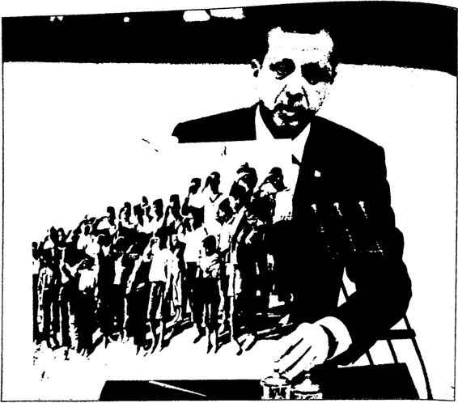 Başbakan Erdoğan’ın 23 Nisan 2013 tarihli grup konuşmasında gösterdiği fotoğraflardan biri.
Gerçekten de dört dörtlük bir konuşma! Ancak Erdoğan, 1920 ruhundan, Kurtuluş Savaşı şehitlerinden, Kurtuluş Savaşı’nın nasıl büyük güçlüklere göğüs gerilerek kazanıldığından ve Kurtuluş Savaşı’nın önderi Atatürk’ten “övgüyle” söz ederken, Erdoğan’ın “yandaş medyasında” sabah akşam Atatürk’e ve Cumhuriyet’e hakaret eden, yakın tarihi altüst eden görevli/maaşlı tarihçiler, gazeteciler ve aydınlar yine Atatürk’e ve Cumhuriyet’e saldırmaya devam etmişlerdir. Örneğin Erdoğan, Gazi Mustafa Kemal Atatürk’ü “istiklal kahramanı” diye adlandırıp “şükranla” yâd ederken, Erdoğan’ın çok sevdiği bir yandaş gazeteci/tarihçi Mustafa Armağan, “Kurtuluş Savaşı’nın asıl kahramanı Atatürk değil Vahdettindir! Kurtuluş Savaşı’nı Atatürk değil Karabekir başlatmıştır! Kurtuluş Savaşı o kadar önemli bir mücadele değildir!” gibi yalanlarla hem Kurtuluş Savaşı’nı hem de Atatürk’ün o savaştaki rolünü azaltmaya çalışmıştır. Dahası Başbakan Erdoğan, sabah akşam Atatürk’e hakaretler eden, köşesinden her gün Atatürk’e kin kusan, sırf Atatürk’ü karalamak için bir dergi çıkaran Mustafa Armağan adlı o gazeteci/tarihçinin “çok akıllı” olduğunu düşünüp 2013 yılındaki açılım sürecinde onu “akil insan” yapmıştır. İyi de bu ne perhiz bu ne lahana turşusudur! Başbakan Erdoğan bir taraftan Atatürk’ü överken, diğer taraftan Atatürk’ü yeren birilerini baştacı yaparak ne amaçlamaktadır?
Aslında Erdoğan, başbakan olmadan önce de Atatürk konusunda benzer bir tavır takınmıştır. Kendisi genelde Atatürk’ü eleştirmekten uzak dururken çok sıkı fıkı olduğu kişilerin Atatürk’ü alabildiğine eleş tirmesine ses çıkarmamıştır. Örneğin Erdoğan’ın belediye başkanlığı dö nemindeki danışmanı ve dünürü olan Sadık Albayrak, Şeyhülislam Mus tafa Sabri adlı kitabında, Kurtuluş Savaşı kahramanlarımız hakkında işgal kuvvetlerini aratmayacak kadar çirkin bir dil kullanan hain Mus tafa Sabri’yi öve öve bitirememiştir. Şu sözler Mustafa Sabri’ye aittir: "... İki paralık Mustafa Kemal kuvvetinin baskısına boyun eğerek İngilizlerin, Fransızların vesair devletlerin İstanbul’dan çekilip gitmele rini ancak Kemalistlerin idam ettiği Türk aklı kabul edebilir...”
Erdoğan’ın danışmanı ve dünürü Sadık Albayrak’ın “büyük din âlimi” diye yücelttiği hain Mustafa Sabri, Mustafa Kemal ve Ankara hükümetine şöyle kin kusmuştur:
"...Mustafa Kemal’in ve Ankara hükümetinin kahpeliklerini, sahtekârlıklarını şu ufacık mukaddimeye (önsöze) sığdıracak değilim. Demek isterim ki, bu şekil değiştirmeleri, bu zıtlıkları işleyebilmek için insan utanmamazlıkta da kahraman olmalıdır. Hele dinsizlik olmadan haksızlığın, hayasızlığın bu derecesi tasavvur olunamaz...”
Kitabında, Atatürk’e “iki paralık”, “kahpe”, “sahtekâr”, “utan maz”, “hayasız” ve “dinsiz” diyen bir meczubu, hain Mustafa Sabri’yi yere göğe sığdıramayan birini, Erdoğan’ın kendisine “danışman” ola rak alıp belediyede kültür işlerinin başına getirmesini nasıl açıklaya cağız?
Erdoğan’ın belediye başkanlığı dönemindeki danışmanlarından biri de Prof. İhsan Süreyya Sırma’dır. Sırma da Türkiye’de Yanlış Din Anlayışı adlı kitabında Atatürk’ün hatırasına hakaret suçu işlemiş ol maktan dolayı bir buçuk yıl hapis cezası almıştır.
Erdoğan, başbakan olduktan sonra da bazı danışmanları bir fırsatını bulup Atatürk’ü eleştirmişler, Cumhuriyet tarihini çarpıtıp
kahramanları hain, hainleri kahraman yapmaya çalışmışlardır, örne ğin 2004 yılında Başbakan’ın danışmanı Cüneyt Zapsu, “Şeyh Said İsyam'tun tam ne olduğunu bilen var mı? Cumhuriyet tarihi bir daha okunmalı, hatta yeniden yazılmalı,diyerek “tarihle yüzleşip” Şeyh Said’e kol kanat germiştir.
Başbakan olmadan önce Sadık Albayrak, İhsan Süreyya Sırma gibi Atatürk düşmanlarını yanma alan, Haşan Hüseyin Ceylan, Şevki Yılmaz gibi Atatürk düşmanı meczuplarla aynı partide siyaset yapmayı içine sindiren Erdoğan, başbakan olduktan sonra da Mustafa Arma ğan gibi bir Atatürk düşmanını “akil insan” yapmıştır. Görüldüğü gibi değişen hiçbir şey yoktur.
Başbakan R. Tayyip Erdoğan, 2013 yılında AKP’nin dış politi ka “başarısından” söz ederken de Atatürk’ü övmüş ve hatta kendisini Atatürk’e benzetmiştir. Erdoğan, Kızılcahamam’da partisinin istişare ve değerlendirme toplantısının kapanışında yaptığı konuşmada birçok Müslüman ülkede Türkiye için ellerin semaya kalktığım ifade ederek, “Pakistan’da sadece camilerde değil evlerde, sokaklarda, okullarda bi zim için dualar edildi. Arjantin'de bizim için dualar edildi. Gazi Musta fa Kemal'in ifadesiyle, ‘Dini miibini İslam'ın son kalesine yönelik sal dırı karşısında İslam coğrafyası gözyaşlarına boğuldu,' diyor. Şundan emin olun bugün de bizim için aynı dualar yapılıyor. Bugün de bizim için yine eller semaya kalkıyor. Bugün de Gazze'de, Kudüs'te Beyrut'ta Mekke'de Medine’de bizim için gözyaşları içinde dualar ediliyor. İşte biz böyle bir sorumluluğu taşıyoruz, ” demiştir. Başbakan bu konuş masında genel olarak Suriye yönetimini ve Beşar Esad’ı hedef almıştır. Erdoğan Esad’a, “ Vallahi de bunun hesabını vereceksin/” diye ses lenmiştir. Bir Müslüman ülkenin, Suriye’nin emperyalist kuşatmayla çevrilmiş liderinden, Beşar Esad’dan hesap sormaya kalkan Başbakan Erdoğan’ın kendisini, Kurtuluş Savaşı’ndaki Atatürk’le özdeşleştirmesi son derece yanlıştır. Çünkü bilindiği gibi Atatürk, Haçlı emperyaliz mi ile işbirliği yaparak herhangi bir Müslüman ülkenin emperyalist kuşatmayla çevrilmiş Müslüman liderini devirmek için bir mücadele içine girmemiştir. Atatürk, ülkesini işgal eden Haçlı emperyalizmine karşı bir mücadele içine girmiştir ve bu mücadelede yine Haçlı em peryalizminin sömürüsü altındaki Müslümanların desteğini almıştır. Erdoğan’ın kendisini Kurtuluş Savaşı’ndaki Atatürk’e benzetebilmesi için her şeyden önce emperyalizmle birlikte değil, emperyalizme karşı olması gerekir.
 Erdoğan, birçok salon konuşmasında arkasında Atatürk’ün yukarıdaki fotoğrafını kullanmaktadır. Kanımca bir taraftan Atatürk’ü daha çok üstü örtülü olarak eleştiren Erdoğan, diğer taraftan bilinçaltında Atatürk’e gizli bir hayranlık beslemekte, kendisini Atatürk’le özdeşleştirmektedir.
Erdoğan, birçok salon konuşmasında arkasında Atatürk’ün yukarıdaki fotoğrafını kullanmaktadır. Kanımca bir taraftan Atatürk’ü daha çok üstü örtülü olarak eleştiren Erdoğan, diğer taraftan bilinçaltında Atatürk’e gizli bir hayranlık beslemekte, kendisini Atatürk’le özdeşleştirmektedir.
R. Tayyip Erdoğan ayrıca Selanik’te Atatürk’ün evini ziyaret et miş ve kendi ifadesiyle Atatürk’ün babası Ali Rıza Efendi’nin de evini restore ettirmiştir! Bu faaliyetlerini de Atatürk’e karşı olmadığının de lilleri olarak sunmuştur.
Aslına bakılacak olursa “Atatürk’le aldatma” ya da “Atatürk’le meşrulaştırma” politikası Türkiye’de çok eski bir siyasi oyundur. Ör neğin bu ülkede geçmişte Atatürk’ün mirasını yerle bir eden Adnan Menderes, “Paraların pulların üstüne Atatürk’ün fotoğraflarını yeni den ben koydum. Atatürk'ü koruma kanununu ben çıkardım. En çok Atatürk heykelini ben yaptımr diye Atatürkçü görünmeye çalışmıştır. “Sizi gidi Batı taklitçileridiye Atatürkçüleri, çağdaş değerleri savu nanları eleştiren, “Adil düzen” diye aslında “Şeriat düzenini” savunan Necmettin Erbakan, “ Yaşasaydı Atatürk de RP’li olurdur demiştir. 12 Eylül Darbesi’yle Kemalizme son büyük darbelerden birini vurup din137
ci, sağ iktidarların önünü açan Kenan Evren, sabah akşam Atatürkçü lükten söz etmiştir. Benzer biçimde müfredattan Atatürk’ü çıkarmaya, kurumlardan TC’yi kaldırmaya kalkan, terör örgütüyle pazarlık yapan, federasyondan ve başkanlık sisteminden söz eden, Türkçülük dahil her türlü milliyetçiliği ayaklarının altına alan, anayasadan Türk ve Atatürk kavramlarını çıkartmanın hesaplarını yapan AKP’nin Genel Başkanı Başbakan R. Tayyip Erdoğan da kendisinden önceki “sağcı” iktidarlar gibi gerektiğinde Atatürk’ten övgüyle söz etmiştir ve edecektir.
Asım Arslan, Sömürülen Atatürk ve Atatürkçülük adlı kitabında aslında Atatürkçü olmadıkları halde “siyaseten” Atatürkçü görünen partileri, iktidarları şöyle eleştirmiştir:
“Atatürk sanki ‘sandıktan hep kapitalistlerin temsilcileri çıksın ve Türkiye’yi hep onlar yönetsin, ulusal gelirin yarıdan fazlasını mut lu azınlığa verin, zenginleri daha zengin, fakirleri daha fakir yapın, Amerika’ya ayrıcalık tanıyın, yeraltı servetlerini yabancılara peşkeş çekin, düşünceyi, gerçeği yazanları cezalandırın, öğretmenlere kıyın, halkı eğitmeyin, ortaçağ karanlığında bırakın, vurguna, soyguna, sö mürüye, yolsuzluğa göz yumun, Türkiye’yi dünyanın en geri ülkelerin den biri durumuna bırakın,’ demiş gibi; Türkiye’yi kapitalistlerin çıka rını birinci planda tutarak yönetenler Atatürkçü, ulusal gelirin yarıdan fazlasını mutlu azınlığa verenler Atatürkçü, zenginleri daha zengin, fakirleri daha fakir yapanlar Atatürkçü, düşünceyi, gerçeği yazanla rı cezalandıranlar Atatürkçü, öğretmenlere kıyanlar Atatürkçü, halkı eğitmeyenler, ortaçağ karanlığında bırakanlar Atatürkçü, vurguna, soyguna, sömürüye, yolsuzluğa göz yumanlar Atatürkçü, Türkiye’yi dünyanın en geri ülkelerinden biri durumunda bırakanlar Atatürkçü... Evet, o biçim Atatürkçü...
Atatürk’ün ölümünden sonra iktidara gelen tüm partiler Atatürk çülükten uzaklaşmışlar, Atatürkçülüğü yozlaştırmışlar, yolundan sap tırmışlar, Atatürk devrimlerinden ödün vermişler, daima zenginlerin, tutucuların dümen suyunda gitmişler, fakir halk kitlelerinin yararına olacak köklü bir düzen değişikliğine karşı çıkmışlar ve Türkiye'yi ulu sal gelirin çok adaletsiz dağıldığı geri bir ülke haline getirmişler ve son ra da Atatürkçü geçinmişler, Atatürkçülüğü yüzlerine maske yapmışlar ve vatan, millet, din, iman, hak, hukuk, adalet, demokrasi üzerinde bol bol söylev çekerek fakir halk kitlelerini uyutmuşlar, uyutmuşlar, uyutmuşlardır.
Türkiye'de yıllardan beri ‘Atatürkçülük' adı altında bir oyun, bir
komikdram oynanmaktadır. Öyle sanıyoruz ki daha uzun zaman de vam edecektir bu oyun... ”
Bu cümlelerin yazarı Asım Aslan çok haklı: Bugün 2013 ve bu “Atatürkçülük oyunu” hâlâ devam ediyor.
Sonuç olarak görülen o ki Başbakan R. Tayyip Erdoğan, Ata türk’üyle, İnönü’süyle, Fevzi Çakmak’ıyla erken Cumhuriyet dönemi uygulamalarına karşıdır; o dönemde yapılanları genelde doğru bul mamaktadır. Ancak “taktik gereği” erken Cumhuriyet dönemi eleş tirilerini İsmet İnönü ve tek parti CHP üzerinde yoğunlaştırmaktadır. Atatürk’ten ya hiç söz etmemekte ya da “Atatürk iyiydi de İnönü onu yoldan çıkardı/” veya “Atatürk değil İnönü yaptır tezlerini işlemek tedir. Erdoğan, Atatürk’ü eleştirmekten kaçınırken ve hatta zaman zaman Atatürk’ten övgüyle söz ederken, partisine mensup bazı millet vekillerinin ve kanatları altındaki “yandaş” aydınların sabah akşam Atatürk’ü eleştirdikleri görülmektedir. Bu nedenle Erdoğan’ın bir “Er ken Cumhuriyet Dönemi Eleştiri Stratejisi” olduğunu söyleyebiliriz. Bu stratejiye göre Erdoğan, İnönü ve Tek Parti üzerinden, diğer AKP’li milletvekilleri ve yandaş aydınlar ise Atatürk üzerinden erken Cumhu riyet dönemini alabildiğince eleştirmektedirler.
Erdoğan, partisine Cumhuriyet’in yüzüncü yılı olan 2023’ü hedef olarak gösterirken bile, o Cumhuriyet’in kurucusu Atatürk’ten değil, Osmanlı padişahı Fatih’ten söz etmeyi tercih etmiştir. Örneğin 28 Ma yıs 2013 tarihli grup konuşmasında 2023 hedefi ve Fatih konusunda şunları söylemiştir: “2023’ü bir hedef olarak belirledik. Daha sonra 2071’i de bir hedef tarihi olarak belirledik. Biz 2053’e giderken bir değil, yüz değil binlerce Fatih Sultan, yüz binlerce Ulubatlı Haşan ye tişsin istiyoruz. Biz çocuklarımıza ufuk vermek zorundayız. Tarihte aldığımız misyonu onlara bir istikamet olarak göstermek zorundayız. Fatih’in İstanbul’u fethettiği yaştaki çocuklara o ruhu aşılamak zo rundayız. STK’ları medyasıyla üniversitelerimizle birlikte dayanışma içinde bunu yapmalıyız. Medya dizi filmleriyle özellikle gençliğimize düşünmeyi değil çok daha farklı şekildeki uygulamaları getirecek anla yışı telkin edecekse biz aradığımız bu nesli bulamayız. (...) Hafta içinde TBMM tarihi bir adım atarak bağımlılık yapan maddelerle ilgili önemli bir düzenlemeyi kanunlaştırdı. Fatih nesline böylesine anlamlı bir yasa armağan ettiğiniz için sizinle gurur duyuyoruz. Şimdi ben tabii \şaribül leyli ren nehar bir nesil istemiyoruz dedim neler neler yazdılar. Yazın bakalım nereye kadar yazacaksınız.”° Erdoğan, Atatürk'ün kurduğu Cumhuriyet’in yüzüncü yılma gi derken, “Biz 2053’e giderken bir değil, yüz değil binlerce Fatih Sultan, yüz binlerce Ulubatlı Haşan yetişsin istiyoruzdiyor ama, “Bir tane Atatürk, bir tane Mustafa Necati yetişsin,” demiyor, diyemiyor. İnsan bu durumda ister istemez sormadan edemiyor, “Yoksa Başbakan’m kafasındaki cumhuriyet, Atatürk Cumhuriyeti değil de başka bir cum huriyet midir?” Çünkü binlerce Fatih, yüz binlerce Ulubatlı’mn olduğu cumhuriyet olsa olsa ancak “Yeni Osmanlı Cumhuriyeti” olur!
Erdoğan’ın 2013’te İstanbul’da temelini attığı 3. köprüye Osmanlı Padişahı Yavuz’un adı veriliyor. Erdoğan, konuşmalarında sözü dön dürüp dolaştırıp “ecdad” dediği Osmanlı’ya getiriyor, “Osmanlı şöyle iyiydi, böyle iyiydi? Şöyle dünyaya model oldu?” diye ballandıra bal landıra anlatıyor, ama Osmanlı’nın son 300 yılının çöküş sancılarıyla geçtiğini, Osmanlı’nın bırakın dünyaya model olmayı kendi kendine bile model olamayıp büyük bir gürültüyle yıkıldığını anlatmıyor. Os manlı padişahlarım bütün hatalarına karşın yüceltirken, Atatürk’ü bü tün başarılarına karşın ağzına almaktan uzak duruyor.
Erdoğan, Taksim Gezi Parkı olayları sonrasında, 16 Haziran 2013’te Kazlıçeşme mitinginde AKP’lilere şöyle seslenmiştir: “Yasa lara uygun Türk bayraklarım biliyorsunuz. Bayrak yasasındaki Türk bayrağının tanımı budur. Bunun dışındaki bayraklar bayrak yasasına uygun değildir. Bayrak yasasına uygun olan budur. Bunları balkonlara asmanızı istiyorum. Bunları balkonlarınıza asarak binlerine en güzel cevabı vereceksiniz. ” Erdoğan bu sözleriyle eylemcilerin günlerdir el lerinde taşıdıkları Atatürklü Türk bayraklarından rahatsız olduğunu göstermiş ve bir anlamda bu Atatürklü bayrakları “yasadışı” ilan et miştir. Aynı şekilde 23 Haziran 2013 Erzurum mitinginde de “Evini ze Türk bayrağı asm. Ama üzerinde herhangi bir sembol olmayan Türk bayrağı asın. Ama üç hilali de açarız derseniz, o da OsmanlTnındır, onunla da gurur duyarız,”' diyerek aynı tavrını sürdürmüş, ancak bu sefer “bayrak yasasına uymayan” üç hilalli bayrağı da asabileceklerini söylemiştir. Yani Erdoğan’a göre üzerinde Atatürk olan Türk bayrağı yasadışıdır ve balkonlara aşılmamalıdır, ama üzerinde üç hilal bulunan bayrak “yasadışı da olsa” balkonlara aşılmalıdır. Çünkü “Atatürk” Cumhuriyet’in, “üç hilal” ise Osmanlı’nın sembolüdür. Aslında BOP Eş Başkanı Yeni Osmanlıcı Başbakan R. Tayyip Erdoğan’ın bu söylemi kendi içinde son derece tutarlıdır!
R. TAYYİP ERDOĞAN’IN TARİH HOCALARI “Üstat” Necip Fazıl’dan “Akil” Mustafa Armağan’a R. Tayyip Erdoğan’ın tarihe bakışı daha çok öğrencilik yıllarında biçimlenmiştir ve stratejik/siyaseten yaptığı açıklamaları bir kenara ko yarsak, zaman içinde çok keskin farklılıklar da göstermemiştir. Anla şılan o ki Erdoğan, imamhatip yıllarında ve Milli Türk Talebe Birliği üyeliği döneminde erken Cumhuriyet dönemi karşıtlığıyla, Atatürk ve İnönü eleştirileriyle karşılaşmış, İslamcıOsmanlıcı görüş sahiplerinin Atatürk’e, İnönü’ye, erken Cumhuriyet dönemine ve dönemin tek par tisi CHP’ye kökten karşı, hatta “düşman” olduklarını görmüştür. Ger çekten de o gün bugündür İslamcıOsmanlıcı görüş, kendini Atatürk ve Cumhuriyet karşıtlığıyla tanımlamıştır. Bu görüştekilerin tarih oku malarında temel kaynaklarından biri, hatta birincisi “üstat” dedikleri Necip Fazıl Kısakürek’tir. 1950’lerin yeni yeni uç vermeye başlayan Türkİslam Sentezcileri, Necip Fazıl’ın yazılarıyla ve kitaplarıyla bes lenmiştir.
NECİP FAZIL KISAKÜREK Necip Fazıl Kısakürek’in yazılarıyla ve kitaplarıyla beslenenler den biri de R. Tayyip Erdoğan’dır. Erdoğan, başbakan olduktan sonra erken Cumhuriyet dönemi; tek parti CHP ve İnönü eleştirilerinin kay nağının Necip Fazıl’ın yakın tarih konusundaki yazıları ve kitapları olduğunu bizzat açıklamıştır.
Peki, ama R. Tayyip Erdoğan’ın en önemli “tarih hocası” diye adlandırabileceğimiz bu Necip Fazıl Kısakürek kimdir? Gerçekten de şiirin “üstadı” olan Necip Fazıl, “tarihin” de üstadı mıdır? Yoksa işin içinde çok daha başka işler mi vardır? Bu sorulara yanıt vermeden önce Necip fazıl Kısakiirek’i tanıyalım.
Eğitim, Öğrenim Hayatı Necip Fazıl, 26 Mayıs 1904'te Çemberlitaş’ta doğmuştur. Asıl adı Ahmet Necip'dir. Varlıklı bir ailenin çocuğudur.
Ahmet Necip eğitimine mahalle mektebinde başlamıştır. 1912’de Gedikpaşa’daki Fransız Frerler Okulu’na geçmiştir. Bir süre sonra bu okuldan ayrılıp Amerikan Koleji'ne devam etmiştir. Bu okulu sevmiş, ancak “haylazlık" yüzünden kovulmuştur. Ardından Büyükdere’de Emin Efendi Mahalle Mektebi’ne geçmiş ama orada da uzun süre ka lamamıştır. Daha sonra sırasıyla İstanbul Büyük Reşit Paşa Numune Mektebi ve Vaniköy’deki Rehberi İttihat Okulu’na devam etmiştir. Sonra da ailevi nedenlerle Heybeliada Bahriye Okulu’na girmiştir. Ah met Necip olan adı bu okulda Necip Fazıl’a dönüşmüştür. O günlerde hasta yatağındaki annesi Necip Fazıl’ı şiire yönlendirmiştir. Bu okulda Batı kültürüyle, Batılı bilim sanat insanlarının yazdıklarıyla tanışmıştır.
Necip Fazıl 1921 yılında Darülfünun Felsefe bölümüne girmiş, orada Ahmet Haşim, Faruk Nafiz, Yakup Kadri, Nâzım Hikmet, Ah met Kutsi, Ahmet Hamdi, Peyami Sefa gibi dönemin ünlü edebiyatçı ları ile tanışmıştır. İlk şiirlerini de o yıl yayımlamış ve daha sonra O ve Ben adlı eserinde belirteceği gibi, “kendisini artık dünyada tanımayan tek kişinin kalmadığını, kahvede, sokaklarda, salonlarda hep ondan konuştuklarını" sanmaya başlamıştır.
Daha sonra hükümet bursuyla Paris’te Sorbonne Üniversitesi’ne girmiştir. Burada ünlü filozof Henri Bergson’la tanışmıştır. Necip Fazıl O ve Ben adlı eserine Paris hayatından: “Kadını, kumarı, içkisi, bohem hayatı, şüpheci felsefesi, sara nöbetleri içinde sanatı; çözmeye çalıştık ça dolaşan ve büsbütün meseleleriyle Paris... Kâbus şehrindeki hayatı mı anlatmaya hicabım ve İslami edebim manidir,” diye söz etmiştir.
Paris’teki bu “bohem hayat” nedeniyle Türkiye’ye geri çağrılmış tır. Babıali adlı kitabında anlattığına göre, Zeki Mesut adlı müfettişin verdiği son aylığı ve memlekete dönüş parasını da kumar masasında kaybetmiştir. Anlaşıldığı kadarıyla kumar tutkusu Paris’te başlamıştır.
CHP’li Necip Fazıl Evet, yanlış okumadınız! Necip Fazıl bir zamanlar CHP’li denecek kadar dönemin tek partisi CHP ile içli dışlıdır. 1920’lerde 1930’larda hem devlet bünyesinde çalışmış hem de rejimin savunuculuğunu yap mıştır.
Paris’ten Türkiye’ye döndükten sonra önce Felemenk Bahri Se fid Bankası’nda işe başlamış, sonra Osmanlı Bankası’nın Ceyhan, İs tanbul ve Giresun şubelerinde çalışmıştır. 1929’de İş Bankası Ankara Şubesi’nde muhasebe memuru olarak göreve başlamış, askerliğinin ardından Trabzon, İstanbul ve Edirne şubelerinde muhasebecilik yap mıştır. İlk şiir kitabı Öriimce 1925’te çıkmıştır. Cumhuriyet’in ilk yıl larında Tek Parti hükümetinden çok saygı görmüştür. Piyesleri devlet tiyatrolarında sahnelenmiştir. Kaldırımlar adlı ikinci şiir kitabı bu yıl larda (1928) yayımlanmıştır. 19301934 arasında genç Cumhuriyet’i savunmuş, yobazları, softaları eleştirmiştir.
Necip Fazıl, hükümetten para sızdırmanın yollarını da CHP döne minde öğrenmiştir. Şöyle ki: 1936 sonunda, bir edebiyat dergisi çıkar maya karar vermiştir. Doğruca Celal Bayar’ın evine gidip, “Memleke tin buna ihtiyacını takdir edersiniz. Eğer emrinizdeki bankalardan İş Bankası ve Siimerbank bana bir senelik peşin ilân karşılığı muayyen bir para verirlerse bir mesele kalmaz...” diyerek para istemiş, Celal Bayar’ı ikna edip 1.600 lira almayı başarmıştır. Bir milletvekilinin ayda 200 lira aldığı o günlerde doğrusu bu iyi paradır.
Necip Fazıl, CHP ile sıkı fıkı olduğu dönemde doğal olarak rejimi savunmuştur. 1930’larda yaptığı konuşmalarında rejim karşıtı güçlere göz açtırmamaktan söz etmiştir. Örneğin Aralık 1930 tarihli Mene men Olayı’ndan sonra Ankara Türkocağı’nda Kubilay’ı anma toplan tısında yaptığı konuşmada şöyle demiştir: “... Gözüme görünen şeyi açıkça, kaidesiz, tertipsiz ve imansız söylüyorum. Eğer zayıf tutarsan, eğer inkılâbın yüreğini, hassasiyetini ve sinirlerini temsil etmezsen, bı çağın ters tarafı ile yirmi dakikada kesilen Kubilay'ın kafasında sana tevcih edilen akıbeti seyredebilirsin... Türkiye'nin nüfus kütüğündeki softa ve mürtecilerin yeşil kanını kurutacaksın; bu kadar..." Aynı Necip Fazıl yıllar sonra bu sefer Menemen Olayı’nın “düzmece” oldu gunu iddia edecektir. 1969 yılında çıkan Son Devrin Din Mazlumla rı adlı kitabında şöyle demiştir: “1930 Aralık ayının sonlarına doğru Menemen'de cereyan eden hadise, birkaç serseriye yaptırılmış böyle bir tertip işinden başka bir şey değildir ve olanca gayesi büyük ve kuvvetli sandıkları bazı din adamlarım ortadan kaldırmak olmuştur.” “Evet, bütün şahsiyetli Müslümanları, bilhassa Nakşibendi tarikatı büyükle rini ortadan kaldırmak için hükümetçe düzenlenen Menemen Vak'ası, tertiplerin en vicdansızını teşkil eder.”
1932’de yazdığı Bir Hikâye Birkaç Tahlil adlı hikâyesinde “softa kimdir?” sorusuna şöyle yanıt vermiştir: Onu tarife hacet yok. Onu tanırız. Yürüyüşünden, duruşundan, bakışından, kaçışından tanırız. O zaten kendini gizlemiyor. Dün başına sarık sarıyordu. Bugün giydi ği şapka, hüsnü nazarında gene sarık. Bugünün sarıklısı dünden daha çok, daha yezittir. (...) Zamanın akışını zorlayan, kendi iddiasından başka hiçbir yenilik olmayan deliller müstesna, her yeni şey karşısın da ‘eskinin ısrarı softalıktır. İslamlık çıktığı gün putperestler softaydı. Asırlardır ilim ve cemiyetin terakkisi karşısında da İslamlık softadır.” Necip Fazıl, Atatürk’ün ölümü üzerine Cumhuriyet gazetesine Atatürk hakkında şu övgü dolu cümleleri yazmıştır:
“(...) Benim gözümde birbirine bağlı iki işin sahibi iki Atatürk var. Zaman tasnifinde bunlardan biri düşmanın denize dökülüşüne, öbürü bugüne kadar sürer. (...) Biri ölüm hükmü giymiş bir milleti şahlandırdı. Mucize çapında bir başarıyla madde ve askerlik planında muzaffer kıldırdı. Öbürü, bir an evvelki ölüm tehlikesini doğuran se bepler âlemine karşı harekete geçti, fikir ve cemiyet planında yeni bir bünye inşasına girişti... (...) İnkılâbcı Atatürk, Tanzimat’tan beri Türk cemiyetinin Avrupa medeniyet manzumesine kavuşturulması yolunda girişilen yarım ve kısır teşebbüsleri tam ve yüzde yüz randımanlı ham leler haline getirdi. (...) Milli Kahraman’in ölümü önünde duyduğu muz matem hissini, tek bir emniyet duygusu ile teselliye muktediriz: Teknesinde Atatürk’ü yoğuran Türk milletinin, için için tekevvünleriy le aynı çapta kahramanlara daima gebe kalacağı emniyeti...”
Necip Fazıl’m CHP ile iyi ilişkileri Atatürk’ün ölümünden sonra da devam etmiştir. Necip Fazıl, Atatürk’ün ölümü üzerine kurulan Celal Bayar hükümetinde Maarif Vekili olan Haşan Ali Yücel tarafından Dil Tarih Fakültesi kadrosundan Yüksek Devlet Konservatuarı’na ta yin edilmiştir.
Necip Fazıl, 19431978 yılları arasında beş devre halinde 512 sayı çıkan Büyük Doğu mecmuası aracılığıyla sesini duyurmuştur. 1940’h yıllarda Büyük Doğu dergisinde Atatürk’e övgüler dizmeye devam etmiştir. Örneğin Büyük Doğu dergisinin 9. sayısı “Atatürk’ün Altın Anahtarla Açtığı Son Fabrika Kapısı... Şimdi Onun Ruhu Aynı Anah tarla Türkün Zafer Kapısında...” başlıklı kapakla çıkmıştır. 10. sayıda ise “Atatürk Dirilecektir!” başlıklı bir yazı yayımlanmıştır. Söz konusu yazıda kurtarıcı olarak Atatürk’ü bekleyen bir Necip Fazıl vardır: “Bir gün Atatürk dirilecektir. Evet, laf ve hayal yahut fikir ve remz âleminde değil, doğrudan doğruya madde ve hakikat dünyasında Atatürk hayata dönecektir. Bir gün Atatürk, Etnografya Müzesi’ndeki taş sandukası nın kapağını omuzlar ile kaldırıp, ufkî (yatay) vaziyetten şakulî (dikey) hale geçecek ve sırtında mareşal üniforması, Ankara’da Atatürk bulva rında görünecektir. Bir gün onu, kâfurîden yontulmuş asîl ve mevzun parmaklar ile kılıcının kabzasını kavramış, zarif ve ince endam ile bir masaya eğilmiş ve gök gözler ile dünya haritasını süzmeğe başlamış olarak göreceğiz. Bugün, dünya muhasebe ve muvazenesinde Türk milletine ait hakların terazi kefesinde görüneceği andır. İşte o gün başı mızda bulunacak olan şahsiyet, günün gerektireceği üstün kurtarıcılık vasıflarına göre, ruh ile olduğu kadar maddesi ile de Atatürk’ten baş kası olmayacaktır. Zira, Türk milletinin içindeki Atatürk’lerin hareke te geçmeleri ile, onun sandukasını devirip bu Atatürk’lerin derisi içine yerleşmesi aynı ana rast gelecektir.”
Necip Fazıl 1943 yılından itibaren CHP’ye ve rejime muhalefet etmeye, dergisinde dini yayınlara ağırlık vermeye başlamıştır.
Nitekim 1943 yılının Aralık ayında “dini neşriyat yapmak ve re jimi beğenmemek” gerekçesi ile Büyük Doğu birkaç aylığına kapatıl mıştır. Ardından Necip Fazıl, Devlet Konservatuvarı’ndaki görevinden koyulmuştur. Dergi şubatta tekrar yayımlanmış, ama Mayıs 1944 ile Eylül 1945 arası tekrar kapatılmıştır. Necip Fazıl’a göre, o günlerde Başbakan Şükrü Saraçoğlu kendisine, “Allah ve ahlaktan bahsetmek yasaktır!” şeklinde tamim yollamıştır.
Necip Fazıl, dergisinin kapatılması ve memuriyetten kovulması üzerine, 1930’larda ve 1940’ların başında öve öve bitiremediği rejimi bu sefer yermeye başlamıştır. Öyle ki 1931’de softaları eleştiren Necip Fazıl, 1943 ten itibaren kendisi “softalık” yapmaya başlamıştır.
Necip FazıFm Hidayeti (!)
Necip FazıFın kendi anlatımına göre “hidayete erme süreci” 1934'te Bevoğlu'nda Ağa Camii’nde cumaları ders vermekte olan Nak şibendi büyüklerinden Vanlı Seyyid Abdülhakim Arvasî ile tanışması ile başlamıştır ve hayatı değişmiştir. Arvasî ile evinde yapılan sohbeti “buhran gecesi” olarak adlandırmıştır. O gün Arvasî kendisine, “Keş ke bu kadar zeki olmasaydın!” demiştir. Necip Fazıl, Arvasî etkisi ni Miirşid şiirinde şöyle anlatmıştır: “Bana, yakan gözlerle, bir kere cik baktınız; / Ruhuma, büyük temel çivisini çaktınız!” Necip Fazıl, Kafakâğıdı kitabında Arvasî’ye, “Köpeğin olarak kendi köpekliğimden kurtulayım; insan olayım!” diye yalvarmıştır. Necip Fazıl, Arvasî ile 1934’te tanışmış ama görülen o ki hayatını öyle çabuk değiştirmemiş tir. Nitekim 1943 yılına kadar hem CHP ile ilişkisini hem de içkili, kadınlı, kumarlı bohem hayatını sürdürmüştür.
Necip Fazıl 1943’ten itibaren Büyük Doğu dergisinde “din” ağır lıklı ve “rejim” karşın yazılar yazmaya başlamıştır. Büyük Doğu’da Pevgamber’in, Dört Halife’nin, bazı din büyüklerinin hayatı, şeriatın güzellikleri gibi konularda yazılar çıkmıştır. Çoğunu “Adıdeğmez” mahlasıyla yazan Necip Fazıl, yazılarında CHP, İsmet İnönü, Falih Rıfkı Atay gibi siyasiler ile Atatürk heykelleri, kürtajın artışı, kadının çalışması, okul müsamerelerinde ve ulusal bayramlarda genç kızların mini şort ya da mini etek giymeleri, kadınların açılıp saçılmaları gibi konularda sert eleştiriler yapmıştır.
Bir zamanlar Cumhuriyet’in faziletlerini anlatan Necip Fazıl, şim di Cumhuriyet’in kötülüklerini anlatmaya başlamıştır:
“Meşrutiyetten Cumhuriyet’e ve Cumhuriyetken İkinci Dünya Harbi’ne kadar gelinceye kadar süren üç merhale ufak tefek kemiyet farklarıyla, hesapsız ve kitapsız Batı’ya hayranlık, dünyayı ve nefsini müşahede altına almamak hastalığının yekpareleşeceği bir bütündür.
Ve işte şimdi bu hengâmenin, fikri ve ahlaki buhran hengâmesinin ta merkezindeyiz. Ahlaken iflas buhranlarının en korkuncunu geçirmek teyiz. Türk inkılâbı bir ahlak telakkisi ve bir ahlak yasası getiremedi. Ahlakın kaynağı dindir. Bizim ahlakımız da Müslümanlık ahlakıdır ve
olması lazımdır. Zaten topyekûn bütün cemiyet ana çizgilerini İslam ahlakının potasında eriyerek almıştır. Dünyanın en katıksız ahlakı İs lam ahlakıdır. Ne olmuşsak İslam ahlakı yüzü suyu hürmetine olduk. Biricik ve olabilecek ahlak kaynağımız İslam ahlakıdır.”
Çok değil birkaç yıl önce “softalığa” karşı olan Necip Fazıl gö rüldüğü gibi birkaç yıl sonra şimdi “ahlakı” sadece dine indirgeyip Türk devrimini “ahlak yasası getirememekle” suçlayacak kadar sof talaşmıştır. Bunu yaparken neredeyse 600 yıl boyunca “dini” referans alan Osmanlı İmparatorluğu’nun zaman içinde başta “ahlaken” olmak üzere her yönden çürüyerek yok olup gittiğini görmezlikten gelmiştir. Tabii insan birdenbire hayata baktığı pencereyi değiştirince, o değişim sırasında bazı şeyleri kaçırıyor ister istemez!
Necip Fazıl başka bir yazısında da şöyle demiştir:
“Cumhuriyet devri bütün Türk ve fikir hayatında bahtsız hengâmedir. (...) Cumhuriyet’ten sonraki azami herciimerç, azami dü zensizlik ifadesini milli kurtuluş hamlesinin ruh ve fikirde hazırlanma mış, ondan sonra da sindirilmemiş bir hareket olmasından başka hiçbir türlü izahı mümkün değildir...”
Necip Fazıl, “ruhtan” ve “fikirden” söz ediyor, ama 19111922 arasında 11 yıl aralıksız savaşmak zorunda kalan, varını yoğunu kay beden, geri kalmışlık ve hurafelerin bataklığında debelenen, sağlıksız, yorgun, yılgın ve moralsiz bir toplumla Atatürk’ün önce emperyaliz mi sonra geri kalmışlığı yenip çağdaş bir ülke kurduğundan hiç söz etmiyor. Sağlık devriminden, tarım devriminden, sanayi devriminden, eğitim devriminden, kadın devriminden, meclis/demokrasi mücadele sinden, bağnazlıkla ve hurafeyle mücadeleden, aklın ve bilimin reh berliğinin kabul edilişinden hiç söz etmiyor. Dünyada dün olduğu gibi bugün de bir benzeri daha olmayan bu Cumhuriyet mucizesinin “ruh” ve “fikir” eksikliğiyle başarılmış olması da herhalde ayrı bir mu cize olsa gerek! Necip Fazıl, genç Cumhuriyet’in “ruh” ve “fikirce” hazırlıksız olduğunu söylüyor, ama 1943’ten sonra neredeyse bütün ömrünü bu “ruh” ve “fikirce" hazırlıksız Cumhuriyet’i yıkmak için
harcadığını da unutuyor! O unutuyor ama tarihin hafızası unutmuyor tabii... Onun bu mücadelesini, bugün onun ralılei tedrisinden geçen lerin sürdüğünü düşünürsek aslında Cumhuriyetin “ruh” ve “fikirce” ne kadar güçlü olduğu kendiliğinden ortaya çıkacaktır sanırım.
Necip Fazıl zaman içinde gerçek bir CHP ve İsmet İnönü düşmanı haline gelmiştir. Öyle ki, 13 Aralık 1946’da yayımlanan Büyük Doğu dergisinin kapağına kocaman bir kulak çizip, “Başımızda Kulak İsti yoruz," yazarak İnönü'nün “az duymasını” çirkin bir üslupla eleştir miştir.
Necip Fazıl dinden, Allah’tan, kitaptan ve ahlaktan söz ettiği o günlerde İsmet İnönü’nün duyma yetisiyle dalga geçerek aslında din den, Allah’tan, kitaptan, ahlaktan ne derece nasibini aldığını da gös termiştir! Ayrıca İsmet İnönü duyma yetisini savaş meydanlarında kay betmiştir. İnönü bir topçudur, cephelerde yanında patlayan topların gürültüsüyle azalmıştır duyma yetisi.
Necip Fazıl’ın adeta bir yerlerden talimat almış, birilerince görev lendirilmişçesine genç Cumhuriyet’e, CHP’ye, Atatürk’e ve İnönü’ye yönelik saldırıları ve ağır din istismarı onu Tek Parti hükümetinin he defi haline getirmiştir. Dergisi kapatılmış ve toplatılmıştır. 11 Mart 194926 Ağustos 1951 tarihleri arasındaki dönemde derginin 613 sa yıları arasındaki 8 nüshası, yasaklanan Gençlik Rehberi adlı kitaptan alıntılar yaptığı gerekçesiyle toplatılmıştır.
Necip Fazıl ve Büyük Doğu dergisi artık tehlikeli bir silah haline gelmiştir. Sadece rejime karşı değil, hayata dini pencereden bakmayan herkese karşı kullanılacak bir silah. Bu silahın ilk doğrultulduğu olay Tan Matbaası Baskım’dır. Baskının arkasında Büyük Doğu dergisi vardır. 4 Aralık 1945 günü, İstanbul Üniversitesi’nde bir grup ellerin de T anin gazetesiyle sınıflara girip öğrencilere, ‘Kalkın ey ehli vatanV diye bağırarak öğrencileri harekete geçirip Beyazıt Meydanı’nda top lamıştır. Sayıları kısa sürede 10.000’e ulaşan kışkırtılmış kalabalık “Moskof uşağı” diye bağırarak Tan Matbaası’na saldırmıştır. Matba anın camlarını kırıp içeri giren öfkeli kalabalık matbaayı kullanılamaz hale getirmiştir. Boylece Necip Fazıl ve onun Büyük Doğu'su Türk basın tarihinin en yüz karası olaylarından birine imza atmıştır.
2Û1 Karaca, age., s. 19. 202 age., s. 19.
Necip Fazıl, Tan Matbaası Baskını’nı Büyük Doğu'nun organize ettiğini Babıali’de şöyle itiraf etmiştir:
“Bu, bir yıla varmayan yarım yamalak intişar devrinde Büyük Doğu’nun verimi ne olmuştur? Daha ilk (sondaj) girişiminde petrol bulunmuş ve onun, bütün yurda ve oradan bütün İslam âlemine yön ve yol gösterici alev sütunları halinde bir gün fışkırmak istidadı, en iptidaî şekliyle de olsa belirmiştir. Bu istidadın aksiyon plânında ilk kımıldanışı ‘Tan’ Gazetesi baskım... Bu gazetede karargâh kuran ko münizme... Birdenbire Anadolulu ve kökçü üniversite gençliğinin pen çesine düştü; eşyası toz gibi havaya savruldu ve makineleri makarna gibi didik didik edildi... Bu gençler Büyük Doğu idarehanesinin önü ne gelerek tezahürlerini göklere çıkarmışlar. Sabık Şair’i (Necip Fazıl) pencereye çağırmış ve hitabını çılgın alkışlar içinde dinlemişler ve yara berelerini aynı idarehanede tedarik ediliveren pansuman malzemesiyle sarmışlardır... Ve işte, hemen başlarına yıkılan ‘Tan’ gazetesi... Ve işte, ogiin boy göstermeye başlayan ilk Büyük Doğu gençliği!”
İşte “üstat”ın ilk büyük başarısı!
Necip Fazıl artık cephesini tam olarak belirlemiştir. O artık aman sız bir CHP ve rejim karşıtıdır. Bunda, II. Dünya Savaşı’nın dışında kalmakla birlikte savaş ekonomisinin iyice perişan hale getirdiği halk kitlelerinin artık CHP’den uzaklaşıp yatağını arayan bir nehir haline gelmelerinin de etkisi vardır. Necip Fazıl o coşkun nehre dergisiyle yön vermeye soyunmuştur.
Necip Fazıl’m CHP’den uzaklaşıp rejimle kavgalı hale gelmesiy le Türkiye’nin “tam bağımsızlık” politikasından uzaklaşıp ABD’nin dümen suyuna girmesi hemen hemen aynı döneme denk gelmektedir. Bilindiği gibi Türkiye 1946’dan itibaren ABD ile ikili anlaşmalar im zalamaya başlamış, Trunborg Raporu, Marshall Yardımı ve Truman Doktrini ile Türkiye, Atatürk’ün Devletçi kalkınma, akıl ve bilim eş liğinde çağdaşlaşma ve “tam bağımsızlık” politikalarından vazgeçip özel teşebbüs eliyle, ABD kredileriyle kalkınma ve dine yönelme politi kalarına yelken açmıştır. İşte o günlerde Necip Fazıl da yelkenlerini bu ABD rüzgârıyla doldurmuştur.